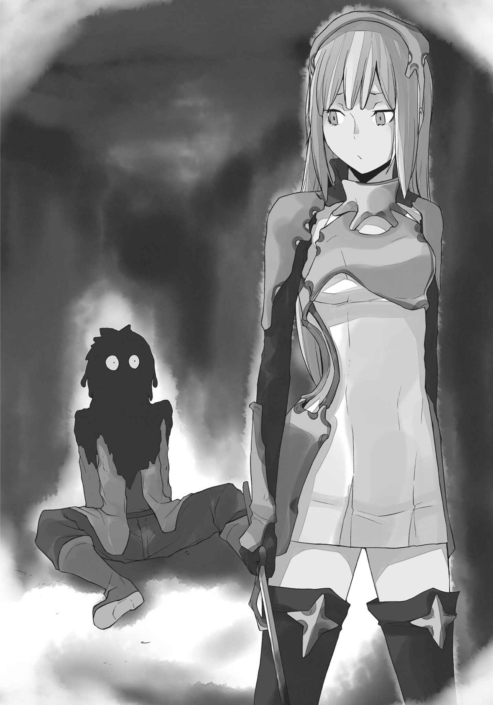
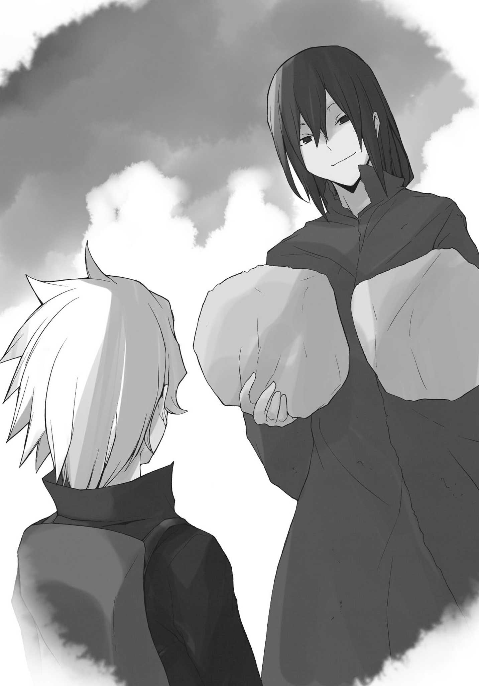
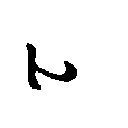

| ダンジョンに出会いを求めるのは間違っているだろうか (GA文庫) | |
| 大森 藤ノ | |
| (2013) | |
ダンジョンに出会いを求めるのは間違っているだろうか
大森藤ノ

本書に掲載されているコンテンツの著作権等の知的財産権およびその他すべての権利は、ソフトバンク クリエイティブ株式会社または正当な権利を有する第三者に帰属します。
本書の内容を権利者の許諾なく複製・複写・翻案・放送・出版・データ配信（送信可能化を含む）などすることはできません。
カバー・口絵 本文イラスト
ヤスダスズヒト
ダンジョンに出会いを求めるのは間違っているだろうか？
数多 の階層に分かれる無限の迷宮 。凶悪なモンスターの坩堝 。
富と名声を求め自分も命知らずの冒険者達に仲間入り。ギルドに名前を登録していざ出陣。
手に持つ剣一本でのし上がり、末に到来するのはモンスターに襲 われる美少女との出会い。
響き渡る悲鳴、怪物の汚い咆哮 、間一髪 で飛び込み翻 る鋭い剣の音。
怪物は倒れ、残るのは地面に座り込む可愛 い女の子と、クールにたたずむ格好の良い自分。
ほんのりと染まる頰 、自分の姿を映す潤 んだ綺麗 な瞳 、芽吹 く淡 い恋心。
時には酒場の可愛い店員にその日の冒険を語り、仲を育 んでみたり。
時には野蛮な同業者からエルフの少女の身を守ってみたり。
時には伸び悩むアマゾネスの戦士を慰 め手を貸し、パーティを組んでみたり。
時には他の女の子と仲睦 まじい様を目撃され、嫉妬 されてみたり。
時には時には時には時には......。
子供からちょっと成長して、英雄の冒険譚 に憧れる男が考えそうなこと。
可愛い女の子と仲良くしたい。綺麗な異種族の女性と交流したい。
少し邪 でいかにも青臭い考えを抱くのは、やっぱり若い雄 なりの性 なんじゃないだろうか。
ダンジョンに出会いを、訂正、ハーレムを求めるのは間違っているだろうか？
結論。
僕が間違っていた。
『ヴヴォオオオオオオオオオオオオオオオオオオオオオオオオオッ!? 』
「ほぁああああああああああああああああああああああああああっ!? 」
少し邪でいかにも青臭い考えを抱いて冒険者になった結果、僕は今、死にかけている。
具体的には牛頭人体のモンスター、『ミノタウロス』に追いかけられている。
Ｌｖ．１の僕の攻撃では一切ダメージを与えられない化物に、 い殺されようとしている。
詰んだ。間違いなく、詰んだ。
浅はかで卑猥 な妄想に取りつかれた僕の末路 。牛の 。僕の痴 れ者。
運命の出会いなんかに憧れた僕が馬鹿 だった。
一攫千金 ならぬ一攫美少女 なんて夢のまた夢だった。
日々数え切れない死者を出すダンジョンにそれを求めていた時点で、僕は終わっていたんだ。
あぁ戻りたい。いい歳 して瞳をキラキラさせながら、ギルドの冒険者登録書にサインした僕自身を殴り飛ばすために、あの時へ戻りたい。
物理的にも僕の命運的にも、それはもはや不可能なんだけど。
『ヴゥムゥンッ!! 』
「でえっ!? 」
ミノタウロスの蹄 。
背後からの一撃は体を捉 えることこそしなかったものの、土の地面を砕 き、ちょうど僕の足場も巻き込んだ。
足をとられ、ごろごろとダンジョンの床を転がる。
『フゥー、フゥーッ......！』
「うわわわわわわわわわわっ......!? 」
臀部 を床に落とした態勢で、みじめに後ずさりした。
可愛い女の子達が見たら一瞬で幻滅 しそうな光景。僕には最初から、お伽噺 に出てくるような英雄になる資格はなかったらしい。
ドンッと背中が壁にぶつかる。行き止まりだ。
何十もの通路を抜けて、 り着いた広いフロア。正方形の空間の隅に僕は追い込まれた。
（あぁ、死んでしまった......）
カチカチと歯を鳴らし涙をえんえん。
ミノタウロスの荒く臭い鼻息が僕の肌を殴る。
自分よりも一回りも二回りも大きい筋骨隆々 の体を見上げ、壊れたように不細工な笑みを浮かべた。
──結局、女の子との出会いは訪れなかった。
自分を死に追いやった考えをしょうこりもなく思い浮かべながら、僕の目は蹄を振りかぶるモンスターの姿を映す。
次の瞬間、その怪物の胴体に一線が走った。
「え？」
『ヴぉ？』
僕とミノタウロスの間抜けな声。
走り抜けた線は胴だけにとどまらず、厚い胸部、蹄を振りかぶった上腕、大 部 、下肢 、肩口、そして首と連続して刻み込まれる。
銀の光が最後だけ見えた。
やがて、僕では傷一つ付けられなかったモンスターが、ただの肉塊になり下がる。
『グブゥ!? ヴゥ、ヴゥモオオオオオオオオオオォォォオォ──!? 』
断末魔 が響き渡る。
刻 まれた線に沿ってミノタウロスの体のパーツがずれ落ちていき、血飛沫 、赤黒い液体を噴出して一気に崩れ落ちた。
大量の血のシャワーを全身に浴びて、僕は呆然 と時を止 める。
「......大丈夫ですか？」

牛の怪物に代わって現れたのは、女神様と見紛 うような、少女だった。
蒼 色の軽装に包まれた細身の体。
鎧 から伸びるしなやかな肢体 は眩 しいくらい美しい。
繊細 な体のパーツの中で自己主張する胸のふくらみを押さえ込む、エンブレム入りの銀の胸当てと、同じ色の紋章 の手甲 、サーベル。地に向けられた剣の先端からは血が滴 っている。
腰まで真 っ直 ぐ伸びる金髪は、いかなる黄金財宝にも負けない輝きを湛 えていて。
女性から見ても華奢 な体の上に、いたいけな女の子のような童顔がちょこんと乗っている。
僕を見下ろす瞳の色は、金色。
（......ぁ）
──蒼い装備に身を包んだ、金眼金髪の女剣士。
Ｌｖ．１で駆け出しの冒険者である僕でも、目の前の人物が誰 だかわかってしまった。
【ロキ・ファミリア】に所属する第一級冒険者。
ヒューマン、いや異種族間の女性の中でも最強の一角と謳 われるＬｖ．５。
【剣姫 】アイズ・ヴァレンシュタイン。
「あの......大丈夫、ですか？」
大丈夫じゃない。
全然大丈夫じゃない。
今にも爆発して砕 け散ってしまいそうなこの僕の心臓が、大丈夫なわけがない。
ほんのりと染まる頰、相手の姿を映す潤んだ瞳、芽吹く淡い......いや、盛大な恋心。
妄想は結実、配役は逆転、想いはド頂点。
僕の心はこの時に奪われた。
ダンジョンに出会いを求めるのは間違っているだろうか？
再結論。
僕は、間違えてなんかいなかった。
「エイナさぁああああああああああんっ！」
「ん？」
ダンジョンを運営管理する『ギルド』の窓口受付嬢、エイナ・チュールは片手に持った小冊子から顔を上げた。
ほっそりと尖 った耳に澄 んだ緑玉色 の瞳。セミロングのブラウンの髪は光沢に れている。美しいその容姿はエルフのように完璧に冴 え渡っているわけではなく、どこか角 が取れた風貌 。細い体はギルドの制服である黒のスーツとパンツを綺麗 に着こなしていた。
仕事人然としながら親しみやすいともっぱら評判の妙齢 の彼女は、ヒューマンとエルフのハーフである。
多くの冒険者達がダンジョンにもぐっている昼下がり、受付役として暇 を持て余していたエイナは、自分の名を呼ぶ声の主をすぐに察 する。
（今日も無事だったんだ......）
既に半月前か。
瞳を盛大に輝かせながら、あの少年がギルドで手続きを行ったのは。
自分がダンジョン攻略のアドバイザーとして監督することになったその少年の歳は十四。種族はもとより老若男女も関係なくなれる冒険者であるが、その職業柄、犠牲者は絶えない。まだ年端 もいかない子供だ、わざわざ危険地帯へ赴 くのに無論いい顔はできなかった。
自分が担当しただけあってその身を案じているエイナは、少年──ベル・クラネルの安否を確認して頰 を緩 ませる。
眼鏡をかけ直し、自らも声をかけるべく声の方向に振り向くと、
「エイナさぁぁああああああああああああああああああああああああんっっ!! 」
全身をドス黒い血色に染めきった少年の姿が、視界に飛び込んできた。
「うわあああああああああああああああああ!? 」
「アイズ・ヴァレンシュタインさんの情報を教えてくださあああああああああいっ！」
「ベル君、キミねぇ、返り血を浴びたならシャワーくらい浴びてきなさいよ......」
「すいません......」
僕はエイナさんの言葉にうなだれた。
ギルド本部のロビーに設 けられた小さな一室。今、僕とエイナさんはお互い椅子 につき、テーブルを挟んで向かい合っている。
体を洗ってさっぱりした僕の前で、エイナさんはこれみよがしに溜息 をついた。
「あんな生臭くてぞっとしない格好のまま、ダンジョンから街を突っ切って来ちゃうなんて、私ちょっとキミの神経疑っちゃうなぁ」
「そ、そんなぁ」
見目麗 しいエイナさんにそんなことを言われてしまうと冗談抜きで心が抉 られる。眦 に涙が浮かび上がってしまいそうだった。
エイナさんは苦笑して僕の鼻をちょんと指で押さえると、「今度は気をつけてね？」と微笑 んでくれた。ぶんぶんぶんっ、と僕は大げさに首を縦に振る。
「それで......アイズ・ヴァレンシュタイン氏、の情報だったっけ？ どうしてまた？」
「えっと、その......」
赤くなりながら先程あった一部始終を語った。
普段通っているダンジョンの２階層から一気に５階層まで下りてみたこと。
足を踏み入れた瞬間いきなりミノタウロスに遭遇 して追いかけ回されたこと。
追い詰められたところを、【剣姫 】アイズ・ヴァレンシュタインさんに救われたこと。
動揺しながらも何とかお礼を言おうとしたけれど、手を差し伸べられた瞬間頭が真っ白になり──膨 れ上がった羞恥 と緊張によって混乱をきたしてしまい──全速力で逃げてしまってきたこと。
耳を傾 けてくれていたエイナさんは、僕の話が進んでいく内に表情を険 しくしていく。
「──もぉ、どうしてキミは私の言いつけを守らないの！ ただでさえソロでダンジョンにもぐってるんだから、不用意に下層へ行っちゃあダメ！ 冒険なんかしちゃいけないっていつも口を酸っぱくして言ってるでしょう!? 」
「は、はいぃ......！」
──『冒険者は冒険しちゃいけない』──
エイナさんの口癖だ。文字だけ見ると矛盾しているように見えるけど、つまりは『常に保険をかけて安全を第一に』という意味だ。
特に僕みたいな駆け出しは肝 に銘 じておかなければいけないのだとか。冒険者に成り立ての時期が一番命を落とすケースが多いらしい。
５階層でＬｖ．２にカテゴライズされるミノタウロスと遭遇 するなんて誰にも予想できない。
あのモンスターは少なくとも15 階層以下の迷宮に出現するというのが一般見解だ。エイナさんに言わせれば、『ダンジョンは何が起こるかわからない』っていうことなんだろう。
......本当に、あの人がいなかったら今頃死んでいた。思い出すだけで背筋が震え、遅まきながら尿意なんかを催 してくる。
僕はエイナさんに言われたことを二度と忘れないと心に誓 った。
「はぁ......キミは何だかダンジョンに変な夢を見ているみたいだけど、今日だってそれが原因だったりするんじゃないの？」
「あ、あはははっ......」
正解。異性との出会いを求めて、ちょっと冒険をしてみたくなりました......なんて馬鹿正直に言ったら、きっと叩 かれちゃうな。
もともと、僕が冒険者になろうとしたのはまだ見ぬ美女美少女との巡り会い──それこそ英雄譚に出てくる運命の出会いのような──に憧れてという不純な動機だった。ギルドの手続きの際に僕の胡散 臭い情熱を目 の当たりにしていたエイナさんは、こちらの胸中は把握していないにしても、半ば確信しながら疑いの眼差しを向けてくる。
いやでもっ、今日からは違う。僕はそんな不純な動機を打ち捨てて、純真一途 な理由でダンジョンにもぐるんだ。
あの人に、出会ったから。
「あの、それで、ヴァレンシュタインさんのことを......」
「う～ん......ギルドとしては冒険者の情報を漏 らすのはご法度 なんだけど......」
「教えられるのは公然となっていることくらいだよ？」と前置きをしてエイナさんは語り始めた。何だかんだでこの人は親切だ、僕が駆け出しだからって理由もあるのかもしれないけど。
本名、アイズ・ヴァレンシュタイン。【ロキ・ファミリア】の中核を担 う女剣士。
剣の腕前は間違いなく冒険者の中でもトップクラス。たった一人でＬｖ．５相当のモンスターの大群を殲滅 したこともあり、冒険者達の間でついた、もうひとつの渾名 が【剣姫】をもじった『戦姫 』。
神様達の間でもその名前は知れ渡っており、『アイズたんマジ無双』とまで称賛されているらしい。
下心を持って近寄ってくる異性は軒 並み玉砕、あるいは粉砕。
ついこの間にはとうとう千人斬りを達成......。
「え～と、あと他に何があったかなぁ。あの容姿であの強さだから、話題はつきないんだよね」
「あ、あの、冒険者としてじゃなくて......趣味とか好きな食べ物とか、後は今言った最後みたいな情報を......」
僕が顔を熱くしながらおずおず言うと、エイナさんは目を二、三度と瞬 かせた。
「なぁに、ベル君もヴァレンシュタイン氏のことを好きになっちゃったの？」
「いや、その......ぇぇ、はい......」
「あはは、まぁ、しょうがないのかな。同性の私でも彼女には思わず溜息をついちゃうし」
苦笑してエイナさんは口元に紅茶を運ぶ。動作一つ、どれをとっても雅 やかだ。
ヴァレンシュタインさんのことを誉 めるこの人も、冒険者達の中では普通に人気が高い。柔和 な線で縁取 られた宝石のような瞳に、ほっそりとした顎 、綺麗な鼻筋。美人っていう人の条件はしっかりと備えちゃってる。狙 っている人は数知れないともっぱらの 。僕もエイナさんに担当してもらってすっかり浮かれていた口だ。
ハーフといっても流麗で知られるエルフの容貌 を色濃く反映しているし、それでいてこんな風に意外と人懐っこく親しみやすいものだから、印象と実態の懸隔 にやられる人が多いみたい。
エイナさんはその後ちょっと考え込んで、ヴァレンシュタインさんと付き合っている人というのは耳にしたことがないと教えてくれた。
僕は思わずガッツポーズをとる。
「趣味とかそこまで踏み入った話は流石 に聞いたことがない......って、ダメダメ、これ職務にてんで関係なし！ 恋愛相談は受け付けてないって！」
「そ、そこをなんとか！」
「だーめ！ ほら、もう用がないんなら、帰った帰った！」
立ち上がり、僕を追い出すように部屋の退出を促 すエイナさん。惰弱 な抵抗も徒労に終わり、ギルド本部のロビー前に二人して出る。
白大理石で造られた立派なホールは少し閑散 としていて、壁際 に設置された冒険者や神様の彫像が存在感を放っていた。
「ああ、エイナさんのいけず......」
「あのねぇ......キミは冒険者になったんだから、もっと気にしなきゃいけないことが沢山あるんだよ？」
「うっ......」
それは、わかってる。
庇護 してくれる存在がいない今の僕は、明日を生きるためにこの体を使ってダンジョンにもぐり続けるしかない。お金の節約などにも意識を割 いておかないと大変なことになる。
養わなければいけない人......いや、『神様』もいるのだ。ヴァレンシュタインさんのことを熱心に考え込む余裕は、実際僕にはないのだろう。
「キミはもうロキ以外の神から恩恵を授かったんでしょう？ 【ロキ・ファミリア】で幹部も務めるヴァレンシュタイン氏にお近付きになるのは、私は難しいと思う」
「......はい」
「......想いを諦 めろなんて言いたくないけど、現実だけはしっかり見据 えておかなきゃ。じゃないと、ベル君のためにもならない」
少なくとも今は冒険者として頑張れ。言外には、そんなところだろう。
【ファミリア】の部分を引き合いに出された時は、遠回しに死刑宣告された気分だったけど。
若干 へこむ僕に困った顔をしながら、エイナさんはギルド職員として事務的な対応をした。
「換金 はしていくの？」
「......そうです、ね。一応、ミノタウロスに出くわすまでモンスターは倒していたんで」
「じゃあ、換金所まで行こう。私も付いてくから」
気を使わせてしまっているのが心苦しかった。ただでさえ、まだ右も左もわからない今の僕に良くしてもらっているというのに。これじゃあいつまで経 ってもエイナさんには頭が上がりそうにない。
それから僕達はギルド本部内にある換金所に向かい、本日の収穫を受け取った。
ゴブリンやコボルトを中心に倒して手に入れた『魔石の欠片 』。全 て合わせて一二〇〇ヴァリスほど。いつもと比べ収入が低いけど、これはヴァレンシュタインさんから逃げ出したために、普段より短い時間しかダンジョンへもぐっていなかったからだ。
うーん、武器の整備や神様と僕の分の食事を考えると、アイテムの補充はできないかな......。
「......ベル君」
「あっ、はい。何ですか？」
帰り際、出口まで見送りにきたエイナさんに引き止められる。
彼女は逡巡 する素振りを見せながら、思い切ったように口を開いた。
「あのね、女性はやっぱり強くて頼りがいのある男の人に魅力を感じるから......えっと、めげずに頑張っていれば、その、ね？」
「......」
「......ヴァレンシュタイン氏も、強くなったベル君に振り向いてくれるかもよ？」
動きを止めて、その言葉をよく咀嚼 して、上目がちに窺 ってくるエイナさんを見つめて。
ギルド職員ではなく、一人の知人として励ましてくれていることに気付いた僕は、みるみる内に笑みを咲かせた。
勢いよくその場から駆け出した後、すぐに振り返り、エイナさんに向かって叫ぶ。
「エイナさん、大好きー!! 」
「......えうっ!? 」
「ありがとぉー！」
顔を真 っ赤 にさせたエイナさんを確認して、僕は笑いながら街の雑踏 に走っていった。
迷宮都市オラリオ。
『ダンジョン』と通称される地下迷宮を保有する、いや迷宮の上に築き上げられた巨大都市。
都市、ひいてはダンジョンを管理する『ギルド』を中核にして栄 えるこの都市は、ヒューマンも含めあらゆる種族の亜人 が生活を営んでいる。
学に乏 しい僕がオラリオについて説明できるのはこのくらい。住みついといてあれだけど、本当に大雑把な認識程度だ。
ダンジョンにもぐり、そこから得た収入で生計を立てている人達をもっぱら冒険者と言って、今の僕の職業でもある。
僕はオラリオから少し離れた田舎 育ち。世間知らずと言ってもいい僕は、一年前に育ての親の祖父 が亡くなり保護者を失った後、残った財産を持って村を飛び出した。
言わずもがなダンジョンでの出会いを渇望 していたからだ。
『──男ならハーレム目指さなきゃな！』
幼い僕へ頻 りにそう言い聞かせていた祖父の清々 しい笑みを、今でも鮮明に覚えている。
物心がついた時から祖父が読み聞かせてくれた英雄譚が大好きだった。怪物を退治し、人々を救い、囚 われのお姫様を助け出す、最高に格好良い英雄達のように自分もなりたいと、当時の僕は本気でそんな夢を抱いていた。
そしてそんな時、祖父は教えてくれた。
英雄達 の物語 の中で最大の醍醐味は、可愛い女の子との出会い なのだ、と。
それからは早かった。小さかった僕は英雄に憧れる傍 ら、異性との出会いに熱意を燃やし、祖父から日夜『男の浪漫 』とは何たるかを教えてもらった。
年を重ねていくにつれ、英雄なんて偉大な存在にはなれないのだと片方の夢は萎 んでいき、その代わりに、もう片方の情熱はお前の意志は受け継いだとばかりに膨らんでいった。
祖父に度々 勧められたことですっかり愛読書 となった『迷宮神聖譚 』──この迷宮都市で業績を残した様々な英雄の物語も、そんな情熱形成の一役を買ったのかもしれない。
英雄達が繰り広げたような冒険の舞台に身を置けば......オラリオに行けば、冒険者になれば、ダンジョンにもぐれば。
英雄譚に出てくる、運命の出会いというやつに巡り会えるのではないのかと。
たった一人の家族 を失った僕は、あの人が残してくれたその一念に後押しされるように、ダンジョンのあるこの地へやって来たのだ。
来た当初は盲目的だったけど、命を危険に晒 された今になってくると、流石に馬鹿な理由で来たものだと顧 みる思考が生まれてくる。こんなふざけた考えで冒険者になったのは僕くらいなのかも。まぁ、富とか名声とか、そういったものを求めている人達と中身は変わらないような気はちょっとするんだけど。
ただ『生きる』って難しい。それが今日死にかけてよくわかった。
ダンジョンだって何だって、そう簡単に思うようにはいかないってことだ。
当初とすげ替わった目的、アイズ・ヴァレンシュタインさんのことも含めて。
様々な種族で れる大通りを縫 うように駆けていく。
ドワーフ、ノーム、獣人、パルゥム......市民のたたずまいをした人達もいれば物騒な装備で固められた人達もいる。ヒューマンの田舎で育った僕にとってこの街は全てが新鮮で色鮮やかだ。この人ごみの波だけでも、いくら見続けようが飽きることはなさそうだった。やかましいと思えるほどの喧騒 が妙に心を浮き立たせてくる。
すれ違った怜悧 な顔立ちのエルフに目を奪われながらも目的地を目指す。メインストリートを出ていかにもというような細い裏道を通り、いくども角を曲がる。
背中に届いていたざわめきが途絶えた頃、僕は袋小路に り着いた。
「......」
目の前の建物を仰 ぐ。
人気 のない路地裏深くに建っているのは、うらぶれた教会だった。
神様を崇 めるために築かれたその二階建ての建物は崩れかけていると言っていい。ところどころ石材が砕け剝 がれ落ちた外観からは気が遠くなるような年月と、人々の記憶から忘れ去られた哀愁 が漂 っていた。
正面玄関の真上、全身をぼろぼろにして顔半分も失ってしまっている女神様の石像が、微笑 みながら僕のことを見下ろしている。
「よっ、と」
確かめる必要はなかったけど、一応首を振ってから人影がないことを認め、僕は扉のない玄関口をくぐって教会の中に入った。
屋内は外見に負けず劣 らずの半壊模様。割れた床のタイルからは雑草が繁茂 し、頭上の天井は大部分が崩れ落ちてごっそり無くなっている。屋根に開いたその大穴から降りそそぐ暖かな日差しが、かろうじて原型を留めている祭壇 を照らしていた。
廃墟 と言われても反論できない教会内を僕は慣れた足取りで突っ切り、祭壇の先にある小部屋へと身を進める。薄暗い部屋には書物の収まってない本棚が連なっており、一番奥の棚の裏には......地下へと伸びる階段。
そこまで深さのない階段を下りきった僕は、ぼうっと小窓から光が漏れる、目の前のドアを開け放った。
「神様、帰ってきましたー！ ただいまー！」
声を張り上げて足を踏み入れると、広がるのは地下室という響きとはかけはなれた生活臭のする小部屋だった。人が暮らしていく分には、まぁそれなりの広さ。
僕が呼びかけた人は部屋に入ってすぐにある、紫色のソファーの上に寝転がっていた。仰向けの姿勢で開いた本を見上げていた彼女は、ばっと起きて立ち上がる。
外見だけ見れば幼女......と少女の境界線を揺れ動いているような感じ。僕より身長は低くて、他人には『歳 の近い妹』で十分に通用する。
幼 い顔に笑みを浮かべるその女の子は、トトトトと音を立てて僕の目の前までやって来た。
「やぁやぁお帰りー。今日はいつもより早かったね？」
「ちょっとダンジョンで死にかけちゃって......」
「おいおい、大丈夫かい？ 君に死なれたらボクはかなりショックだよ。柄 にもなく悲しんでしまうかもしれない」
小さい両手が忙 しなくパタパタと僕の体に触れて、怪我 はないか確かめてくる。
その気づかいと告 げられた言葉に僕は嬉 しくなり、頰を染めて照れてしまった。
「大丈夫です。神様を路頭に迷わせることはしませんから」
「あっ、言ったなー？ なら大船に乗ったつもりでいるから、覚悟しておいてくれよ？」
「なんか変な言い方ですね......」
二人して笑みを漏らし、部屋の奥に進んだ。
部屋の中は正方形と長方形をくっつけた、ちょうど「Ｐ」の字のような形。正方形の部分にあたる出入り口前で、置いてある二つのソファーに僕と彼女はそれぞれ座る。
正対する女の子は、紛 れもなく美少女だ。艶 のある漆黒 の髪が耳を隠すほど伸びていて、更に横からはツインテールが作られ腰まで届いている。髪を結わえているリボンには銀色の鐘。丸い顔と丸い頰は幼い容貌を形作り、そのせいもあってか、服の上からでもわかるくらい豊かに成熟している胸元にはつい目を引き寄せられてしまう。
円 らな瞳には透 き通るような青みがかかっていて、その整い過ぎた容姿の中でも幻想的な雰囲気を醸 し出していた。
将来は絶世の美女を約束されているようなものだけど、彼女が今の姿から成長することはありえない。
神様、と僕が呼んだように、この人は『神』だ。
ヒューマンや亜人 、ダンジョンに出現するモンスター達とも異なる、一つ次元が違った超越存在 。僕達のように歳はとらないし姿も変わらない。人知を超えてしまっていて、僕の憧れる英雄達よりスゴイ御方 。
「それじゃあ、今日の君の稼ぎはあまり見込めないのかな？」
「いつもよりは少ないですね。神様の方は？」
「ふっふーんっ、これを見るんだ！ デデン！」
「そ、それは!? 」
「露店の売上げに貢献したということで、大量のジャガ丸くんを頂戴 したんだ！ 夕飯はパーティーだ！ ふふっ、ベル君、今夜は君を寝かせないぜ？」
「神様すごい！」
そんなスゴイ御方は、ヒューマンのお店で普通にアルバイトをしてしまっているわけだけど。
勿論 、お金を稼いで明日を生き抜くためだ。
──遠い昔、『神様達』は僕達が暮らすこの世界......彼等 からすると『下界』にあたるこの地へと降り立った。お伽噺 とか一杯あるけど、目の前の神様の言葉だと要は、「天界は退屈で仕方がなかった」らしい。
僕達が一般的に思い浮かべるような楽園、『天界』にて、無限の時をダラダラと過ごす毎日に飽き飽きしてしまった沢山の神様達は、様々な無駄を拵 えながら文化や営みを育む『子供達』──下界に住む僕達のことだ──に娯楽 を見出 したという。
『子供達と同じ地位かつ同じ能力で、彼等の視点に立つ』
完璧の存在であるが故に不完全、無駄だらけの僕等とこの世界に興味を持ったのだ。
結果的に下界は神様達を大いに興奮させた。全く思うようにいかない事象、食事や趣味や芸術等で満たされる欲求、親交という名の不特定多数の繫 がり。
笑えた、らしい。
神様達にはまるでゲームでもやっているような感覚らしいけれど、予断を許さないこの一時が楽しくて楽しくて仕方がないのだと。
ほどなくして神様達はこの下界に住みついた。多くの神様達が永住することを決めたらしい。
下界の先住者である僕達のご先祖様はそれを拒 める筈 もなく、いやむしろ『恩恵』を授 けてくれる存在として神様達を重宝 したそうだ。言い方はあれだけど、利用して利用される関係？ 現代の仕組みはその関係が如実 に表れている。
子供達の中に紛れて、僕達が互いにそうするように日々を助け合い、生きていく。
不自由とは無縁の生活を捨てて、神様達は不便極まるこの世界にのめり込んでいったのだ。
「いやぁ、それにしても......マスコットキャラとして道行く人はみんな可愛がってくれるけど、ボクの【ファミリア】に加わりたいという人は相も変わらず皆無だよ。全く、ボクの名のヘスティアが無名だからって、みんな現金だよねえ」
「うーん、どの【ファミリア】も授かる『恩恵』は一緒なんですけどね......」
目の前の神様の名前は『ヘスティア』。僕達と同じように神様達にも呼称が決まっているらしい。
【神の眷族 】とはつまり、その神様による派閥。【ロキ・ファミリア】だったら【神ロキの眷族 】という意味で、【ヘスティア・ファミリア】だったら【神ヘスティアの眷族】。ロキ派とかヘスティア派とか、～派と呼ぶ人達もいる。
【ファミリア】に加わるということは、僕の感覚から言っちゃえば、神様の家族になるということと同じだと思う。
神様達も下界で僕達と同じように生きていくと決めた以上──神様達の間で万能である『神の力 』を下界で使ってはいけないというルールが取り決められたらしい──、衣食住は勿論お金も必要になってくる。
働くことが好きっていう神様もいるらしいけど、やっぱり楽しいことだけを享受 したいっていう方達は断然多い。そんな神様達は自分達が好き勝手なことをするために、僕達下界の者の力を借りることにしたのだ。
【ファミリア】に加わることで下界の者は『恩恵』を授 かる。
神様はそんな彼等に色々お願いしたり、お金を稼いできてもらったりする。
つまり、身も蓋 もない言い方だけど、神様は【ファミリア】の構成員 に養ってもらうということだ。
けれど僕達にとっても『恩恵』のご利益は無視できないものがあって、一度授かってしまえば、どんな人でも下等のモンスターなら撃退できるようになってしまう。
『ギブアンドテイク』だと、目の前のヘスティア様はそんなことを言っていた。
「はぁ、ベル君一人に負担をかけるのは、ボクとしては心苦しいんだけど......」
「僕は別に......それに神様だって働いてくれているじゃないですか」
多くの構成員を抱える大きな【ファミリア】があれば、当然、僕達のようないわゆる矮小 な【ファミリア】もある。
こうなってくると神様も四の五の言ってられなくて......このヘスティア様のように働かなければいけなくなる。大好物の娯楽を嚙 み締 める暇もなく、単純に生きるために。
その気になれば何だってできるのに、あくまで下界の枠組みの中にとどまろうとする神様達を、僕は思わず笑みとともに親近感を抱いてしまう。
いやまぁ、中には【ファミリア】を操 って意のままの王国を作っちゃう──というより【ファミリア】自体を王国にする──神様もいるんだけど。......王国経営ゲーム、なのだそうだ。
しかしそれも、人の手で運営されて人の手で築き上げられていくものだから、神様達のルールには反していないらしい。神様が下界を好きなように弄 くっているなんて陰口叩く人もいるけど、それでもそれは、王族を名乗る一部の下界の者達が望んでいたことでもある。
神様は人の織 りなす出来事と経過をニヤニヤと見守っているけど、結局、彼等の力は人の促進剤としての域を出ないのだ。
「......ごめんねぇ、こんなヘッポコな神と契約させちゃって」
「か、神様ぁ......」
しゅんと小さくなる神様を見て、僕も情けない声を出してしまう。
田舎から出て冒険者になろうとしていた僕は、ちょうど【ファミリア】の構成員を探しに街を回っていたヘスティア様と出会った。
有名な【ファミリア】は人員も豊富で基本的に飽和 しているところが多い。中小規模の【ファミリア】だって頼りなさそうな田舎臭さ丸出しの輩 より、多少なりとも戦闘や専門職に心得がある人材を優先させる。多くの【ファミリア】からことごとく門前払いを受けていた僕は、神様の勧誘に一も二もなく飛びついたのだ。
どうやら神様はそれに負い目を感じているようだった。こう、世間知らずの子羊ちゃんを見事に引っかけちゃったぜ、みたいな。
ヘスティア様は比較的最近に天界から降りてきて、僕に会うまでは友人の神様の【ファミリア】でお世話になっていたと、そう教えてくれた。多くの神様達と同様に、家でゴロゴロ転がりながら大好きな下界産の本を読み耽 るという自堕落 な生活を送っていたところ、勤勉なご友人の逆鱗 に触れて追い出されたそうな。教会の地下に設けられたこの部屋は、そのご友人の神様が贈ってくださった最後のお情けらしい。
でも実際、神様達の『恩恵』の本質には差がない。これは事実。
『恩恵』を授かる誰もが、最初は同じ出発点からスタートすることになる。そこからどう発展していくかはその人次第。
結局【ファミリア】としての評判は、どんなお店もどんな国も同じように、所属する人の能力に左右されるのだ。神様が悪いだなんてことは決してない。
「大丈夫ですよ神様！ 僕達の【ファミリア】はまだ始まったばかり、言っちゃえば発展途上ってやつです！ 最初の内はそりゃ苦しいかもしれないですけど、ここを乗り切ればずっと生活は楽になる筈ですっ、余裕もできれば加入してくれる人もきっと出てきますって！」
「ベル君、君ってやつは......！」
がばっ！ とソファーから立ち上がって力説。神様は僕のことを感動の眼差しで見上げてくる。実はこれ全部、さっきまで聞かされていたエイナさんの話だ。心が痛い。
でも、何だっていいから神様には喜んでいてもらいたい。
ハーレム云々 なんてアレなことも考えていた僕だけど、神様はこの街に来て潰 されそうになっていた僕の手を、優しく引っ張ってくれた大切な人だから。
この神 を助けてあげたい。
それは神様と出会ってから僕の心に深く刻み込まれた、一番最初の自分への約束だ。
「ふふっ、君みたいな子に会えてボクは幸せ者だよ。それじゃあ、ボク達の未来のために君の【ステイタス】を更新しようか！」
「はい！」
神様も足を振ってソファーから立ち上がった。少女の体にはありえない胸の膨らみが、たゆんっと揺れる。僕はぴくりと笑みを引きつらせたまま、そっと目を逸 らした。情けない意味で、僕にとって目に毒だ。
他の神様達からは『ロリ巨乳』と言われ馬鹿にされているらしい。ロリってなんだ。
「じゃあ、いつものように服を脱いで寝っ転がって～」
「わかりました」
部屋の奥にあるベッドへ向かい、冒険者用のライトアーマーを外してインナーも脱ぐ。上半身を包むものが一切無くなったところで、僕はちらと後ろを振り返った。
壁に取りつけられた姿見。そこに映るのは、老人のような白髪と少し色素の薄い肌を持つ僕の後ろ姿で、特筆すべきは背中にびっしりと刻まれた黒の文字群だ。
これ全部、ヘスティア様が僕に刻み込んだもので、これこそが神様達の『恩恵』──『神の恩恵 』。
「はいはい、寝た寝た」
神様に促 されるままベッドに体を沈める。
うつ伏せでいると神様はぴょんっと飛び乗り、僕のお尻の辺りに座り込んだ。
「そういえば死にかけたって言ってたけど、一体何があったんだい？」
「ちょっと長くなるんですけど......」
口を動かしている間、神様は僕の背中を撫 でた。一回、二回、と何度も同じ箇所を往復して肌を労わるように。ぞくり、とする。
やがてチャリという金属の音が鳴った。神様が針 を取り出したのだ。
首を かにひねって見上げると、神様はご自身の指先に針を刺し、滲 み出るその血を、そっと僕の背へと滴 り落とす。
皮膚に落下した赤い滴 は比 抜きで波紋を広げ、僕の背中 へと染 み込 んでいく。
「出会いを求めて下の階層って......君もほとほとダンジョンに夢を抱いてるよなぁ。あんな物騒な場所に君が思っているような真っ白サラサラの生娘 みたいな娘 、いるわけないじゃないか」
「き、生娘......！ い、いえでもっ、別に決まりきってるってわけでもないでしょう!? エルフなんて自分が認めた人じゃないと手も触れないなんて聞きますよ！」
「怒鳴るな怒鳴るな。まぁエルフみたいな種族もいれば、アマゾネスみたいに強い子孫を残すためだけに屈強な男へ体を許す種族もいるんだ、君の過度な期待は身を滅 ぼすだけだとボクは思うな」
「......ううっ」
さらりと重いことを告げられ枕に埋没 する僕を尻目に、神様は血を落とした場所を中心に指でなぞり始め、左端からゆっくりと刻印 を施 していった。
今、僕の背中に刻まれているのが【ステイタス】──『神の恩恵 』。
神様達が扱う【神聖文字 】を、神血 を媒介 にして刻むことで対象の能力を引き上げる、神様達のみに許された力。
【経験値 】というものがある。様々な出来事を通して得られる、文字通り経験した事象だ。
当然不可視で、下界の者達には手にとって利用できる代物じゃない。言わば自己の歩んできた歴史なのだから。神様達はその歴史に埋もれている、例えば『モンスターを倒した』という一つの軌跡 を引き抜いて、成長の糧 へと変える。
なし遂 げたことの質と量の値、【経験値 】。
神様にはそれが見えて、更に料理することができるのだ。敵に打ち勝った偉業を称 えて祝福する、っていう古代の仕来 りに似ているのかもしれない。
背中の【神聖文字 】を塗り替え付け足し、レベルアップ、能力向上。
この力によって神様達は下界の者達に持ち上げられる。
「それに、アイズ・ヴァレンシュタイン、だっけ？ そんな美しくてべらぼうに強いんだったら他の男どもがほっとかないよ。その娘だって、お気に入りの男の一人や二人囲 っているに決まっているさ」
「そ、そんなぁ......」
「ふんっ。いいかい、ベル君？ そんな一時の気の迷いなんて捨てて、もっと身の周りを注意してよく確かめてみるんだ。君を優しく包み込んでくれる、包容力に富んだ素晴らしい相手が一〇〇％確実にいる筈だよ」
考えまいとしていたことを指摘され、涙目になる。神様はそれからヴァレンシュタインさんのことを罵 り続けた。何だかやけに機嫌が悪い。僕は何か地雷を踏んだのだろうか。
神様はああ言っているけど、今のところ僕の周りにいる女の人なんてエイナさんと神様しかいない。エイナさんにはきっと相手にしてもらえないだろうし、神様に末長いお付き合いを......なんて流石に口が裂けても言えないからなぁ。相手は神様なんだし、そんな大それたことできないって。
神様、現実って厳しいですよ。エイナさんにも言われました。
「ま、ロキの【ファミリア】に入っている時点で、ヴァレン何某 とかいう女とは婚約できっこないんだけどね」
「......」
止 めを刺された。
大抵、【ファミリア】に加入している者は、同じ【ファミリア】内かあるいは無所属 の異性と結婚する。別の【ファミリア】の相手と結婚して子供ができると、じゃあその子供はどちらの所属になるの？ という話になってしまうからだ。
これは一例でそれだけが全てじゃないけど、とにかく別の派閥と深い繫がりを持つということは弊害 が生まれやすい。規律のためにも神様達は【ファミリア】の管理だけは厳しかった。
また、神様同士の仲が悪ければ、相手の【ファミリア】はそれだけで敵対関係に当たる。構成員は不用意に【ファミリア】を危険に晒 すわけにはいかないのだ。
エイナさんにも忠告されたけど、【ヘスティア・ファミリア】の一員である僕が【ロキ・ファミリア】所属のヴァレンシュタインさんと健全なお付き合いをすることは、中々に困難なのである。
「はいっ、終わり！ まぁそんな女のことなんて忘れて、すぐ近くに転がっている出会いってやつを探してみなよ」
「......酷 いよ神様」
ええい、諦めないぞ。少なくともまだ何もやってないんだから挫折 はしない。
僕とあの人との関係は、まだ始まってすらないんだからっ。
僕が覚悟を新たにしながら着替えを行っている最中、神様は準備した用紙に更新した【ステイタス】を書き写していた。僕は【神聖文字 】なんて読めないから、神様が下界で用いられている共通語 に書き換えて【ステイタス】の詳細を教えてくれる。
そもそも、背中に書き込まれた文字というのはちょっと見えにくい。
「ほら、君の新しい【ステイタス】」
どうも、と差し出された用紙を手に取る。僕はそれに視線を落とした。
ベル・クラネル
Ｌｖ．１
力：Ｉ77 →Ｉ82 耐久：Ｉ13 器用：Ｉ93 →Ｉ96 敏捷 ：Ｈ148 →Ｈ172 魔力：Ｉ０
《魔法》
【 】
《スキル》
【 】
これが僕の背中に記 されている【ステイタス】の概要だ。
基本アビリティ──『力』『耐久』『器用』『敏捷』『魔力』の諸項目──は五つで、更にＳからＡ、Ｂ、Ｃ、Ｄ、Ｅ、Ｆ、Ｇ、Ｈ、Ｉの十段階で能力の高低が示される。この段階が高ければ高いほど僕達の能力は強化される。
Ｉに隣接する数字は熟練度。０～99 がＩ、100 ～199 がＨ、という風に基本アビリティの能力段階と連動している。ちなみに999 が上限値。その分野の能力を酷使すればするほど熟練度は上昇するけど、最大値の999 ──アビリティ評価Ｓに近付くにつれ伸びは悪くなっていくらしい。
Ｌｖ．は一番重要。これが一つ上がるだけで基本アビリティ補正以上の強化が執行される。心身の進化 と言っても決して大仰 ではないのだそうだ。現にＬｖ．１とＬｖ．２の間には途方もない力の差が生まれることになる。Ｌｖ．１の僕が、Ｌｖ．２にカテゴライズされるミノタウロスに大敗を喫 したように。
詰まるところ、Ｌｖ．が上がればめちゃくちゃ強くなる っていうこと。
神様はこれを【ランクアップ】と呼んでいた。
......うーん？ 今回のダンジョン探索で上がったのが『力』と『器用』と『敏捷』......って『敏捷』の上がり方すごっ!? Ｉ148 からＩ172 まで上昇したから、加算 24 !?
ミノタウロスに散々追いかけ回されたからかな......？
この熟練度のシステムは、その分野の能力を機能させなければ一切基本アビリティに変化は表れない。例えば『耐久』だったら、熟練度を上げるには敵から攻撃を受けるしかないんだけど、僕は避けてばっかりだから一向に上がらないという様相を見せている。
防具や武器といった装備品で防御しても上昇するらしいけど、どうしても逃げに走ってしまう。痛いのは、ちょっと。
「......神様。僕、いつになったら魔法を使えるようになると思いますか？」
「それはボクにもわからないなぁ。主に知識に関わる【経験値 】が反映されるみたいだけど......ベル君、本とか読まないでしょ？」
「はい......」
【ステイタス】を神様に刻まれる中で誰もが関心を寄せるのが、『魔法』を使えるようになるということだろう。
神様達が下界に来る前は、魔法は特定の種族の専売特許に過ぎなかった。けれど、神様達の『恩恵』はいかなる者でも魔法を発現 させることを可能としたのだ。
最低一つ、最高三つと、魔法が発現する数は決まっている。一つ使用できるのが一般的。魔法を二種類扱えるだけでその人は仲間内で引っ張りだこになると聞いたことがある。
それだけ魔法の存在は肝要なのだ。遥 か昔、一人のエルフが風を操って百人のヒューマンを薙 ぎ払ったという伝説の通り、言うなれば切り札、形勢を逆転させるだけの必殺になりうる。
まぁ、普通に炎の海とか出しちゃう相手に剣を持って挑んでも勝てる気がしないから、つまりそういうことなんだろう。
【ステイタス】を確認しても僕の魔法スロットは一つしかないから、当然使えるようになる魔法は一種類だけなんだけど......ん？
「神様、このスキルのスロットはどうしたんですか？ 何か消した跡があるような......」
「......ん、ああ、ちょっと手元が狂ってね。いつも通り空欄 だから、安心して」
「ですよねー......」
少し期待してしまった。
『スキル』というのは【ステイタス】の数値とは別に、一定条件の特殊効果や作用を肉体にもたらす能力のことだ。【ステイタス】が器そのものを強化するとしたら、『スキル』は器の中で特殊な化学反応を起こさせる。
魔法のように目に見えた派手さはないが、発現して損なものは極めて少ないとのこと。......ゼロではないようだ。
更新された【ステイタス】をあらかた確認した僕は、壁に設置されてある時計を見上げ、それから神様の方に振り向いた。
「じゃあ、神様。もう夕飯の支度 しましょうか？ ジャガ丸くんパーティーでも、流石にそれだけじゃあ物足りないですよね？」
「うん、ベル君に任 せるよ」
「はーい」
にこっと笑う神様に背を向けてキッチンへ歩む。簡単な料理しかできないけど、うん、エイナさんに言われた通り、今日からなるべくお金のことを考えるようにして......。
僕は神様の視線を背中で感じつつ、今後の節約について俄然 やる気をみなぎらせた。
ヘスティアは戦場に向かう気概 でキッチンへ入るベルを見送って、静かに溜息をついた。
先程指摘された【ステイタス】の用紙を手に取り、少年の背と見比べる。
（子供達は本当に変わりやすいんだな......不変のボク達とは全然違う）
些細 なことでもすぐさま影響が肉体に、精神に伝播 する。
欲望でも文化でもなく、『変質』こそ、彼等下界の住人の本質なのかもしれない。
（......あー、やだやだ。他人の手で、彼が変わってしまったという事実が堪 らなく嫌だ。認めたくないっ）
グシャグシャグシャと両手で思いっ切りその漆黒の髪をかき乱す。
ちくしょー、とヘスティアは頭を両手で抱えて唸 った後、もう一度ベルの背中を見た。
正確には、背に刻まれた【ステイタス】──その中のスキル欄を、だ。
ベル・クラネル
Ｌｖ．１
力：Ｉ77 →Ｉ82 耐久：Ｉ13 器用：Ｉ93 →Ｉ96 敏捷：Ｈ148 →Ｈ172 魔力：Ｉ０
《魔法》
【 】
《スキル》
【憧憬一途 】
・早熟する。
・懸想 が続く限り効果持続。
・懸想 の丈 により効果向上。
有望そうな【経験値 】を取り出し、自らの手で【ステイタス】にそのスキルを刻んでしまったことに、今更ヘスティアは後悔を覚えていた。
「......ん」
【ヘスティア・ファミリア】の本拠、教会の隠し部屋。
地中に作られているため朝日も鳥の鳴 き声も届かないこの場所で、僕はしっかり早朝を認め、起床を定めている時間に目を覚ました。
生まれ故郷の田舎 で、朝早くから畑仕事に駆り出される習慣が染みつき、お腹 の辺りに体内時計が開発されてしまっているのだ。
（......五時、ぴったし）
一応、ソファーの上から頭を巡 らして、壁に備え付けてある時計を確認する。
魔石技術により発明された『魔石灯』が天井でぼんやり燐光 のごとく輝いていて、地下でありながら部屋は完璧な暗闇 に包まれてはいない。周囲を見渡せる程度には肉眼がしっかり機能する。
この『魔石灯』を作り出したヒューマンの技術を、神様は「本当に手先が器用」とそうこぼしていた。あの神様達の舌を巻かせるほどなのだから、発明された当時『世紀の大発明』とまで言われた魔石製品のすごさがよくわかる。
昨日、神様とささやかなパーティーを開いた後、僕はいつも通りベッドを神様に明け渡し、ソファーを寝台にして就寝した。結構狭いけどもう慣れたものだ。
瞬 きを数度繰り返し、顔を洗うために体を起こそうとして......はたと気付く。
シーツ以外に、丸いものが僕の上にもたれるようにして乗っかっている。とても軽い。息苦しくないから全く気にもならなかった。
疑問を感じながらその丸い何かに手を伸ばすと......一発でわかった。神様だ。
僕の胸に顔を埋めるようにして眠りこけている。ぎょっとしたけど、すぐに苦笑した。
（寝ぼけちゃった......のかな？）
珍しいこともあるものだと思って、さぁ困ったと考える。
神様を起こさずソファーを抜け出すのには自信があるけど、なんだか、すごく温かくて抱き心地のいいこの存在を放したくない。最高級な抱き枕を超えた、まさに神作級の抱き枕。
強力な武器やアイテムを確保しているどんな【ファミリア】にも、これ以上のアイテムなんてないって断言できる。神様やっぱりスゴイ。
畏 れ多くもつい手を回して柔く抱く。ほわん、とした感触。
あぁ不味 い、本当に抜け出せなくなってしまう。
いい香りも漂 わせてくる神様にすこぶる力の抜けた顔をしていると、「んっ......」と小さく身じろぎして、赤ん坊のように顔を僕の胸板に擦 りつけてきた。
あぁもう可愛 い......！
などと、心中で悶 えまくっていると──「むぎゅ」と神様の双丘 が鳴って、僕の上で圧倒的質量のソレが潰れた。
そこからの僕の行動は迅速 だった。神アイテムから劇薬アイテムに変貌 した神様を直 ちに除去し、場所を入れ替えるように寝かせソファーから脱出した。
（神様が僕を殺しに来るなんて......！）
初めて神様に戦慄 を抱いた瞬間だった。
あと一秒遅かったら僕の呼吸は止まっていたかもしれない。
神様にシーツをかけ自らはいそいそと身支度 をする。何だか居たたまれなくなった。冷静になって考えてみると、僕の馬鹿 野郎、神様相手になんちゅーことを。
ささーっと速 やかにドアを越え、僕は音もなく部屋を後にした。
「......ベル君のあほぉ。むゅぅ」
（朝からとんだハプニングだったなぁ......）
少し肌寒くも感じる朝の空気に溜息を溶かす。
僕は昼間とは趣 が異なったメインストリートを一人で歩いていた。喧騒 も人ごみもない大通りはやけに広く感じられる。道の左右に軒 を連ねる石造りの商店は、どこも鎧戸 をぴっしりと閉めていた。
東の空は既に明るい。早朝といっても人影がまばらにあって、露店の準備をしているパルゥムもいれば、僕と同じ冒険者のドワーフ達が徒党を組んで何か話し合っている。これからダンジョンへ向かうんだろう。
僕もダンジョンへもぐる装備を身に付けて神様から逃げ出し......もとい部屋から出てきたから、傍 から見れば彼等 と似たり寄ったりかもしれない。
「あ～、朝ご飯食べてないや......」
くるくる、と体の内側から聞こえてきた音に、僕はとぼとぼ歩きながらへその辺りをさする。
参った、お腹の中に何も入れていない。ひもじい。
どうやらこの空腹感を何とかしないと、ダンジョン探索にも集中できなそうだった。
昨日の今日で節約の決まりを無視したくないんだけど、しょうがない、何かを買って......。
「......!? 」
ばっ、と振り返った。
立ち止まって、自分の背後を見る。
......嫌な感じ。殺気とか かな気配とか、そんな大それたものを察知できるほど一端 の冒険者じゃないけど......視られてた ？
肌を冒されるような感覚。まるで物を値踏みするかのような、普通の人にはとても真似 できない、無遠慮過ぎる視線。
一人でカフェテラスの準備を行う店員、路地の角でたむろする獣人の二人組、商店の二階の窓から大通りを俯瞰 する女の子......広がる景色の中、動くものに何度も視点を移ろわせる。半ば動転しながらぐるりと周りを見渡した。
本格的に目覚める前の朝の商店街、不審な影はない。むしろ通りのど真ん中で棒立ちになる僕に奇異 の目が集まるけど、気にする余裕もなかった。
僕の勘違い......？
やけに耳にへばりつく心臓の音を聞きながら、ちっとも納得できない顔を浮かべてしまった。
「あの......」
「！」
後ろからの声に、すぐさま反転し身構える。周りから見れば大げさ過ぎだと思われただろう。
声をかけてきたのは僕と同じ、ヒューマンの少女だった。
服装は白いブラウスと膝下 まで丈のある若葉色のジャンパースカートに、その上から長目のサロンエプロン。
光沢に乏しい薄鈍 色の髪を後頭部でお団子 にまとめ、そこからぴょんと一本の尻尾 が垂 れている。ポニーテールの亜種みたい。
髪と同色の瞳は純真そうで可愛らしい。ミルクのように白く滑 らかな柔肌の顔は、僕の警戒 じみた挙動に驚きを示していた。
明らかに無害な一般市民......な、なんて真似を!?
「ご、ごめんなさいっ！ ちょっとびっくりしちゃって......！」
「い、いえ、こちらこそ驚かせてしまって......」
慌てて謝るとあっちも頭を下げてきた。申し訳なさ過ぎる。
歳 は僕より少し上くらいだろうか。一つ二つくらいしか離れてないようにも見える。
この人もしかして、さっきちらっと見た、カフェテラスで準備をしていた店員さんかな？ テーブルを一人で頑張って運んでいた......。
「な、何か僕に？」
「あ......はい。これ、落としましたよ」
差し出された手の平に乗っていたのは、紫紺 の色をした結晶だった。
「え、『魔石』？ あ、あれっ？」
首をひねってお尻の上にある腰巾着 を見る。僕はモンスターから得られる『魔石』を、この 大の腰巾着の中に回収していた。
いつも紐 はきつく絞ってあるけど、何かの拍子で緩 んでしまったんだろうか。昨日の換金の際に、魔石は全部ギルドに渡したんだけど。残ってたのかな？
冒険者じゃない人が魔石なんか持っている筈 なんてないし......うん、きっとそうなんだろう。
「す、すいません。ありがとうございます」
「いえ、お気になさらないでください」
ほわっとする微笑みが返ってきた。すまなさそうに眉を下げながらも、僕もつられて笑ってしまう。純粋な善意に触れて肩の力はすっかり抜けていた。
「こんな朝早くから、ダンジョンへ行かれるんですか？」
「はい、ちょっと軽く行ってみようかなぁなんて......」
店員さんは間を繫ぐように話しかけてくれる。この場をどうまとめようか迷っていたので、正直助かった。あと一言二言交わしてから別れの挨拶を告 げよう。
......なんて、そんなことを思っていた矢先、グゥと僕の腹が情けない声を吐いた。
「......」
「......」
きょとんと目を丸くする店員さん。
顔を赤くする僕。
すぐに彼女はぷっと笑みを漏らした。痛烈なダメージ、僕はうつむいて頭の天辺 から煙 を出す。
「うふふっ、お腹、空 いてらっしゃるんですか？」
「......はぃ」
「もしかして、朝食をとられていないとか？」
恥ずかしくて堪らず、僕は店員さんに目を合わせられないままこくりと頷 いた。
彼女は何か考える素振りをすると、急にぱたぱたと音を立ててその場を離れる。例のカフェテラス......そこを越えて一旦店内へと消え、ほどなくして戻ってきた。
ここを離れた際にはなかったもの──ちんまりとしたバスケットが、その細い腕に抱えられていた。中には小さめのパンとチーズが見える。
「これをよかったら......。まだお店がやってなくて、賄 いじゃあないんですけど......」
「ええっ!? そんな、悪いですよ！ それにこれって、貴方 の朝ご飯じゃあっ......？」
店員さんはちょっと照れたようにはにかんだ。
うぐっ......この人、体の内から可愛さが滲 み出るタイプだ。
ヴァレンシュタインさんや神様みたいに、思わずはっとするような顔立ちではないんだけど......接すれば接するほどその魅力に惹かれていくような。
何ていうか、神様達だったら『良質街娘キタァー！』とか絶賛しそうな感じ。
「このまま見過ごしてしまうと、私の良心が痛んでしまいそうなんです。だから冒険者さん、どうか受け取ってくれませんか？」
「ず、ずるいっ......」
そういう言い方をされたら断れるわけがない。その笑顔でそんな殺し文句、卑怯 だ。
困り果てながら僕が返答に窮 していると、店員さんはちょっとの間、目を瞑 る。
次に瞼 を開けた時、今度は少し意地悪そうな笑みを浮かべて、僕の目の前に顔をすっと寄せてきた。
ち、近い......。
「冒険者さん、これは利害の一致です。私もちょっと損をしますけど、冒険者さんはここで腹ごしらえができる代わりに......」
「か、代わりに......？」
「......今日の夜、私の働くあの酒場で、晩ご飯を召し上がって頂かなければいけません」
「......」
今度は僕が目を丸くする番だった。
言われたことの意味を、時間をかけてゆっくり呑み込む。
にこっと笑う店員さんを前にして、僕は初対面の人に対する壁みたいなものを、完璧に取り払われてしまった。
くしゃっ、と破顔する。
「もう......本当にずるいなぁ」
「うふふ、ささっ、もらってください。私の今日のお給金は、高くなること間違い無しなんですから」
遠慮することはありません、と店員さんは言ってくれた。
何だよ、この人、全然したたかじゃんか......。
「......それじゃあ、今日の夜に伺 わせてもらいますっ」
「はい。お待ちしています」
最後まで店員さんは僕のことを笑ってくれた。終始やりこめられた感じなのに、紅茶を飲んだ時のように心地が良い。何だか急に照れ臭くなってしまった。
バスケットを片手に持って店員さんに見送られる。
長いメインストリートが続く先、都市の中央部、魔天楼施設が澄 んだ朝空を突き上げている。あそこの下に、ダンジョンがあるのだ。
白亜の摩天楼を目指しちょっと歩いて、ふと、僕は思い出したように後ろを振り返った。
不思議そうに見つめ返してくる店員さんに向かって、言う。
「僕......ベル・クラネルって言います。貴方の名前は？」
瞳を かに見開いた後、彼女はすぐにぱっと微笑んだ。
「シル・フローヴァです。ベルさん」
笑みと名前を、僕等は交わし合った。
神様達が下界に降り立つ以前から、ダンジョンというものは存在していた。
迷宮の上には今ほどの規模ではないにしても街が築かれており、その時からギルドの前身の機関があったらしい。
何が言いたいかというと、古代には旧ギルドと連携して、神様の『恩恵』を受けずにモンスターと戦っていた人達がいたということだ。
『ギャウッ!? 』
「はッ！」
信じられないという思いが半分と、本当にすごかったんだろうなという畏敬の念が半分。
『恩恵』を授かってこうしてやっと『コボルト』を れるようになった僕とは逆に、正真正銘の生身で凶悪なモンスターを打ち倒していた人達が、遥 か昔このダンジョンにはいたのだ。
『シャアッ！』
「ほあっ!? 」
『グェッ!? 』
もし、だ。
もしそんな古代の人達が今ここにいたとしたら。
純粋な独力で敵を蹴散 らす本物の戦士がいたとしたら。
やはり、めちゃくちゃ強い彼等は、こんな状況も鼻をほじりながら切り抜けてしまうのだろうか。
『『『『『『グルオァッッ!! 』』』』』』
「無理だぁー!? 」
僕にはできっこない。
「畜生 ー！ 卑怯 だぞおおおおっ!? 」
『『『『『『ガアアアッ！』』』』』』
コボルトの群れに背を向けて全力疾走。計六匹のモンスターは執拗 に僕を追いかけてきた。
場所はダンジョン１階層。
視界を埋めつくす薄青色に染まった壁面と天井。空の見えない天然の迷路はどこまでも途切れることなく四方八方に続いている。二股道、十字路、緩 やかな下り坂。一定間隔で整った道を形作っている地下空間を、僕は腕を振っては駆けていく。
早朝ということもあり他の冒険者の姿が全くないダンジョンの１階層で、順調にモンスターを狩り続けていた僕は、不運なことに、先程このコボルトの集団に出くわしてしまったのだ。
最初はなんと八匹もいて、囲まれる前に二匹倒すことには成功したけど、あいつ等すごく綺麗な包囲網なんて敷いてきた。その場を逃げるしか、選択肢は残されていなかったのだ。
そもそもコボルトがあんなに群れていること自体、稀 の筈だ。鋭い や爪を武器とするあの犬頭のモンスターは、大抵一、二匹でダンジョン内を徘徊 している。駆け出し冒険者の僕が言うのもなんだけど、こんな光景は見たことがない。
先日のミノタウロスといい、この頃碌 な目に遭っていない気がする。
僕、知らないところで呪 われているんじゃないだろうか。
「っ！」
直角の曲がり角に勢いよく飛び込んで、ブレーキ、くるりと回転して息をひそめる。
僕が選択したのは待ち伏せ。コボルト達が角を曲がってきた瞬間、一気に飛びかかる心算 だ。
今からやろうとしていることに嫌でも緊張を強いられていく。
他の冒険者がいたら僕の選択を「間抜け」と言って鼻で笑っただろうか？
けれど１階層の通路は幅が広くて、多数対一の不利な戦闘が容易 に成立してしまう。いくら逃げ回ったところでダンジョンのセオリーである一対一が上手 く整わないのだ。
逃げ続けた結果、他のモンスターとの挟み撃ちにもあってしまうかもしれない。
やるなら、速攻だ。
（......！）
ドダッドダッドダッとただ地面を蹴 るだけの雑な足音が近付いてくる。
まだ訪れないその瞬間を前に、僕は一度手元に視線を落とした。
五本の指が強く握り締めているのは、一本の小振りの短刀。
ベル・クラネルは短刀使い。この刀身二〇Ｃ のナイフが、僕の唯一の武器だ。
柄 を摑 む手の平がじわっと湿ってくる。幾重 にも響く野獣の遠吠 えを聞きながら必死に心臓の音を抑え込み、深呼吸。すぅぅ、と息を吸い込む。
そして次の瞬間、目を血走らせた獣の顔が壁の向こうから姿を現した。
「うあああああああああああああっ！」
『グェ!? 』
そいつの目とこちらの目が合った時、既に僕は地面を蹴っていた。
先頭で走ってきたコボルトの瞳の中で僕の姿が徐々に大きくなり──刺殺。
相手の心臓に短刀が食い込む。まず一匹。
間を置かず角を曲がってきた他のコボルト達が、思いがけない光景に動揺をあらわにした。一方で僕の仕掛けた突撃の勢いは緩まない。始末したコボルトを盾にするように群れへと突っ込み、二匹のコボルトを巻き込んで地面に倒れ込む。
『ガ、ガァ!? 』
「ふっ！」
『ギョグ!? 』
もろに背中を強打した二匹とは異なり、僕は前転の要領で素早く立ち上がる。
振り返り、呻 き声をあげる一匹のコボルトの喉笛 に白刃 を突き刺した。二匹目。
『グ、グオオオッ!? 』
「！」
『ゴッ!? 』
不意打ちに固まっていた三匹が再起動した。
飛びかかってくるのを往 なし、ついでに未だ転がっているやつの頭に、ボールへそうするよう蹴りをかます。ボキッと首のへし折れる音。
犬頭がとんでもない角度と方向を向く。三匹目。
「僕の勝ちだ！」
『キャインッ!? 』
勝利宣言。
残った数のコボルトでは僕を包囲することもできない。知能の低い下級のモンスターでは巧妙 な連携は取れないからだ。今、四匹目の腹をかっさばいて残るは二。
恐怖の眼差しを向けてくる最後のコボルト達を、僕はもう時間をかけずに撃破した。
「ふ～～っ......勝てたぁ」
動かなくなったコボルトの群れの横でぺたんと腰を落とす。
この数を相手取るのは初めてだったけど......良かった、何とかなった。
無傷で済んだんだし、かなり上出来ではないだろうか。
もしかしたらもっと上手い対応の仕方があったのかもしれない。けど、冒険者として指示を仰げる人がいない僕には、知りもしないことをやれと言われても無茶ってものだ。
【ヘスティア・ファミリア】の構成員は僕一人だから、先輩も仲間もいない状態で我流 のまま戦い続けなくてはいけない。我流なんて聞こえはいいけど、実際はただの素人 、今の僕には酷 く頼りない響きにしか感じられない。
死にたくないんだったら、それこそなりふり構わず、他の【ファミリア】の人達に戦い方なりなんなり教えを請 うた方がいいんだろうけど......でもなぁ。僕だけじゃなくて神様も馬鹿にされそうだし、【ファミリア】のいざこざは複雑に過ぎると聞くし。
色々天 にかけてみると、まだ一人で頑張ってみようかな、という気分になる。
そう、『冒険しなければ』、この通り僕でも戦えるのだ。
ダンジョンでは常に一対一を心がける。
決して深追いはしない。
地形を有利に活用すること。
エイナさんに叩き込まれたダンジョンの知識も、この通りちゃんと血肉となっている。
「......よいしょ」
立ち上がってコボルト達の死体に足を運ぶ。舌を口から出して無残に息絶えている様に、少し心の壁を削られるが、僕は頭を振って再び短刀を構えた。
一息で振り下ろして胸を抉 る。びくんっと跳ねる体と飛び散る血はもう無視して、胸部の中心にある、小さく輝く紫紺の欠片 を摘出した。
これが、『魔石』。
モンスターから獲得できる魔力のこもった結晶......らしい。いつものことながら詳しいことはわからない。神様の言うように本を読んだ方がいいかなぁ。
まぁとにかく、この結晶には不思議な力が宿っていて、ギルドに持っていけば換金ができるのだ。言っちゃえばこれがダンジョンでの直接の稼ぎになる。
僕達のホームにあった『魔石灯』がいい例だけど、『魔石』はヒューマンの技術で加工することで色々な方面──発火装置だとか、食糧を保存する冷凍器とか──に活用できるから、貴重な資源扱いになっている。迷宮都市 はこの魔石製品を他の地域、他の国に輸出することで莫大な利益を上げていると聞く。この場合、迷宮都市 っていうよりギルドなんだろうだけど。
コボルトからとれたこの魔石は、正確には『魔石の欠片』。
手の爪ほどしかない小ささで、僕が確かめた限り、１～４階層のモンスターから出てくるのはみんなこんなものだ。換金額は低い。ギルドの方もやっぱり魔石のサイズが大きければ大きいほど、高く買い取ってくれるみたい。
手の中の紫紺の結晶をぼーっと見つめていると、魔石を取り除いたコボルトの体に変化があった。急に色素が抜け落ちていったかと思うと、頭がぼろりと崩れ、ついには全身が灰となり跡形もなく消えていく。
これが魔石を失ったモンスターの末路だ。
エイナさんの話によると、魔石はモンスター達の『核』であり、これを基盤として彼等は活動しているのだと言う。故に魔石を狙 うのはモンスターを倒す上で有効打にもなりうるのだと、彼女はそうも教えてくれた。魔石が砕 けちゃったら換金もできないけど、生きるか死ぬかの瀬戸際 だったら、四の五の言ってられないだろうし。
僕は灰になったコボルトを最後まで見届けると、やがて同じ作業を繰り返し始めた。最初に仕留めた二匹のところにも行かないといけないから、呆 けている時間はないんだった。
短刀を振りかぶって、振り落とす、振り落とす、振り落とす。
「ん......？」
最後の死体を処理すると、全て灰になる筈の肉体の中で、右手の爪だけがぽつんと残った。
灰の中に埋もれたその鋭い突起を取り出す。ポンポンと軽くお手玉してみても、爪は消える気配を見せない。
どうやら『ドロップアイテム』のようだ。
魔石を除去したモンスターは時折、こうして体の一部の原型を残すことがある。そのモンスターの中で異常発達した部位らしく、魔石を失ってもなお独立するに至る力──この場合は魔力だろうか──が備わっているらしい。生きていた際にはそのモンスターの強力な武器としてさぞ活躍していたことだろう。
これも換金の対象になりうる。具体的には武器や防具の材料として使用するのだ。ものにもよるけど、ほとんどの場合魔石の欠片よりは高く引き取ってくれる。
「ラッキー」
魔石の欠片を腰巾着、『コボルトの爪』を背にしょっている黒色のバックパックに放り込む。
このバックパックは特殊な製法でできていて、見た目の大きさよりずっと多くのアイテムが収納できる魔法の袋......とまぁ、そんな都合のいいものの筈はなくて。
生地 の限界がくれば れるし破れる。勿論 重さも健在だ。夢のような便利なアイテムはないんだよね。
本来なら魔石やドロップアイテムは『サポーター』と呼ばれる非戦闘員が回収して確保してくれるんだけど、【ヘスティア・ファミリア】の構成員は僕一人だけだから以下略。ソロでダンジョンにもぐる僕は、お金になる重い荷物を背負って戦わなければいけないわけだ。
フリーのサポーター雇おうかなぁ。エイナさんも今の僕の状況にいい顔してくれなかったし。
でも、そんなお金の余裕が僕と神様の【ファミリア】にある筈もなくて......。
『ウオオオオオオオンッ！』
『ガアアッ!! 』
「......連戦？」
ええい、休ませろよ！
魔石の存在もひっくるめて、ダンジョンは不思議に満ちている。
世界に一つしかないこの地下迷宮は、さっきも触れたように、神様が降臨する前から既に下界にあったのだ。
一説によると、ダンジョンの最下層は地獄やら魔界やらに繫がっているとかいないとか。神様達は何か知ってそうなものなんだけど、別段何も教えようとはしてこない。
『ダンジョンはダンジョンだろ。ダンジョンに他の何を求めてるんだよダンジョン』
とは神様達の名言らしい。どれだけダンジョン好きなんだ。
最初にダンジョンの話を聞いて最も驚くのが、ダンジョンは生きている 、ということだろう。
別に生きているからといって肉厚の壁がひとりでに襲ってくることはないし、階層ごとの地形が変わるなんてこともない。証拠に、冒険者が踏破してマッピングした階層の地図はギルドに売られている（ただし下の階層に行くにつれて面積がありえないほど広くなって、マッピングしきれてない階層もちらほらとあるらしい）。
生きているとはつまり、修復されるのだ、破壊されたダンジョンの構造が、勝手に。
ダンジョンは魔石の下位、あるいは上位物質でできているらしい。迷宮の組成ばっかりは未だ学者達の間でも解明できていなくて、ただ発生する現象を見せつけられるにとどまっている。
また魔石に近い物質ということで、ダンジョンの中は日の光が届かずとも明るい。１階層なんて天井に当たる部分が照明のように点々と燐光を発しているものだから、時間を問わず馬鹿みたいに明々 としているほどだ。
更にモンスター。あいつ等はダンジョンの中で産まれる。
冗談のような話だけど、迷宮の壁から雛 が卵の殻 を破るように い出てくるのだ。実際見た人も沢山いる。冒険者がどれだけモンスターを倒しても、その数がつきないのはそういう理由。
また、階層ごとに壁面から産まれるモンスターは決まっている。たまに産まれたモンスターが下の階層から上ってきたり、逆に下りたりするイレギュラーがあるらしいけど、大体出てくるモンスターは階層で固定していると考えていい。ちなみに、下層に行けば行くほどモンスターの力は基本強くなる。
階層と階層を繫ぐポイントは階段だったり巨大な下り坂だったりと、まぁ色々。間違っても瞬間移動 とかそんなでたらめな行為はできない。神様でもないのだから当たり前だけど。モンスターも僕達も、ダンジョン内を回るためには自分の足だけが頼りとなる。
モンスターはダンジョンの中でしか産まれない。
だからダンジョンを管理すれば、モンスターの脅威 には晒されない。
そういった経緯で管理機関 は太古から 設されていたのだ。今では迷宮から生まれる利益も大いに絡 んでいると思うけど。
僕は子供の頃、ゴブリンに殺されかけたことがあるけど、あいつ等はギルドが作られる前に地上へ進出したモンスター達の子孫だったのだろう。このオラリオの周辺地域を遠く離れた世界各地でもモンスターは散見されている。
つまり、モンスター達も生殖行動ができるというわけだ。
種の繁栄が十分に可能な数多 のモンスターを生み出すダンジョンは、まさに神秘そのもの。
怖い想像をするけど、僕にはこのダンジョンが、下界にヒューマンと亜人 を 造した神様達と同等のような存在に思えてならない。
口が裂けても、神様は勿論、誰にもそんなこと言えないんだけど......。
「──せいっ！」
『ゴブリャアッ!? 』
通路の真ん中で突っ立っていた『ゴブリン』に僕は飛び蹴りをかました。
土手っ腹にヒット。小太りした体をくの字に折って、ゴブリンは目玉を飛び出さんばかりに見開く。吹っ飛んだ。
僕にトラウマを与えてくれたこの緑色のニクイやつも、神様から『恩恵』を授かった今では瞬殺できる。何だかなぁ。
ダンジョンに入って最初に会った時、目も当てられないほど震え上がっていたのが遠い昔のことのように思えた。
「あっ、またドロップアイテム」
今度は『ゴブリンの 』だ。
手を後ろにやって回収を終えると、すっかり重くなったバックパックが体を地面に引っ張っる。ずっしりなんて音が背中から聞こえてきそうだった。
んー、バックパックの容量的にはまだ余裕があるけど......僕の動きに支障が出るかな？
いや、でも、今みたいなゴブリンとか相手だったらこのくらいなんとも──。
『ギシャアアッ!! 』
「え!? って、ぐえっ!? 」
──訂正っ。一旦どうにかした方がいい！
不意打ちとはいえ、避けられない攻撃じゃなかった！
壁の陰にでも隠れていたのか、 を剝 き出しなおも威嚇 してくるゴブリンに、僕は視線を固定したままバックパックを地面に下ろす。
そうだ、油断しちゃいけない。冒険なんかしなくても、ダンジョンは危険を沢山孕 んでいる。「まぁいいか」の積み重ねが一番危ないとエイナさんも言っていたじゃないか。
一度地上に戻ろう。手に入れた戦利品を換金してから、また帰ってくればいい。手間だなんて言うのは無しだ。
ヴァレンシュタインさんと仲良くなるんだろっ。何をすればいいかなんて具体的なことはわからないけど、少なくとも、今の僕のまんまじゃあ駄目なんだ！
自分を助けてくれた金眼金髪の彼女の顔を思い浮かべる。募ったあの人への恋慕 が、僕の体を燃焼させているような気がした。
今日はシルさんのお店にも行く予定だから、普段以上の稼ぎを得なくてはいけない。
約束の時間のその時まで同じこと繰り返して、今日半日は踏ん張ってやる。
暴れるぞ。
「取りあえず......倍返しッ!! 」
『ブベエッ!? 』
粉砕 ！
ベル・クラネル
Ｌｖ．１
力：Ｉ82 →Ｈ120 耐久：Ｉ13 →Ｉ42 器用：Ｉ96 →Ｈ139 敏捷：Ｈ172 →Ｇ225 魔力：Ｉ０
《魔法》
【 】
《スキル》
【 】
「......えっ」
夕刻。
本日のダンジョン探索を終え、教会の隠し部屋に帰ってきた僕は、自分の目を疑った。
神様から受け取った更新【ステイタス】の用紙、その中に記 される熟練度の成長幅が半端ではなかったからだ。
「か、神様、これ、書き写すの間違ったりしていませんか......？」
「......君はボクが簡単な読み書きもできないなんて、そう思っているのかい？」
「い、いえっ！ そういうことじゃなくて......ただ......」
ただ......ちょっとありえない数字が並んではいないだろうか。
何だか棘 のある神様の言葉を否定しておきながら、僕はまじまじと用紙を見つめる。
今日は確かに頑張った。昨日までとは違う奮闘 ぶりをした自信が確かにある。
でも、この数字は流石 に......熟練度上昇トータル160 オーバーって何なの？
これじゃあ、僕のこれまでの半月間の頑張りは、一体何だったんだという話に......。
「か、神様っ、でもやっぱりおかしいですよ!? ここっ、ほら、『耐久』の項目！ 僕、今日は敵の攻撃を一回だけしかもらっていないのに！」
「......」
僕が今日与えられたダメージは、あの時のゴブリンによる一撃のみだ。後は全て危なげなく往なしてやった。だというのに、『耐久』が加算 29 ......一気に三倍以上も数値を伸ばしている。
今日まで沢山のモンスターに散々殴られてきてやっと以前の数値だったんだ、いくら頑張ったからといって一度の被撃だけでここまで熟練度が上昇するのはありえない。
「だからやっぱり何かがっ......あ、あの、神様？」
「......」
おかしい。
神様の機嫌が悪い。すこぶる悪い。というか怖い。
幼い顔付きがむっつりとしていて、半眼 で僕のことを見据えている。不機嫌デス と尋ねずとも聞こえてくるかのようだ。
な、何で？ 僕、何かやらかしちゃったんですか？
神様のこんな様子に初めて直面しただけに、どうすればいいのかわからない。
額 に汗をかき、無力なゴブリンのように震え上がってしまう。
「か、神様......？」
「......」
「えと、その、だから......」
「......」
「な、何で僕、こんないきなり成長したのかなー、なんて......」
「......知るもんかっ」
ぷいっ、と頰を膨 らませた神様はそっぽを向いた。
ヤダ可愛い、とこの状況で思っちゃう僕はちょっとおかしいのか。
神様はじめての反抗期。
「ふんっ」
神様は僕に背を見せ、無言で部屋の奥にあるクローゼットへ向かった。うねうね動くツインテールがこちらを威嚇してくる。
扉を開け、プルプル震えながら頑張って背伸びをして、神様用に採寸された特注の外套 を取り出した。小さな体に不釣り合いな胸も覆 い隠す外套 を羽織 り、たじたじになって立ちつくす僕の目の前を通り過ぎていく。
「ボクはバイト先の打ち上げがあるから、それに行ってくる。君もたまには一人で 羽を伸ばして、寂しく 豪華な食事でもしてくればいいさっ」
バタンッ！ と音を立ててドアが閉められた。
神様は最後まで僕と視線を合わせようとしなかった。そしてバイト先は何の打ち上げをするのかという を残していった。
......何だったんだ、一体。
僕に落ち度があったんだろうかと振り返ってみるけど、わかる筈もなく。
ただ神様を怒らせてしまったという事実に落ち込みながら、隠し部屋を後にした。溜息と一緒に。
シルさんのところに行くまで、立ち直らなきゃな......。
日は既に西の空へ沈もうとしていた。
消えかかっている紅 い光の代わりに姿を現すのは、蒼 い宵闇 とうっすら輝く満月、そして数え切れない陽気な笑い声。
仕事を終えた労働者が、ダンジョンから無事戻ってきた冒険者達が、今日も一日の締めくくりとばかりに酒盛りに耽 っている。ほうぼうの酒場で景気良く大声が打ち上がり、後から怒声や大笑の声が続く。開放された店の窓から漏れ出るオレンジ色の灯 りと一緒に、いくつもの人影が舗装された道の上を踊っていた。
（朝、シルさんと会ったのは、この辺りの筈なんだけどなぁ......）
人の往来が絶えないメインストリートを歩みながら、僕は迷子のように顔を振っていた。
周囲の光景は人気 のなかった早朝とは様変わりしてしまい、記憶の中にあるお店を見つけるのも一苦労だ。本当に同じ場所だったとは思えない。
酒場を中心に盛り上がりを見せる大通りは熱気が漂い、足を進める亜人 達も釣られるように表情を明るくしている。小人族の代表とも言えるパルゥムとノームが路上だろうがお構いなしに肩を組んで歌を歌い、たくましい屈強な戦士として知られるドワーフも、もうできあがっているのか、豪快 に笑いながらその輪の中に交ざった。
獣の耳と尻尾を生やした獣人の女性が大胆な服装で客引きをしていれば、それよりもっと過激な格好をしたアマゾネスの一行が、周囲の視線も気にせず談笑しながら闊歩 している。僕は慌てて彼女達から視線を切った。
弦楽器や管楽器による大衆的な演奏がどこからともなく流れ、喧騒 の隙間を泳いでは道を行く人の心を踊らせていく。
メインストリートはすっかり夜の顔に移り変わっていた。
「......ここ、だよね？」
ようやく見覚えのあるカフェテラスを見つけ、僕はその店頭で足を止 めた。
他の商店と同じ石造り。二階建てでやけに奥行きのある建物は、周りにある酒場の中でも一番大きいかもしれない。
シルさんの働いている酒場、『豊饒 の女主人』。
すごい名前だなと飾ってある看板を仰ぎながら、まず入り口から店内をそっと窺 ってみた。
最初に目についたのは、カウンターの中で料理やお酒を振る舞う恰幅 のいいドワーフの女性──きっと女将 さん──で、ちらりと見える厨房ではネコ耳を生やした獣人キャットピープルの少女達がてんてこ舞いに動き回り、そして客に注文をとる給仕さん達もさも当然のように全員ウエイトレス。
まぁ何が言いたいかというと、店のスタッフがみんな女性なのだ。
......酒場の名前の由来をなんとなしに察した。
（いや、でもこれ、僕には難易度高過ぎない......？）
店員の中にプライドの高いエルフまで紛れ込んでいることに驚きながら、僕はごくりと喉を鳴らした。昨日まで妄想していた美女美少女のお花畑が、疑似的とはいえ再現されちゃってる。ちなみに女将さんは除く。
別に、その、艶 めかしいだとかそんな怪しい空間ではないんだけど......こういうのに免疫皆無の僕は、女の子のお店ってだけで赤面してしまう。
店内は本当に明るい雰囲気だった。店員さん達はみんなはきはきとして元気がいいし、飛び交うのは笑い声ばかり。客はほぼ男性の冒険者で鼻を伸ばしている人も一杯いるけど、みんな純粋にお酒を飲んで楽しんでいる。料理も美味 しそう。
内装は他の店と比べたら随分とシックな装いで、それでも酒場特有のイメージは崩れていない。入り口の脇にカフェテラスが設けられているところからわかるように、何だかこじゃれたような感じ。そういえば、さっきからテラスの客の視線が痛い。
これなら、男の人だけじゃなくて女の人にも気に入ってもらえそうだ。
しかし僕は今すぐ撤退したい気分......。
「ベルさんっ」
「......」
いつの間に現れたのか、シルさんは僕の隣に立っていた。
僕は痙攣 しそうになる口を封じ込めながら、無理矢理下手 くそな笑みを浮かべる。
観念、しよう......。
「......やってきました」
「はい、いらっしゃいませ」
シルさんは朝と同じ服装で僕を出迎えた。
開きっぱなしになっている入り口をくぐり、澄んだ声を張り上げる。
「お客様一名はいりまーす！」
（......酒場ってこんなこといちいち言うのっ？）
目立つような余計な真似しないでと胸の中で呟 きながら、店内へ進むシルさんの後に続く。
びくびくしながら体を縮 こませた姿勢。自分のことながら失笑ものだ。
どこまで小心者なんだよ僕は。
「では、こちらにどうぞ」
「は、はい......」
案内されたのはカウンター席だった。
こう、真 っ直 ぐ一直線に席が並ぶカウンターの中、ちょうどかくっと曲がった角の場所。すぐ後ろには壁があって、酒場の隅に当たる。曲がり角の席だから隣に椅子は用意されておらず、誰かが座ってくることはない。一人きりでカウンターの内側にいる女将さんと向き合う感じ？
シルさん、入店初めての僕に気をつかってくれたのかな。
これなら他の人に邪魔されることなく自分のペースで食事ができる。
かなり融通 してくれたのかもしれない。
「アンタがシルのお客さんかい？ ははっ、冒険者のくせに可愛い顔してるねえ！」
ほっとけよ。
カウンターから乗り出してきたドワーフの女将さんに、僕は柄にもなく、半ば暗い視線をぶつける。自分でも自覚があるんだから......。
「何でもアタシ達に悲鳴を上げさせるほど大食漢なんだそうじゃないか！ じゃんじゃん料理を出すから、じゃんじゃん金を使ってってくれよぉ！」
「!? 」
告げられた言葉に度肝 を抜かれる。
ばっと背後を振り返ると、側 に控えていたシルさんはさっと目を横に逸 らした。
逸らしたよ！ 目を逸らしたよこの人！
「ちょっと、僕いつから大食漢になったんですか!? 僕自身初耳ですよ!? 」
「......えへへ」
「えへへ、じゃねー!? 」
誤魔化 されるか！ とんだ魔女だこの人！
「その、ミアお母さんに知り合った方をお呼びしたいから、たっくさん振る舞ってあげて、と伝えたら......尾鰭 がついてあんな話になってしまって」
「絶対に故意じゃないですか!? 」
「私、応援してますからっ」
「まずは誤解を解いてよ!? 」
悪女かよ！ 誰だ良質街娘なんて言ったヤツ！
「僕絶対大食いなんてしませんよ!? ただでさえうちの【ファミリア】は貧乏なんですから！」
「......お腹が空いて力が出ないー......朝ご飯を食べられなかったせいだー」
「止 めてくださいよ棒読み!? ていうか、汚いですよ!? 」
自分で無理矢理押し付けといて一飯 の恩を返せとか、詐欺 過ぎる!?
「ふふ、冗談です。ちょっと奮発 してくれるだけでいいんで、ごゆっくりしていってください」
「......ちょっと、ね」
ちゃっかりしてるよなぁ......。
僕は溜息をつきたくなるのを我慢しながらカウンターに向き直った。丁寧 に用意されているメニューを手に取り、料理の内容より値段の方を先に見て重きを置く。
今日の僕が換金したお金は四四〇〇ヴァリス。過去最高のモンスター撃破スコアに加えドロップアイテムが運良く発生し続けたおかげで、普段より大幅な収入を得られたのだ。いつもは二〇〇〇ヴァリスを上下するくらい。
一度の食事は五〇ヴァリスもあれば十分お腹を満たせるけど......冒険者の装備品やアイテムの相場はかなり高い。体力を回復するポーションだって最低でも五〇〇ヴァリスはするから、僕はこれまで新しい武器を購入することもできなかった。装備品自体の整備費もある。
今使っている短刀だって三六〇〇ヴァリスも払ったし。しかもギルドに借金という形で。防具も合わせて返済はやっと済ませたけど、絶対足元見られてるよね、冒険者って。
とにかく諸事情によりなるべくお金は取っておきたい。貯金もしたいし。
無難にパスタを頼んでおいた。それでも三〇〇ヴァリスかかったけど。おいおい。
料理は結構洒落 ているものが多い。酒場で食事なんてここが初めてだけど、手をかけているような分、他のところより高いのかも。
「酒は？」と女将さんに尋ねられ、少し考えてからご遠慮しますと答えた。まだ子供だからなんてそんな抜けたこと言うつもりはないけど、お金も余計にかかっちゃうし。
しかし女将さんは僕の言葉を無視して醸造酒 をどんっとカウンターに叩きつけた。
聞いた意味ないじゃんか......。
「楽しんでいますか？」
「......圧倒されてます」
パスタを半分食べたところで、シルさんがやってきた。
僕はちょっと皮肉をこめて素直な感想を述べる。
彼女は薄鈍 色の髪を揺らしながらエプロンを外すと、壁際 に置いてあった丸イスを持って、僕の隣に陣取った。
「お仕事、いいんですか？」
「キッチンは忙しいですけど、給仕の方は十分に間に合ってますので。今は余裕もありますし」
いいですよね？ とシルさんは視線で女将さんに尋 ねる。
女将さんも口を吊り上げながらくいっと顎 を上げて許しを出した。
「えっと、とりあえず、今朝 はありがとうございます。パン、美味しかったです」
「いえいえ。頑張って渡した甲斐がありました」
「......頑張って売り込んだっていう方が正しいんじゃないんですか？」
思っていたより高めの夕食の出費に、つい愚痴 をこぼす。
シルさんは苦笑して「すいません」と謝った。その言葉が本物だと心から願いたい。
それからシルさんと、ここのお店のことについて少しだけ話をした。
この『豊饒の女主人』は女将さんのミアさん（店員の人はお母さんと呼んでいるらしい）が一代で建てたもので、彼女は昔冒険者だったらしい。所属する【ファミリア】からは半脱退状態らしく、神様の許しももらっているそうだ。そんな人もいるのかと思わず感心する。
従業員は女性のみ受け付けと徹底的。何でも結構わけありな人が集まっているらしく、そんな人達でもミアさんは気前良く迎え入れてくれているのだとか。
じゃあシルさんも？ と思い切って尋ねてみると、彼女は「働く環境が良さそうだったので」と答えた。同性だけならそれだけ気楽なのかな、と納得する。
「このお店、冒険者さん達に人気があって繁盛 しているんですよ。お給金もいいですし」
「......シルさんってお金が好きな人、なんですか？ もしかして」
「ジョークですよ、ジョーク。それに、ここには沢山の人が集まるから......」
シルさんはそう言ってカウンターから顔を上げて、店内を大きく見渡す。
注文を取りにきた店員へちょっかいを出すドワーフの客に、それを軽くあしらうヒューマンのウエイトレス。運ばれる料理に満足そうに舌鼓 を打つエルフもいれば、テーブルをくっつけお祭り騒ぎのパルゥム達もいる。
みんな一様にジョッキを掲げ、顔を赤くして賑わっていた。
「沢山の人がいると、沢山の発見があって......私、目を輝かせちゃうんです」
瞳を細めてシルさんはそうこぼした。
横からじっと注視する僕の視線にはっと気付いた彼女は、頰を赤らめてわざとらしく「こほん」と咳をつく。
「とにかく、そういうことなんです。知らない人と触れ合うのが、ちょっと趣味になってきているというか......その、心が疼いてしまうんです」
「......結構すごいこと言うんですね。でも、それはわかるような気がします」
僕もオラリオに来て興奮ばかりしている口だ。
新しい発見ばかりあるというのは、この都市に身を置く人達の特権なのかもしれない。
そんなシルさんの言葉に共感を覚えていると、突如、どっと十数人規模の団体が酒場に入店してきた。あらかじめ予約をしていたのか、僕の位置とちょうど対角線上の、ぽっかりと席の空いた一角に案内される。
一団は種族がてんで統一されていない冒険者達で、見るに全員が全員、生半可 じゃない実力を漂わせているような......。
（って──）
心臓がとび跳 ねた。
不意打ち気味に視界へ飛び込んできたのは、砂金のごとき輝きを帯びた金の髪。
触れれば壊れてしまいそうな細い輪郭 は精緻 かつ美しく、よくできた人形というよりも、それこそお伽噺なんかに出てくる精霊や妖精といった方が、ずっとしっくりくる。
大きく際立つ金色の瞳は、無意味に喉を鳴らしてしまうくらいに透明で澄んでいた。
整った眉を微動だにせず、静かな表情で落ち着き払った美少女。
店へ入ってきた沢山の実力者達の中に、憧れを抱いて止まないあの人が、紛れ込んでいる。
見間違える筈がない。
アイズ・ヴァレンシュタインさん......！
『......おい』
『おお、えれえ上玉ッ』
『馬鹿、ちげえよ。エンブレムを見ろ』
『......げっ』
周囲の客も彼等が【ロキ・ファミリア】だということに気付いた途端、これまでとは異なったざわめきを広げていく。
顔を近付けあって密談を交わすようなひそひそ話。
『あれが』『......巨人殺しの【ファミリア】』『第一級冒険者のオールスターじゃねえか』『どれが の【剣姫 】だ』
聞こえてくるさざ波のような声には全て畏怖 がこめられていた。中にはヴァレンシュタインさんや他の女性の構成員 を見て口笛を吹かす人もいる。
一方で僕も落ち着きなんか保っていられない。
憧れの相手にまさかこんな形で再会するなんて思いもよらなかった。
ど、どうする？
「ベ、ベルさん？」
助けてもらったお礼を伝えに......いやいやいや、こんなところで出ていったらいい晒 し者だって。大体あの人の前に行ってどうするつもりだよ。好きです付き合ってくださいなんて言うつもりか。冷静になれよ馬鹿。僕達は赤の他人もいいところでうんやらかんやら。
決めた。様子見だ。
というか何をすればいいのか全くわからない。頭が真っ白になっちゃってる。
「......ベルさーん？」
赤くなったり紅潮 したり放熱したりする顔をカウンターに伏せ、【ロキ・ファミリア】の動向を窺う。草むらにひそみ、息を殺して罠の成り行きを見守る狩人みたいだ。奇行を演じる僕にシルさんが困った顔で声をかけてくるけど、生憎 構っている余裕がない。
ヴァレンシュタインさんの席はちょうどこちらを真正面に向く形。僕はズクンズクンと鳴り響く鼓動を耳にしながら、視線の先の彼女だけを真っ直ぐに見つめた。
「よっしゃあ、ダンジョン遠征みんなごくろうさん！ 今日は宴 や！ 飲めぇ!! 」
一人の人物が立って音頭 をとった。真後ろの姿しか見えず、僕の方からは顔が窺えない。
それから【ロキ・ファミリア】の人達は騒ぎだした。『ガチン！』とジョッキをぶつけ合い、料理と酒を豪快に口の中へ運んでいく。ヴァレンシュタインさんは小食で、マイペースだった。
【ロキ・ファミリア】が宴会一色の雰囲気に突入すると、他の客も思い出したように自分達の酒をあおり始める。
「【ロキ・ファミリア】さんはうちのお得意さんなんです。彼等の主神であるロキ様に、私達のお店がいたく気に入られてしまって」
僕が興味全開で【ロキ・ファミリア】を見ていることに気付いたシルさんが、耳に顔を寄せ、手で壁を作りながらこっそり教えてくれる。
ワカッタ、もう忘れない。
ここに来ればヴァレンシュタインさんに会える確率が高まる。
ぎんぎんに見開いた僕の瞳はヴァレンシュタインさんの一挙一動 に翻弄 されていた。飲め飲めと勧められるお酒に困ったように微苦笑 していたり、隣にいる元気のいい女性の同僚と会話していたり、小動物のような仕草で口元をナプキンでこしこしと拭 っていたり......。
こんな隠れて盗み見る真似気持ち悪いことこの上ないけど、今まで知る筈もなかったヴァレンシュタインさんの多くの表情が、僕の二つの目を釘付 けにする。
あんな風に話して、あんな風に笑う。
心臓まで真 っ赤 に染まっていくわけのわからない感覚を、僕は初めて味わうことになった。
「そうだ、アイズ！ お前のあの話を聞かせてやれよ！」
「あの話......？」
アイズという名前が彼等の間から上がる度に体を硬直させてしまう。
どうやらヴァレンシュタインさんから見て、席が二つほど離れた斜向 かいの獣人の青年が、彼女に何かの話をせがんでいるようだ。
美形っぽい顔立ちでありながらしっかり男らしくて......同性の僕から見てもすごい格好良い。
「あれだって、帰る途中で何匹か逃がしたミノタウロス！ 最後の一匹、お前が５階層で始末しただろ!? そんで、ほれ、あん時いたトマト野郎の！」
──これまでとは違う意味で、心臓が平静さを失った。
打って変わって頭の中は凍りついたかのように動きを止める。
「ミノタウロスって、17 階層で襲いかかってきて返り討ちにしたら、すぐ集団で逃げ出していった？」
「それそれ！ 奇跡みてぇにどんどん上層に上っていきやがってよっ、俺達が泡食って追いかけていったやつ！ こっちは帰りの途中で疲れていたってのによ～」
ダンジョンは行きが自分の足なら、帰りも自分の足で階層を上っていかなければならない。目的地の階層へ直行させる便利な方法なんてないのだから、僕達冒険者は到達階層を増やす度に、何度も何度も同じ場所を往復することになる。
だからよっぽど深い階層に向かう時は、行きの準備と帰りの準備、両方を充実させていかなければならない。行くだけ行って力つき、帰れなくなってしまったでは目も当てられないからだ。ダンジョン深層へ向かう【ファミリア】では、豊富な人員と物資、そして帰還のタイミングを見極めるリーダーの存在が重要になってくる。
今まで聞いた情報をまとめると。
深層まで『遠征』していった彼等【ロキ・ファミリア】は。
帰路の際に遭遇 したミノタウロスの群れを仕留め損 ね。
何とかそれを追いかけていき、最後の一匹を５階層へと追い詰めた後。
ヴァレンシュタインさんが、止 めを刺した。
そして、その場にいたのが──。
「それでよ、いたんだよ、いかにも駆け出しっていうようなひょろくせえ冒険者 が！」
──僕、だ。
「抱腹もんだったぜ、兎 みたいに壁際へ追い込まれちまってよぉ！ 可哀相 なくらい震え上がっちまって、顔を引きつらせてやんの！」
全身が発火したかのようだった。
熱くない箇所が見つけられないくらい、体の奥から燃え盛る。
「ふむぅ？ それで、その冒険者どうしたん？ 助かったん？」
「アイズが間一髪ってところでミノを細切れにしてやったんだよ、なっ？」
「......」
歯と歯が嚙み合わない中、神経が千切れそうなほど首の筋肉を酷使 してあの人の方を見やる。
あの人は、 かに眉をひそめていた。
「それでそいつ、あのくっせー牛の血を全身に浴びて......真っ赤なトマトになっちまったんだよ！ くくくっ、ひーっ、腹痛えぇ......！」
「うわぁ......」
「アイズ、あれ狙ったんだよな？ そうだよな？ 頼むからそう言ってくれ......！」
「......そんなこと、ないです」
獣人の青年は目元に涙を溜 めながら笑いを堪 え、他のメンバーは失笑し、別のテーブルでその話を聞いている部外者達は、釣られて出る笑みを必死に嚙み殺す。
「それにだぜ？ そのトマト野郎、叫びながらどっか行っちまってっ......ぶくくっ！ うちのお姫様、助けた相手に逃げられてやんのおっ！」
「......くっ」
「アハハハハハッ！ そりゃ傑作 やぁー！ 冒険者怖がらせてまうアイズたんマジ萌 えー!! 」
「ふ、ふふっ......ご、ごめんなさい、アイズっ、流石に我慢できない......！」
「......」
「ああぁん、ほら、そんな怖い目しないの！ 可愛い顔が台無しだぞー？」
どっと笑い声に包まれる【ロキ・ファミリア】の人達。
反対に自分のいる場所は大きな穴が開いてしまったかのようで。
あちらとこちら、まるで世界が隔 たったかのようだった。
「ベ、ベルさんっ......？」
隣から女の人の声がするけど、頭を素通りする。
そして彼等はまたにわかに騒ぎ出して。
「しかしまぁ、久々にあんな情けねえヤツを目にしちまって、胸糞 悪くなったな。野郎のくせに、泣くわ泣くわ」
「......あらぁ～」
「ほんとざまぁねえよな。ったく、泣き喚 くくらいだったら最初から冒険者になんかなるんじゃねぇっての。ドン引きだぜ、なぁアイズ？」
「......」
頭の片隅が、削れていく音がする。
「ああいうヤツがいるから俺達の品位が下がるっていうかよ、勘弁して欲しいぜ」
「いい加減そのうるさい口を閉じろ、ベート。ミノタウロスを逃がしたのは我々の不手際だ。巻き込んでしまったその少年に謝罪することはあれ、酒の肴 にする権利などない。恥を知れ」
「おーおー、流石エルフ様、誇り高いこって。でもよ、そんな救えねえヤツを擁護 して何になるってんだ？ それはてめえの失敗をてめえで誤魔化すための、ただの自己満足だろ？ ゴミをゴミと言って何が悪い」
「これ、やめえ。ベートもリヴェリアも。酒が不味 くなるわ」
──ガリガリガリ。
「アイズはどう思うよ？ 自分の目の前で震え上がるだけの情けねえ野郎を。あれが俺達と同じ冒険者を名乗ってるんだぜ？」
「......あの状況じゃあ、しょうがなかったと思います」
──ガリガリガリ、ガリガリガリ。
「何だよ、いい子ちゃんぶっちまって。......じゃあ、質問を変えるぜ？ あのガキと俺、ツガイにするならどっちがいい？」
「......ベート、君、酔 ってるの？」
「うるせえ。ほら、アイズ、選べよ。雌 のお前はどっちの雄 に尻尾を振って、どっちの雄に滅茶苦茶にされてえんだ？」
──ガリガリガリガリガリガリガリガリガリ。
「......私は、そんなことを言うベートさんとだけは、ごめんです」
「無様だな」
「黙れババアッ。......じゃあ何か、お前はあのガキに好きだの愛してるだの目の前で抜かされたら、受け入れるってのか？」
「......っ」
──ガリガリガリガリガリガリガリガリガリガリガリガリガリガリガリガリガリ。
「はっ、そんな筈ねえよなぁ。自分より弱くて、軟弱 で、救えない、気持ちだけが空 回りしてる雑魚 野郎に、お前の隣に立つ資格なんてありはしねえ。他ならないお前がそれを認めねえ 」
「雑魚じゃあ、アイズ・ヴァレンシュタインには釣り合わねえ」
椅子を飛ばして、立ち上がる。
殺到した視線を振り払って、僕は外へ飛び出した。
「ベルさん!? 」
道行く人々を追い抜いて、周囲の風景を置き去りにして、自分を呼ぶ声も背後に押しやって。
僕は、夜の街を駆け抜けていった。
「ベルさん!? 」
一つの影が決河 の勢いで店外へと消え、それを店員の少女が追いかける。
瞬く間の出来事に、酒場にいた者達の大半は何が起きたか把握できずにいた。
困惑したざわめきがあちらこちらから燻 ぶり始める。
「あぁン？ 食い逃げか？」
「うっわ、ミア母ちゃんのところでやらかすなんて......怖いもん知らずやなぁ」
周囲と同じ反応をするベート達を尻目に、アイズは一人立ち上がる。
鍛 え抜かれた動体視力は弾丸のごとく疾走した影の正体を詳細に捉えていた。
白い髪に細身の体。
うつむき加減に伏せられた前髪の奥で光った、昨日見たものと同じ深紅 の瞳。
（あの時の......）
店の出入り口まで進んで、柱に手をつきながら外を見回した。
右手の方角、メインストリートの先へ店員である少女の背中が遠ざかっていく。
少年の姿は、既に見えなかった。
（ベル......）
少女が叫んだ名前を小振りの唇に乗せる。
背中を叩く仲間達の呼び声より、その名前がやけに自分の胸へと響き渡った。
「ほいほい、アーイズぅ。なにやってるんー？」
「......」
先程宴の音頭を取っていた女性が背後に立ち、両腕をアイズの腹部に回してくる。息がかかるほど体を密着させ、恥骨 をアイズの臀部 に押し付けてきた。
この神物 ──【ロキ・ファミリア】の主神その人でなかったならば、いや同性でなかったら殴り飛ばしているところだが、流石に彼女へ乱暴することはできない。
──と一瞬の思考が過 ぎりつつも、アイズは困った顔で腹に回された手をとってひねり、肘鉄 、相手が後退したところでその頰 っ面 へ張り手をかました。
「ちょ、めっちゃ乱暴しとるやん......!? 表情と行動が全く嚙 み合ってないよアイズたん......!? 」
「変なことしないでください」
もみじのできた頰を押さえ涙目になる相手はプルプル震えていたかと思うと、すぐに復活して「クーデレなアイズたん萌えー!! 」と叫び出した。
アイズは非常にソレから目を背けたくなった。
「まぁまぁ、そんな顔せんで。ベートと酒飲みたくなくなったんなら、ミア母ちゃんに頼んで店の外に吊るしてもらうから」

アイズが出口へ向かった原因を勘違 いしているらしい。
見ると、「ぐぉおおおおおおおおお!? 」と叫ぶ獣人の青年がみなの手で地面に取り押さえられ、縄でぐるぐる巻きにされているところだった。
言い争っていた先程のエルフに頭を踏まれている。
他の客はそれをはやしたて、どんちゃん騒ぎの有り様だ。
「ほな、いこぅ。アイズたん、うちに酌してぇ」
「......」
肩を抱かれやんわり連れて行かれる中、アイズはもう一度外を見た。
魔石灯の光でぽつぽつ照らされる大通りの先に、少年の姿を望むことはかなわない。
すっかり暗くなった夜空の上で、今にも泣き出しそうな雲が月にかかっていった。
（畜生、畜生、畜生っ！）
ベルは走る。歪められた眦 から水滴が浮かんでは、背後へと流れていく。
頭の中を過ぎるのは先程の出来事。
みじめな自分が恥ずかしくて恥ずかしくて恥ずかしくて、笑い種に使われ侮蔑され失笑され挙句の果てには庇 われるこんな自分を、初めて消し去ってしまいたいと思った。
（馬鹿かよ、僕は、馬鹿かよっ!! ）
青年の放った全ての言葉が胸を抉 る。
惰弱 、貧弱 、虚弱 、軟弱 、怯弱 、小弱 、暗弱 、柔弱 、劣弱 、脆弱 。
彼女と親密になるために『何をすればいいかわからない』ではない。
『何もかもしなければ』、自分は一人の少女の前に現れることさえ許されない。
殺意を覚えるのは蔑 んだ青年でも周囲で馬鹿にしていた他人でもない。
何もしていないくせに無償で何かを期待していた、愚 かな自分に対してだ。
（悔しい、悔しい、悔しいっっ!! ）
青年の言を肯定 してしまう弱い自分が悔しい。
何も言い返すことのできない無力な自分が悔しい。
彼女にとって路傍 の石に過ぎない滑稽 な自分が悔しい。
彼女の隣に立つ資格を、欠片も所持していない自分が、堪 らなく悔しい。
「......ッッ！」
深紅 の双眸 が遥か前方を睨 みつける。
迷宮の上に築き上げられた摩天楼施設が、地下に口を開けてベルを待っていた。
目指すはダンジョン。目指すは高み。
吊り上げた瞳に涙を溜め、ベルは闇に屹立 する塔に向かってひた走った。
空から降りしきる水滴 が窓を何度も叩 いている。
作業机 に身を置くエイナはおもむろに首を上げ、屋外の光景に目を向けた。
（降ってきちゃった......）
つい先程まで金色の月を浮かべていた夜空は厚い雲に覆 われ、激しい雨を地上にそそいでいた。建物の外では路上の人々が庇 を求めて必死に走り回っており、瞬 く間に通りから人気 が消え失せていく。
ギルド本部内であてがわれた事務作業を進めていたエイナは一旦手を止 めて、連続する雨音に耳を貸しながら、しばし窓からその光景を眺めた。
「うぇ～、残業に加えて帰りは土砂降 りの雨なんて、ついてな～い」
「......多分にわか雨だから、帰る頃には止 んでると思うけど」
書類の山を抱えふらふらとエイナのもとに近付いてきた同僚が強い雨足を見て嘆 いてくる。
夜の九時を回ろうかという時間帯。ロビーに面する窓口と隣接した事務室は未だ残務と格闘するギルド職員達で れ返っていた。最後の追い込みとばかりに鬼気迫る表情で書類を処理していく上司等 を尻目に、エイナの友人兼同僚であるヒューマンの少女は、もう沢山だと彼女の背へもたれかかってくる。
「祭りが控えてるこの時期は忙しいってわかってるけどさぁ、もうちょっと上もこっちを労 わって欲しいよぉ～。みんながみんな、エイナみたいに要領 良くないんだから～」
「ちょっとミィシャ、重いってっ。仕事の邪魔だよ！」
「って、あれぇ？ もしかしてエイナ、祭りの案件もう片付けちゃったの？」
エイナの抗議を軽く無視する同僚は、デスクに広げられている書類を見て目を丸くした。
抱えていた書類の山を脇に下ろした彼女は、エイナが何かを言う前に、ひょいっとその一枚の紙を奪ってしまう。
「担当冒険者の紹介資料......ああっ、エイナが新しく受け持つことになった、あの新人君だ！」
「......班長に提出するよう言われたから、今の時点の詳細をまとめてたの」
もう何を言っても無駄だと悟ったエイナは溜息を堪 えながら受け答えをする。
同僚の持つ用紙にはその人物の簡素なプロフィールが書き記 されていた。種族や出身地や経歴、所属【ファミリア】など、この迷宮都市 で冒険者として活動するための必要最低限の情報が網羅 されている。
紙の一番上に綴 られている名前は、【ベル・クラネル】。
「えぇ～!? ソロなのにたった半月で５階層まで行ってる！ すごいじゃん、この子！」
「全然っ。各階層をしっかり攻略したわけじゃないもん。調子に乗って下に下りていって、運良く５階層に り着いただけ。しっかりそこで死にかけてるし」
こっちの言いつけも守らないでっ、とエイナは形の良い柳眉 を吊り上げる。
少年の身を真摯 に心配するあまり自然と言動が厳しくなりがちになっている彼女の姿に、ヒューマンの同僚はきょとんとした後、すぐに苦笑を作った。
「でもさぁ、それって確か【ロキ・ファミリア】が討 ち漏らしたミノタウロスのせいなんでしょ？ あのモンスターに出くわしちゃったら、駆け出しの冒険者じゃなくてもやられちゃうよ」
「確かにミノタウロスはイレギュラーだけど......あの子には、ベル君には５階層の探索はまだ無茶だよ」
エイナは同僚の手からベルの資料を取り返し、彼女自身が記した少年の備考欄に目を通す。
「５階層からは出現するモンスターが変わってくるし、ダンジョンの構造も複雑になってくる。今のベル君があの階層をうろつく真似したら......絶対に死んじゃう」
現時点における貧弱な武装。一人の仲間も存在しない単独迷宮探索 環境。
何より、駆け出しの域を出ない未成熟な【ステイタス】。
たった半月という期間を経 たばかりの冒険者の力があっさり通用するほど、ダンジョンは甘くない。全てにおける要素を顧 みてベルの５階層以下の階層進出は早急過ぎると、エイナは確かな結論を出す。
「とにかく。私の目が黒いうちは、絶対先の階層には進ませないから」
「過保護 だねぇー。もしかしてエイナ、その子に気があったり？」
「──なっ」
と、虚 を突くように。
何てことのない友人の一言が、無防備だったエイナの心臓を奇襲した。
すぐに脳裏を過 ぎったのはつい先日、去り際 に少年がエイナに見舞ってきた「大好き」という言葉だった。からかい半分の告白とあの無垢 な笑顔を思い出し、エイナはつい条件反射で頰 を赤らめてしまう。
ハーフエルフである自分のほっそりと尖 った耳が熱を帯びるのを自覚しつつ、エイナは冷静に、冷静に大きく深呼吸してから、じろりと同僚の友人を睨 みつけた。
「......ミィシャ～？」
「うっひゃー、怖ーい！」
放置してあった書類の山を抱え直し笑顔で去っていく同僚の後ろ姿に、エイナは吊り上げていた瞳を脱力させ、椅子に深く寄りかかる。
（からかわれちゃったよ、全くもぉ......）
ことの原因である少年にエイナは口を尖 らせた。
あくまで可愛い弟分である少年は、彼女の頭の中でお叱りを受け、必死にぺこぺこと平謝りをしてくる。あまりにも現実味のある自身の想像に、エイナは溜飲 を下げるより先に笑ってしまいそうになってしまった。
（......今は何やってるだろう、ベル君）
一段と降雨の勢いが増した外の景色に視線を向ける。
一向に泣き止もうとしない暗い空は、感情を爆発させるように激しく雨を降らせていた。
一歩。
地面を、蹴り抜く。
『ィィアッ!? 』
すれ違いざまに振り抜いた刀身。
背後に置いてきたモンスターが短く鳴き、どさりと地面に崩れ落ちる音が響いた。
振り向くと巨大な単眼を持った蛙 のモンスターが、切り裂かれた部位から赤黒い体液をぶちまけて事切れている。
長い舌を撃 ち出して冒険者を攻撃する蛙のモンスター、『フロッグ・シューター』。
落ち窪 んだ目でモンスターの死骸 を無感動に見つめていた僕は、背を向けてその場から歩み出す。
疲労を訴 える四肢 に構うことなく、視界の中で動くものだけに神経を研 ぎ澄 ませ、錯綜 する迷路の奥へ奥へと入り込んでいった。
平らな床と壁、天井から作られる秩序だった迷路の構造。
どこまでも続く画一で無味な空間の連なりが、あてもなくさまよう僕の進路に付き纏 う。
昼間の探索とは打って変わって、ダンジョンは薄ら寒いくらいに静けさを保っていた。モンスターはおろか冒険者 の気配もまるで感じられない。
自分の土を踏みしめる音だけが、曲がりくねった通路に響いていく。
「......」
幽鬼 のような足取りでダンジョンを進みながら自分の体を見下ろす。
防具の一つも纏 っていないただの私服姿。体のあちこちにモンスターの爪 が、 が、掠 めた跡が残っている。ぼろぼろの衣服はまるで追剝 ぎにでもあったかのようだ。
右手が握っている、万が一のために所持していた護身用の短刀は、無数の怪物の血に染め上げられ、濡 れていた。
（ぼろぼろだ......）
装備も碌 に調えず傷だらけになっている自分の体を他人事 のように感じながら、僕は足を止めずに少しの間、目を瞑 る。
走って、走って、走って、走った。
酒場から飛び出し街の中を突っ切り、ダンジョンに飛び込んだ。
ただひたすらにモンスターを追い求め、迷宮内を走り続けた。
振るって、振るって、振るって、振るった。
弱くてみじめな自分の力を認めて、自棄 になった。
絶えず湧き出てくる悔しさを糧 にして、手の中にあるたった一つの武器を振るい続けた。
遥か遠くにいるあの人との距離を埋めようと、どれほど険 しく困難なのかさえわかっていない高みへ り着こうと、ただ必死に。
馬鹿みたいに熱を灯 す胸の奥の意志に、全身を委 ねた。
（......ここ、どこだろう）
そうして、今。
理性を手放していたピークは過ぎ去り、身を焦 がしていた熱もある程度は引きつつあった。狩り続けていたモンスターとの遭遇 が途絶えてしまったこともあり、僕の頭はようやく現状把握に努めようと、白濁 している思考を働かせ始める。
僕を取り囲むダンジョンの壁面はこれまで見慣れていた薄青色のものから変色し、淡い緑に染まっていた。通路の幅も極端に細くなり、迷路の構造自体がより複雑化している。
先程まで出くわしていたモンスターの種類も、今まで交戦してきた低級モンスターとは異なっていた。
（５階層......いや、６階層 ）
曖昧 な記憶を手繰 り寄せ、自分が下った階段の数を計算し、結論する。
どうやら、僕はこれまで足を踏み入れたことのなかった新階層にいるらしい。
酷 く実感が湧かないまま未到達だった６階層を徘徊 し続ける。引き返す、という選択肢は、ほとんどの感覚を麻痺 させている今の僕が考えつくことはなかった。
意識を希薄にしたまま、何かに突き動かされるように、次なる標的を探し求めてしまっている。
「はっ、は......」
口から漏れる息が浅く乱れている。疲労は思ったより蓄積 されているのか。
ダンジョンにもぐって既にどのくらいの時間が経過しているのかもわからない。
迷宮内は天井が宿す燐光 によって光源に困らない代わりに、夜になろうと朝を迎えようとその眩 しい光が途切れることはない。時計を持っていない今の僕には、現時刻を確認する術 は皆無だった。
（......ここは）
歩みを重ねてしばらく。僕は部屋状の広い空間に り着いた。
広間は正方形を形作っており視界を隔てるものは何一つない。薄緑色の壁面だけが広がる空間は殺風景で閑散としている。
僕は部屋の半ばまで足を進め中央付近で立ちつくす。ざっと周囲を眺めてもこの広間から先に通ずる道は見当たらない。どうやら僕のもと来た道が、この広間に繫 がる唯一の出入り口のようだ。
そして、この場は行き止まりだと理解した虚 ろ眼 の僕が、引き返そうと体を後ろに回した──その直後だった。
ビキリ、と。
「──」
ビキリ、ビキリ、と。
静まり返っていた広間に、何かが割れるような、得体の知れない音が響く。
足を硬直させた僕は弾 かれたように顔を上げ、辺りを大きく見回した。
遮 物のない広間にモンスターの姿はどこにも見られない。ただ不穏な音塊が断続的に鼓膜 を揺さ振ってくる。
初めて直面する事態を前に、頭の片隅で提示されるのは、一つの可能性だった。
僕は【ステイタス】によって強化された五感──今回は聴覚を頼りに音の出所を探り、導かれるようにそこへ視点を移す。
薄緑色に染まった、ダンジョンの壁面。
正面に位置するその迷宮の壁の一部から、音の規模は徐々に大きくなっていく。
間もなく、視線の先のダンジョンの壁が破れた 。
『......！』
モンスターは、ダンジョンの中で産まれる。
今まさに目の前で行われているように、迷宮壁を内側から破り一個の生命として誕生するのだ。成長の過程を飛ばし、すぐさま戦闘にも臨 める強 な成熟体として。
この巨大な地下迷宮 は、人類を脅かすモンスターの母胎 に他ならない。
生じた亀裂 から飛び出した怪物の手が宙をもがく。力任せに壁面に罅 を刻んでは一つ、また一つと体のパーツを外気に晒 していく。ばらばらと地面に落下するダンジョンの破片。
最後に一際 大きな破砕音を鳴らし、モンスターは地面に足をついた。
一言で言い表すならば、『影』だった。
身の丈は一六〇Ｃ ほど。僕とほぼ同等の体軀 は手足の先から頭の天辺まで黒一色に染まっており、その二腕二足のシルエットは限りなく人の形に近い。が、毛や体皮といったおよそ動物らしい組織物は何一つなく、その全身はあたかも黒いペンキで塗り固められているかのようだった。
唯一、十字の形を描く頭部に顔面と思 しき手鏡のような真円状のパーツがはめ込まれている。
影がそのまま浮かび上がったような異形 の怪物。
６階層出現モンスター、『ウォーシャドウ』。
「っ......！」
がしゃりっ、と後方からも上がる音に振り向けば、もう一体のウォーシャドウが同じようにダンジョンの壁から産まれ落ちるところだった。
挟み撃ち。
いや、二対一。形勢不利。
あれだけ沈黙を貫いてきた状態から一転して──あたかも罠 に陥 れるように──ダンジョンが本性を現してきた。
『......』
発声器官が備わっていないウォーシャドウ達は無言で体を起こし、静かに臨戦態勢を作る。
不可思議な光沢を発するその顔の鏡面で、獲物 のことを真 っ直 ぐ見据 えてきた。
「......はッ」
呼気を一つ吐き出し、赤く汚れてしまった短刀を握り直す。
恐らくはもう、取り返しがつかないくらいには、捨 て鉢 になっているのだと思う。
脳裏に灯 るのはあの酒場で起きた光景のみ。叩きつけられた現実は冷めつつあった体を容易に再燃させるほどの熱量を持つ。
本能が打ち鳴らす早鐘 を無視して、僕は、目の前の無謀 な戦いに身を投じた。
ウォーシャドウは鋭利な『指』を持つ。
異様に長い両腕の先には三本の指が備わっており、鋭い切っ先を持った三指 はナイフの形状そのものだ。ゴブリンやコボルトとは比較にならない移動速度で い寄っては、その両手の武器を用いて攻撃を仕掛けてくる。
ウォーシャドウの純粋な戦闘能力は６階層のモンスターの中でも随一 と言っていい。
『上層』と定められるダンジョン１階層から12 階層の内、新米の冒険者では敵 わないモンスターの筆頭だ。
「っっ!? 」
事実、その通りになった。
一方的に攻められ、傷を負う。
二匹のウォーシャドウが繰り出す攻撃は単調でありながら瞠目 するほどの威力と速度を秘めていた。これまで体験のしたことのない速さで黒手が振るわれ、衣服ごと肌を薄く抉 っていく。
長いリーチを誇る腕はどこからでも伸びてきた。決定的に異なる射程距離の長さに僕は自分の間合いへ相手を引き込めない。近付くことを、許されない。
今まで目にしてきたモンスターとは勝手が違う。
反撃がままならないほど、付け入る隙 が見出せないほど、逃げ出すこともかなわないほど。
ただただ単純に、強い。
『......』
「ぐ──っ!? 」
一言も発さずに放たれる、致命傷級の難撃。
鉤爪 状に折り曲げられた三枚の黒刃 が瞳の隅から急迫し、鼓動を高く跳ねさせながら何とか回避したかと思えば、今度は視界外から別の一撃が伸びて薄皮一枚のところを掠 めていく。
前から横から後ろから。
僕を中心に都合四本の黒い長腕が絶え間なく泳いできては行き来を繰り返す。
僕は体を独楽 のように連続で回してモンスターの同時攻撃を凌 いでいた。ぶれる視界の中では大量の汗と赤い血の粒が舞い散っており、ともすれば、崖っぷちで命懸けのダンスを踊っている錯覚 に襲われる。
それまで壊死 していた危機意識が急速に蘇 る。
気付けば、僕の呼吸は完全に平静を失っていた。
（──どうして）
遅まきながら盛大な焦燥 を感じる傍 ら、同時に得たのは、強烈な違和感だった。
低下していた思考能力が危機感を切っかけにごく かな冷静さを取り戻し、この不可解な現状に否応 なく目を向けさせる。
──どうして、僕はまだ生きているんだ？
先に気付かなくてはいけなかった事柄だった。
何故 自分は、６階層にいながら未だ五体満足なのか。
どうして僕は、曲がりなりにもこの階層のモンスター達と渡り合えていたのか。
考えてみればおかしいのだ。ダンジョンにもぐるようになって半月足らずの冒険者が、この階層をまともに探索して生き残れるわけがない。ウォーシャドウと遭遇 してしぶとく生き繫げる道理はない。
自分は確かにあのハーフエルフの彼女から教わった筈 だ。警告 された筈だ。
駆け出し程度の半端な【ステイタス】では、この階層のモンスターには通用しないと──。
（──ステイ、タス？）
脳裏を一瞬横切ったのは、たった一度の更新で膨れ上がった、あの能力 の異常な数値だった。
まさか、という思いで思考が埋めつくされる中。
背中に刻まれている【神聖文字 】が、熱を帯びたような気がした。
「あぐっっ!? 」
突如体を貫いた振動が、意識を目の前の現実に引き戻す。
余計な思考に捕らわれた隙を突かれ、ウォーシャドウの攻撃が僕の身に直撃した。
返す手で放たれた裏 気味の一撃が肩を殴り飛ばす。全身が横合いに吹き飛ばされる一方、強い衝撃により短刀を手の中から取り落としてしまう。
たった一つの武器が、乾 いた音を鳴らして地面の上を転がった。
『！』
横転した僕にすかさず被さってきた、文字通りの黒い影。
先程攻撃を放ったウォーシャドウとは別の一匹が、止 めとばかりにその右腕を振りかぶる。
瞳孔 が狭窄 する。
眼前の光景に時間の流れがどうしようもないほど緩慢 になった。
壮絶な勢いで過去の記憶が頭の中に流れていく。走馬灯 か、今まで目にしてきた情景が片っ端から再生された。
その中でも、一際鮮明な光を放つ憧憬 との出会い。
（──）
そして、今も恩恵 を与えてくれている......大切な、女神様 の笑顔。
「ッッ!! 」
次の瞬間、僕は全力で体を再起動させた。
ダンジョンの地面から跳ね起き、今まさに右腕を撃ち出したウォーシャドウ目がけ突っ込む。
長い黒腕が頰の真横を通過していき、皮膚を削 り取られながらも、握り締めた無手 の右 を敵の顔面へと叩き込んだ。
響き渡る、鈍重 な破砕音。
『......、......!? 』
渾身 の右 は敵顔面の鏡面を割り砕き、頭部ごと貫通していた。
貫かれた後頭部から れ出すヘドロのような真っ黒な液体。互いの腕を交差した格好のまま短く痙攣 したウォーシャドウは、全身から力を消失させがくりと膝 を屈する。
「──ふッッ！」
止まらない。
モンスターの顔面から腕を引き抜き、仲間を倒され硬直した様子を見せる残る一匹に、電光石火の勢いで肉薄を仕掛ける。
床に落ちた短刀を走行の勢い緩めず拾い上げ、再装備。
地を疾走 する野兎 のように駆け抜け、敵の懐 へと躍 り込む。
体を揺らし迎撃に乗り出そうとしたウォーシャドウだったが、僕の行動が一歩、勝 った。
瞬く短刀。
斜め一線に振り上げられた斬撃 が敵の胸部を切り裂く。
切り開かれた胸の奥で二つに断たれた『魔石』が儚 く光り、そしてぼろりと崩れた。
『────!! 』
音にならない断末魔を打ち上げ、モンスターの漆黒 の総身が灰へと果てる。
ナイフを振り抜いた体勢のまま固まっていた僕は、大量の灰が崩れ落ちる光景を最後まで見届けた後、途端に脱力し乱暴に息を吐き出した。
「はぁっ、はっ、は......っ！」
喘 ぐ肺を野放しにして天井を仰ぐ。
緊張の糸が千切れ疲労がどっと押し寄せた。間違いなくぎりぎり だった一戦にとうとう体が音 を上げる。瞼 を薄く開けながら、早過ぎる鼓動の音をぼんやりと聞いた。
自分の体はどうなってしまっているのか。
敵う筈のなかった格上のモンスターの撃破。教え込まれていた常識を覆したのは、【ステイタス】の急激な『成長』によるものなのか。
自分の身に一体何が起きているのか、わからない。
次から次に湧き上がる疑問に僕はしばらく翻弄 されていたが、出し抜けに膝が折れ曲がりそうになり、限界が近いことを悟る。止まらない自問を封じ込め、満身 痍 手前の体を動かし始めた。
今は一刻も早い脱出を。
そのように喚 く理性に促され、広間の出入り口を目指す。
けれど、『逃がさない』とでも告 げるかのように......ビキリ、と。
「──」
呼吸が止まる。顔を振り上げると、右手と左手、それぞれの方面の壁に蜘蛛 の巣のような亀裂が生じていた。あっという間に、都合四匹、先程の倍する数のウォーシャドウがダンジョンより産まれ落ちる。
......エイナさんが、不用意に下の階層へ近付くなと厳命していた理由の一つ。
６階層、いや５階層からは、ダンジョンによるモンスターの生出頻度が格段に上がる。
僕は声を失い呆然と立ちつくしていたが、更にそこへ、追い打ちをかけるようにいくつもの唸り声が耳に届いてきた。
振り向けば、一つしかない出入り口の奥に沢山の獣の瞳が浮かび上がっている。
（──......ぁぁ）
一匹、また一匹と６階層のモンスターが広間に侵入してくる。
唯一の出入り口も塞 がれ退路を断たれた、いわゆる詰みの状態。ウォーシャドウも動き出しモンスターの群れに囲まれかけている。
にもかかわらず、僕の頭は驚くほど冷めていった。
「......」
おもむろに歩き出し、先程 ったウォーシャドウの死骸へ腰を折る。
灰に変わった際に発生したドロップアイテム、『ウォーシャドウの指刃』へ手を伸ばした。
三本残った内の一本の指を引き上げ、その即席の武器を左手に装備する。握り もない言わば刀身だけのナイフを握ると、手の平は簡単に裂けて、見る見るうちに血のしずくがこぼれ始めた。
──やってやる。
二刀の武器を携えた僕は目を強く吊り上げた。
疑いようのない窮地 を前に抱いたのは諦念 ではなく、絶対に死んでやるものかという決意と、意地だった。
り着きたい高みがある。
こんな場所で躓 いている暇はない。
自分を包囲したモンスターの輪から威嚇 の声が上がる中、想いを新たにする。
ぼうっと熱を宿す刻印 に押されるように、僕は武器を構え。
ややあって、迫りくるモンスター達と激突した。
時間を刻 む音が部屋の中に無機的に響いている。
壁にかけられた時計の針 が示す時刻は朝の五時。
ヘスティアはホームである教会の隠し部屋で、同じ場所を行ったり来たり繰り返していた。
（いくらなんでも遅過ぎる......！）
腕を組み眉根 を思い切り寄せ合わせ、焦 りを顔に浮かべる。
ベルの成長速度にアイズへの恋慕 がこれでもかと影響した【ステイタス】を見せつけられ、ちっとも面白くなかった昨夜。
へそを曲げてバイトの飲み会に出ていったヘスティアが帰ってくると、彼女を迎えてきたのはがらんとした静けさだけで、ベルはこの隠し部屋にはいなかった。
一人で飯でも食べてこいと自ら言っておきながら、出迎えがないことに一層不機嫌になったヘスティアはシャワーも浴びず、ベッドへぴょんと飛び込みふて寝を決め込んだのだが......十時、十一時、十二時と、深夜を回ってもまだ帰ってこないベルにいよいよ危機感を覚えた。
ベルへの文句と不満でずっと目を開けっぱなしにして横になっていたベッド、そこから毛布 をはねのけ立ち上がり、部屋から飛び出して近辺を探しにいったのだ。
「どこに行ったんだ、君は......！」
収穫はゼロ。
目印である白髪頭の影も見つけられなかったヘスティアは、一縷 の望みに縋 ってつい先程この部屋に戻ってきたが、やはり少年の姿はなかった。
彼女自身一睡もせず夜の街を奔走 した結果、消耗の色濃い相貌 。それが緊張の色で上書きされていく。
（ボクがあんなことを言ったから？ でも、あの子は人に心配をかけるくらいなら、自分の私情を殺して我慢するような子だし......これが普段通りなら、ボクに平謝りに来てもおかしくないものだけど......）
最後の別れ際 、捨てられた子兎 のような目をしていたベルの姿を思い出す。
あの時も感じた罪悪感が再び胸に去来したが、ヘスティアは頭を振った。
今は感傷に浸 っている場合ではないと後悔を封じ込め、冷静な思考に徹しようとする。
（でもボクが関係していないとなると、ベル君が帰ってこないのはやっぱりっ......）
何か事件に巻き込まれたのか。
冷静沈着の体など砂の城のように崩れ、すぐにぶわっと嫌な汗が噴 き出す。居ても立ってもいられなくなったヘスティアは、再びベルを捜索しようと扉のもとに駆け寄った。
「──ぶぎゅ!? 」
ヘスティアがドアノブに手をかけようとした、その時だった。
見計らったかのように四角形の板が開いて彼女に突進してきたのは。
ヘスティアは顔面を強打！
同じタイミングで胸が「むぎゅ！」と悲鳴をあげ圧潰 ！
ヘスティアの信仰値が一〇〇上がった！
顔面を押さえながらうずくまるヘスティアは、声にならない呻 き声をあげる。
「か、神様......ご、ごめんなさい......」
まさかの襲撃 に悶 えていたヘスティアだったが、頭上から降ってきた声を聞いて、両手で押さえていた目を見開く。
声の主が無事を望んで止 まなかった人物だと察知し、ヘスティアは勢いよく立ち上がった。
「ベル君!? 」
彼女の予想に違 わず、目の前に立っていたのはベルだった。
胸に広がる大きな安 。ベルを見上げるヘスティアは思わず瞳を涙ぐませたが......しかし、ベルの顔とその姿を見て言葉を失った。
ヘスティアに対して申し訳なさそうに眉を落とす顔。赤色と褐色 にまみれているのは切り傷と土に汚れているらしく、憔悴 の色が隠せていない。
上半身。質素な薄い私服は目を覆いたくなるほど損傷しており、破けた口から覗 く肌は青く腫 れ上がっている。
最後に下半身。跳ね上げた泥で変色したパンツは裾 がボロボロで、そして何より右膝 の部分が、鋭い爪に切り裂 かれたかのように三本線の裂傷 を負っている。黒く汚れ既に流血が固まりかけているこの膝の傷が、変わり果てた全身の中で一番酷 い。
血相を変えてヘスティアはベルに迫り寄った。
「どうしたんだい、その怪我は!? まさか誰かに襲われたんじゃあ!? 」
「いえ、そういうことは、なかったです......」
「じゃあ、一体どうして!? 」
「......ダンジョンに、もぐってました」
ぽつりと落とされた言葉に、ヘスティアは一瞬の間、怒ることも忘れ啞然としてしまった。
「ば、馬鹿っ！ 何を考えてるんだよ!? そんな格好のままでダンジョンに行くなんてっ......しかも、一晩中!? 」
「......すいません」
今、ベルは防具を何も身に着けていない。ダンジョンの中ではこんなもの裸も同然だ。
凶暴なモンスターのたった一度の攻撃がそのまま致命傷になりかねない。刻まれている痛々しい傷がそれを雄弁 に物語っている。
どうやら護身用に短刀だけは所持していたようだが......浅慮 、愚行 としか言いようがない。
このような装備でダンジョンに夜通しで挑 もうなど、命知らずどころかただの間抜けだ。
「......どうしてそんな無茶をしたんだい？ そんな自暴自棄 のような真似、君らしくないじゃないか？」
「......」
今のベルの有り様、ひいてはどこか暗い雰囲気 に叱 りつける気も失せたヘスティアは、諭 すような優しい声音 で語りかけた。
しかしベルは口を開こうとしない。前髪で瞳を覆って隠し、拒絶の意を言外に告 げてくる。
ヘスティアは小さく溜息をつく。
「わかった、何も聞かないよ。君は意外と頑固だから、ボクが無理矢理聞き出そうとしても無駄 なんだろうし」
「ごめんなさい......」
「なに、いいさ。じゃあ、先にシャワーを浴びておいで。血はもう止まっているみたいだけど、傷の汚れを落とさないと。その後すぐに治療しよう」
「......はい、ありがとうございます」
やっと小さく笑ったベルに、ヘスティアは内心で胸を痛めながら自分も苦笑した。
ドアの前から道を開けてやるとベルはぎこちなく歩き出す。
どうやら右膝の怪我は思ったより体に響いているらしい。
見かねたヘスティアは己の身長の低さを恨みながら、精一杯つま先立ちして肩を貸した。
「ご、ごめんなさい」
「謝ってばっかりだね、今日の君は。悪いと思っているなら、ちゃんと反省してくれよ？」
「は、はい......すいません」
「ほら、また」
密着し合いながらシャワー室を目指す。部屋の一番奥にあるベッドのすぐ脇 、取ってつけたような木材の白扉がそうだ。蝶番 が外れかけ、微妙にドアの角度が傾 いている。
うぬぅと力みながらベルの体を支えていたヘスティアだったが、そこでふと思い出したように口を開いた。
「ベル君、君はベッドに寝ること。いいね？」
「いいんですか......？」
「当然だろう。ここで君をソファーに放り出すほど、ボクは性根 を腐らせてなんかないぜ？」
この怪我人に必要なのは深い休息だ。少しでも良い環境を提供するためにヘスティアは自分の寝床を譲 ることにする。
そして、その言葉を言い終えた後で、彼女はある悪戯 を思いついた。
ベルの方を見て、ニヤリと笑みを浮かべる。
「その代わり、ボクも同じベッドで寝させてもらおうかな？ 君を探すために散々駆け回ったんだ、もうヘトヘトだよ。......フフ、まさかぁ断ってくれないよねぇ？」
「あぁ、そうですね。神様も疲れてますよね。じゃあ、すぐに一緒に寝ましょう」
「......なぬっ!? 」
冗談 のつもりが華麗 にスルーされ、挙句強烈なカウンターで叩き込まれたヘスティアは絶句した。そこは慌てふためくところだろう、と心の中で突っ込む。逆に自分が慌てふためいてどうするんだ、とも。
どうやら心身ともに疲れ果て思考能力が落ちているようだった。ベルは何を言われているのか自覚がないのかもしれない。
くそ、ベル君のくせに......！
と、歯を嚙むヘスティアは、しかし顔を紅潮させて待ち受ける展開に胸を高鳴らせた。
抱きつく。絶対に抱きつく。
胸の中でぐりぐりと顔を押し付けて少年の体を思う存分堪能する。
言質 はとった。もうベルは逃げられない。じゅるり。
「神様......」
「......！ にゃ、にゃんだいっ？」
ぽつりと呟かれた声に裏返った返事をする。
まさか見透 かされたのかと一抹 の危惧 を抱きながら、ヘスティアは次の言葉を待った。
「......僕、強くなりたいです」
「！」
はっと少年の顔を見る。
彼の眼差しは、ここにはない何かに真 っ直 ぐ向けられていた。
ヘスティアはベルのその横顔に息を呑み、やがて目を伏せてから、「うん......」と真摯 に受け止 めるのだった。
ベル・クラネル
Ｌｖ．１
力：Ｈ120 →Ｇ221 耐久：Ｉ42 →Ｈ101 器用：Ｈ139 →Ｇ232 敏捷：Ｇ225 →Ｆ313 魔力：Ｉ０
《魔法》
【 】
《スキル》
【憧憬一途 】
・早熟する。
・懸想 が続く限り効果持続。
・懸想 の丈により効果向上。
「──ッ」
ぴたっ、とヘスティアは手の動きを止めてしまった。
自分の眼下にある細い背中。そこに秩序だって書き込まれた、あたかも古代書の一ページを彷彿させる【神聖文字 】の全体構図──【ステイタス】。
一人のヒューマンに与えられし『神の恩恵 』が示す成長過程を、彼女は戦慄 の眼差しで受け止めていた。
ベルが帰ってきて一夜明けた。
極度の疲労から昨日丸一日を睡眠に費 やし──ベルはヘスティアが一緒に寝ていることに気付いた瞬間絶叫した──早い時間帯に起きた二人達は現在、とりあえずということで【ステイタス】の更新を行っている。
いつものようにベルの背にヘスティアが腰かけ、いつものように神血 を用いて【神聖文字 】を刻んでいく作業......それがいつもとは異なりだしたのは、ベルの背に徐々に浮かび上がっていく【ステイタス】が信じがたい全容を描き始めてからだった。
──早過ぎる。
ヘスティアが『神の恩恵 』を授けるのは、自分の【ファミリア】に加わったこのベルが初めてだ。彼女も伝聞で得た知識でしか『恩恵』の進 情報について詳しいことは知らない。
どのような方法なら熟練度が加算 されやすく、どのような規則性をもって魔法やスキルが発現するなどという深いノウハウは持ち合わせていなかった。
だが、子供達に刻まれる【ステイタス】が、こんなもの ではないということは知っている。
早過ぎる。熟練度の伸びが。異常なまでに。
これでは成長ではなく、『飛躍』だ。
（他の冒険者達と、比べるまでもないじゃないか......）
もし冒険者が全員ベルのような速度で成長しているのだとしたら、彼等 の大半はとっくに現在『第三級冒険者』のラインとして定められているＬｖ．２に到達していることだろう。
Ｌｖ．２──冒険者の中堅クラスに身を置く者は、ほとんどが規模の大きい【ファミリア】の構成員達だ。それ以外、つまり冒険者の半数以上は未だＬｖ．１のもとで燃え燻 ぶっている。
ベルは、そんな自分と比べてひと回りもふた回りもキャリアの長い彼等を凌ぐ猛烈な勢いで、成長、発展を遂げている。
熟練度など10 以上もぽんぽんと上がるのは最初の内だけ。すぐに壁を迎えて頭打ちに陥 りやすいと、親交のある神に愚痴をこぼされたことがある。
大半の者が一つの壁を境に伸び悩んでいるのだ。
（こうまでいっぺんに成長した原因は......っ！）
ベルの中で何か が膨れ上がったのか。
【憧憬一途 】というスキルの特性をただ一人知るヘスティアは、無意識の内に唇を嚙んでいた。
神から言わせれば子供のような感情──嫉妬によって心を左右に揺さぶられる。
「神様？」
「！」
針を持つ手を止めたヘスティアを訝 しんだのか、ベルが少し首をひねって仰いでくる。
ヘスティアは笑って誤魔化 しながら「ごめんごめん」と作業を再開させた。いや、再開する振りをした。もう【ステイタス】の更新はほぼ終わっていたのだ。
（どうする......？ ベル君に、この【ステイタス】をありのまま告げるのか......？）
即席の自信、即席の強さは傲慢 を招く。
ヘスティアは知っている。それがヒューマンに限らない子供達の性 だ。傲慢は油断を引き寄せ、油断は死を呼ぶ。
ベルがそんな驕 りを抱く人物ではないと信じたい一方、少年を過保護に見るヘスティアの心情が『もし』という可能性を切り捨てたがっている。ベルを失うかもしれないという『もし』だ。
信頼と懸念、二つの感情を天 にかけると、どうしても後者の方に傾きがちになってしまう。
（でも、ありのまま告げないということは、この子を すことになる......）
そしてそれはベルの成長を阻 むことになりかねない。
己が宿している力の実態を知りもせず、本来の実力に見合わない相手と戦いに明け暮れ続けたところで、一体そこにどれほどの成長の余地があるだろうか。事実、【経験値 】の性質上、熟練度も実力が同等以上のモンスターと交戦した方が上昇しやすいと聞く。
ここで伝える言葉を偽るということは、例え善意であったとしても、ヘスティアの手でベルの望みを潰す行為に繫がる。
彼女の胸の内で一瞬の沈黙が生まれた。
（......強くなりたい、か）
やがて、ヘスティアが選んだのは信頼だった。
自制の心で不安を抑えつけ、天 を無理矢理傾ける。
「強くなりたい」という言葉が少年の恋心に端を発しているのだとしても、一つの覚悟を越えて一皮剝 けようとする──完全である神達 にはできない事柄を行おうとする──ベルの背中を押してやりたいと、ヘスティアはそう思った。
「ベル君、今日は口頭で【ステイタス】の内容を伝えていいかい？」
「あ、はい。僕は構いませんけど......」
見上げてくるベルの瞳を見つめ、ヘスティアは告げた。その尋常 ならざる成長速度を。
ただし、【憧憬一途 】というスキルの存在は伏せて、だ。
（『レアスキル』だよね、やっぱり）
発現するスキルの多くは、内実、冒険者達の間で共有されている効果効用が多い。
スキルの入手自体、稀 な事柄ではあるのだが、その中でも確認されたものを見ると、名称に差異はあっても能力が他のものと似通っているというケースが割と見られるのだ。
同じ種族間ならその可能性がぐっと増す。どうやら各種族の中で普遍的なスキルの種子が潜在しているらしい。エルフなら魔法効果の補助、ドワーフならば力の強化といった具合にだ。
そんな重複した内容のスキル効果が複数ある中で、それ唯一、あるいはより数が希少なものを総じて、『レアスキル』と。
神達は勝手にそう呼んでいる。
（ばれちゃ不味い。絶対不味 い）
何もスキルの存在をベルに教えないのは、意地悪しているからというわけではない。
本音を言ってしまえばヴァレン何某 とかいう女へのジェラシーが七割とまで言わなくてもまぁ九割くらい関係しているが、ともかく、明るみになると色々面倒なことになるのだ。
娯楽に飢えているせいか他の神々は、『レアスキル』だとか『オリジナル』だとか、そういった特別な単語にアホのように反応しやすい。もはや子供のように、全力で興味を持って全力でちょっかいをかけたがるのだ。ニヤニヤしながら。
中には既に契約済みだというのに自分の【ファミリア】に勧誘してくる馬鹿者もいる。
ゲーマー根性ここに極まれりだ。
（この子は噓 が下手だ、問い詰められたら余計な疑いを持たれる。悪いけど、これだけは譲れない）
特定条件下における成長速度の超強化。
【憧憬一途 】は、間違いなく未確認のスキルの一つ。
ベルを魔 の手から守るため、ヘスティアはこのスキルの存在を自分の胸の中だけにしまい込むことにした。
語られる【ステイタス】の内容に驚いた顔をするベルを視界に入れながら、ヘスティアはせっせと残りの【神聖文字 】を付け足し、己のしてやれることに努める。
「とまぁ、熟練度がすごい勢いで伸びてるわけ。何か心当たりはある？」
「い、いえっ、全然......あ」
「何？」
「い、一応......一昨日は６階層まで行ったんですけど......」
「ぶっ!? あ、あふぉーッ!! 防具もつけないまま到達階層を増やしてるんじゃない！」
「ご、ごめんなさい!? 」
ぴょん、と背中から下りたヘスティアはしばらく一方的にまくし立てた。ベルは服を着ることも許されないまま、半裸の状態で時には怒られ時には説教され身を小さくしていく。
「はぁ......本題に入ろう。今の君は理由ははっきりしないけど 、恐ろしく成長する速度が早い。どこまで続くかはわからないけど、言っちゃえば成長期だ」
「は、はいっ」
「......これはボク個人の見解に過ぎないけど、君には才能があると思う。冒険者としての器量も、素質も、君は兼ね備えちゃってる」
ベルの現状は果たしてスキルだけに起因しているものなのか。
発現したスキルだけが、この少年の急激な飛躍の原因なのだろうか。
思い返せば片鱗 はあったのだ。
一度は死にかけているとはいえ、それまでいち農民に過ぎなかった少年が誰にも師事することなく、たった一人でダンジョンへもぐり着実に成果をあげてきた毎日。
たとえ【憧憬一途 】──早熟という特性のスキルを手に入れたとはいえ、戦闘に活かす身のこなしや技術はベルが実戦で組み立てていくものだ。どこを攻撃するのか、または防御するのか、一か八か回避するのか。スキルがあろうとなかろうと、戦闘の中で判断を下すのはベルに他ならない。それは彼自身の『力』だ。
今日まで一人で戦い抜いてきたベルには、冒険者としてのセンスがあるように思える。
「......君はきっと強くなる。そして君自身も、今より強くなりたいと望んでいる」
「......はい」
ベッドに腰かけた姿勢で目を逸 らさないベルに、ヘスティアは自分の両手を胸に抱いた。
心細そうに目を伏せがちにして、吐露する。
「......約束して欲しい、無理はしないって。この間のような真似はもうしないと、誓ってくれ」
「ぼ、僕は......」
「強くなりたいっていう君の意志をボクは反対しない、尊重もする。応援も、手伝いも、力も貸そう。......だから」
潤みそうになった瞳を我慢して、ヘスティアはベルに心底願った。
「......お願いだから、ボクを一人にしないでおくれ」
その効果は、覿面 だった。
はっと肩を揺らし大きく目を見開いたベルは、何かを思い出すように、自分に課した約束を掘り返すように、うつむいて目を閉ざし自己の内面へもぐる。
静寂 がヘスティアの耳をくすぐる。二人にとって長い沈黙が訪れた。
「......はいっ」
ベルが顔を上げる。
申し訳なそうな、泣き出してしまいそうな、喜んでいるような、そしてどこか吹っ切れたような顔だ。
噓偽りのない一つの笑顔が、多くの言葉で飾るより遥 かに信頼を預 けてくる。
目の前の少年は約束を守ってくれると、ヘスティアは確信することができた。
「無茶、しません。頑張って、必死になって強くなりにいきますけど......絶対、神様を一人にしません。心配、させません」
「その答えが聞ければ、もう安心かな」
その胸に飛び込みたくなる衝動を堪え、ヘスティアもにこっと笑った。
ややあって服を取りベルに渡してやる。照れたように「すいません」と言って着替え始める彼に背を向けて、ヘスティアは天井を見据えた。
（......よしっ）
早速ベルのために動こうと決める。
テテテテ、と規則性のない歪 なフローリングの上を駆け、食器棚に飛びつく。中段ほどにある引き出しを開けて中を漁 り始めた。ビラやバイトの通達書などでごちゃまぜになっている箱の中を手でかき回していると、すぐに目当てのものを見つける。
『ガネーシャ主催 神の宴』と書かれた、ある催しへの招待状だ。
（ヘファイストスも来るよね......？）
この隠し部屋を恵んでくれた友人の顔を思い浮かべる。
仕事に真面目 で広大な都市の中をしょっちゅう飛び回っているため、彼女とは連絡を取ろうとしてもそう簡単には捕まらない。
会うためにはこの催しを利用するしかないと判断する。
開催日は......本日の夜。
げっ、と漏らしたヘスティアは慌ただしく動き始めた。
「ベルくんっ、ボクは今日の夜......いや何日か部屋を留守にするよっ。構わないかなっ？」
「えっ？ あ、わかりました、バイトですか？」
「いや、行く気はなかったんだけど、友人の開くパーティーに顔を出そうかと思ってね。久しぶりにみんなの顔を見たくなったんだ」
「だったら遠慮なく行ってきてください」とベルは了承した。友達は大切ですから、とむしろ笑って勧 めてくる。
勝手で悪いと思いながらもヘスティアは頷 いて、クローゼットを物色する。何着もない服の中で一番マシなものを選びバッグに詰め、その他の荷物も整理。後はバイトのシフトを頼み込もうと、部屋の外に向かった。
ドアに手をかけたところで、もう一度ベルの方を向く。
「ベル君、もしかして、今日もダンジョンへ行くのかい？」
「そのつもりなんですけど......やっぱり、ダメですか？」
つい先程約束を交わしたばかり。やはり自重しなければいけないかと、ベルはおずおずと上目遣いになる。
ヘスティアは顔を振って笑ってやった。
「ううん、いいよ、行ってきな。ただし引き際は考えるんだよ？ 君はまだ怪我をしてるんだからね」
「はい、ありがとうございますっ」
嬉しそうに頭を下げたベルにえくぼを作りながら、ヘスティアは部屋を後にした。
太陽が燦々 と空に輝いている。
時間は正午前。人通りでこみ合っているメインストリートを、僕は小走りで進んでいた。
神様が出かけた後、続くように部屋を出た僕は冒険者用の装備一式を着用している。このままダンジョンへと向かうつもりだ。
神様に言われた通り、膝の傷はまだ痛む。６階層で出てきたモンスターの攻撃は痛烈だった。完治まではもう少しかかりそうな気がする。
だから、無理はしない。冒険もしない。間違ってももう無鉄砲な真似はしない。ただ、やれることをひたすらに取り組む。
明確な目標ができた。目指す場所が遥か遠くに見えた。一昨日までならそこまで走り続けなければいけないと、はやる感情にただ突き動かされていたけど、今は違う。
神様に説き伏せられ、頭も冷えた。僕は、僕が持続できる最高速度で進んでいく。
時間が惜しいと思う気持ちは正直拭 えないけど、ヴァレンシュタインさんに追い付くには、きっとこれが一番の近道だとも思う。無理した分、ツケは必ずいつか返ってくるから。
僕の身を真剣に案じてくれた神様の顔を思い浮かべながら、無理はしない無理はしない、と小さく口ずさみ、やがてある場所まで来ると足を止めた。
ダンジョンに行く前に、寄るところがあるのだ。
「ちょっと気まずいなぁ......」
『Closed』と札がかかっているドアの前で頭をかく。
僕はちょっとその場で悩んでから、意を決して酒場『豊饒 の女主人』へ足を踏み入れた。カランカラン、とドアをくぐった僕の頭の上で鐘が鳴り響く。
「申し訳ありません、お客様。当店はまだ準備中です。時間を改めてお越しになっていただけないでしょうか？」
「まだミャー達のお店はやってニャいのニャ！」
店内でテーブルにクロスをかけていたエルフの店員とキャットピープルの店員が、僕にすぐ気付いて対応しにきた。
どちらもすごく可愛い。シルさんと同じ制服に身を包む彼女達は眉目秀麗 に天真爛漫 と、ずいぶん対照的だった。最近エルフ好きであると自覚した僕は、耳の長い彼女の声に理由もなく緊張してしまう。
「すいません、僕はお客じゃなくて......その、シルさん......シル・フローヴァさんはいらっしゃいますか？ あと女将さんも......」
僕の言葉に少し目を丸くした二人は、何かに気付いたようにこちらを見る視線を改めた。
「ああぁ！ あん時の食い逃げニャ！ シルに貢 がせるだけ貢がせといて役に立たニャくニャったらポイしていった、あん時のクソ白髪 野郎ニャ!! 」
「貴方 は黙っていてください」
「ぶニャ!? 」
「失礼しました。すぐにシルとミア母さんを連れてきます」
「は、はい......」
キャットピープルの店員さんへ見舞った一撃が見えなかった......。
獣人の少女の襟 を摑 み、ずるずると引きずっていくエルフの店員を汗と一緒に見送った後、手持 ち無沙汰 になった僕は店内をぐるりと見る。
以前来た時とは様子が異なっていて、今は喫茶店みたいな装 い。多くの冒険者がダンジョンにもぐっている昼間とそうでない夜とじゃあ、お客さんのターゲットが違うのかな？
そういえばカフェテラスもあったんだっけ。よく考えられてるなぁ......。
「ベルさん!? 」
階段を急ぎ足で下りる音がして、すぐに店の奥からシルさんが現れた。
最後に別れた時のことを思い出すと穴を掘って埋まりたくなるけど、僕は腹に力をこめて彼女に歩み寄る。
「一昨日は、すいませんでした。お金も払わずに、勝手に......」
「......いえ、大丈夫ですから。こうして戻ってきてもらえて、私は嬉しいです」
腰を折って謝罪の言葉を告げると、シルさんはいつかのように微笑んでくれた。
事情を尋 ねようともせず温かく包み込んでくれるこの人の姿に、不覚にも涙が出そうになった。僕はさもゴミが入ったというような仕草で目元を拭った後、用意していたお金を渡す。
「これ、払えなかった分です。足りないって言うなら、色を付けてお返しします......」
「私の口からはそんなこと言えません。そのお気持ちだけ十分です......私の方こそ、ごめんなさい」
最後にぽつりと呟かれた言葉に、僕は慌ててシルさんが罪悪感を抱く必要なんてないと答えた。ばっばっ、と身ぶり手ぶりを大げさにやって説明する。
シルさんは僕の迫力に押されてきょとんとした後、クスクスと、肩を揺らして笑みをこぼした。ほっと息をつく。
それから微笑ましそうに瞳を細めて僕を見つめていたかと思うと、彼女は何かに気付いたように、ぱんっと両手を打って鳴らした。「少し待っていてください」とキッチンの方へ消える。
戻ってきたシルさんは、大きめなバスケットを抱えていた。
「ダンジョンへ行かれるんですよね？ よろしかったら、もらっていただけませんか？」
「えっ？」
「今日は私達のシェフが作った賄 い料理なので、味は折り紙つきです。その、私が手をつけたものも少々あるんですけど......」
「いえ、でも、何で......」
「差し上げたくなったから、では駄目でしょうか？」
少し首を横に傾けたシルさんは、照れ臭そうに苦笑する。
そのどこか優しい表情を見て、鈍感な僕でも察 することができた。
元気付ける......いや、応援してくれているのか。
「......すいません。じゃあ、いただきます」
彼女の気持ちに気付いた僕は相好 を崩してバスケットを受け取る。
見つめ合うシルさんもまた頰を少しだけ染め、穏やかな微笑みを浮かべていた。
「坊主が来てるって？」
ぬぅ、とカウンターバーの内側にあるドアから出てきたのは女将 さん──ミアさんだった。
突如 として現れたえもいえない存在感に、僕は少し後退してしまう。
というか、ドワーフの中でも一層でかい。横も縦も優に僕よりある。
「ああ、なるほど、金を返しに来たのかい。感心じゃないか」
「ど、どうも......」
「シル、アンタはもう引っ込んでな。仕事ほっぽり出して来たんだろう？」
「あ、はい。わかりました」
シルさんがお辞儀 をして戻っていく傍 ら、ミアさんは豪傑 （豪快じゃない）な笑みを浮かべて僕の胸をその太い指でどついてきた。
この人曰 く、「このまま帰ってこなかったらこっちからけじめ をつけに行ってやった」とか、「あと一日遅れてたら久しぶりにアタシの得物 が轟 き叫ぶところだった」だとか。遅まきながら命の危機に晒 されていたことに気付かされる。
マジ僕ファインプレーだよ......！
『シル、あれを渡しては貴方の分の昼食が無くなってしまいますが......』
『あ、うん。お昼くらいは我慢できるよ？』
『ニャんで我慢してまであいつに渡すニャ？ 冒険者ニャら昼飯くらい買える筈 ニャ』
『いや、それは......』
『おーおー、不躾 なこと聞くもんじゃニャいぜ、お二人ニャン。つまりあの少年はシルにとっての......これニャ？』
『違いますっ!! 』
厨房の方が騒がしくなったような感じもしたけど、気にしている余裕がなかった。
僕はミアさんの前で不用意なことはしてはいけないと心に誓う。
「シルには改めて礼を言っときな。ウチの連中はアタシも含めて血の気が多いヤツ等だから、アレが説得していなかったら、アンタ今頃は湖 に沈んでるよ」
「......」
笑えない。
「シルは飛び出したアンタを追いかけていったみたいだけど、結局会わなかったんだろう？ 塞 ぎ込んで帰ってきたシルを見て、ほれ、あのエルフのリューが真剣持って出ていきそうになってね。止めるのに一苦労したもんさ」
エルフ好きの僕は、どうやらエルフのことを誤解していたらしい。
（でも、そっか......あんな僕を、追いかけてきてくれたんだ......）
話を聞いて、じんわりと胸の辺りから熱が灯 る。
本当にいつか恩返しをしたいと、そんなことを思った。
「......坊主」
「何ですか？」
「冒険者なんてカッコつけるだけ無駄な職業さ。最初の内は生きることだけに必死になってればいい。背伸びしてみたって碌 なことは起きないんだからね」
僕は目を見開いた。
あの時ミアさんもカウンターにいたから、僕の事情を見通しているのだろうか？
彼女はニッと笑みを浮かべる。
「最後まで二本の足で立ってたヤツが一番なのさ。みじめだろうが何だろうがね。すりゃあ、帰ってきたソイツにアタシが盛大に酒を振る舞ってやる。ほら、勝ち組だろ？」
ミア、お母さん......っ！
「気持ち悪い顔してるんじゃないよ。そら、アンタはもう店の準備の邪魔だ、行った行った」
くるりと回転させられてドンッと背中を押された。
呼吸が半分止まりながらも、僕の感謝の念はつきなかった。
今ようやく、僕の心の隅にしつこく残っていた影が取り払われたような気がする。【ロキ・ファミリア】のあの獣人の青年の言葉が、今は純粋な燃焼材に変身していた。
今できること、最高速度で、無茶なく、後は必死に生きる。
方針が完璧に固まった。
「坊主、アタシにここまで言わせたんだ、くたばったら許さないからねえ」
「大丈夫です、ありがとうございます！」
勢いよく駆け出して店を出る際、僕はつい「いってきます！」と叫んでしまい、大通りを走っている間中ずっと顔を赤くさせっぱなしだった。
夜。
月が空に浮かび、辺りには闇 の緞帳 が下りている。月光に薄く彩 られた森林の一角では梟 の鳴き声がホロホロとよく通っており、かすかな葉擦 れの音と緩やかに絡み合っていた。
静謐 な鳥の声は森を抜け夜風に乗り、草原の頭上を涼しく舞っていくが、ある地点を境にその流れを阻 まれる。
巨大な壁だった。
城壁と言っても過言ではないほど厚く、高く、堅牢 な、『市壁』だった。
巨岩で構築された防壁の内側からは暗闇を押しのける光が滲 み、 れ出てくる喧騒の波は外部の音を容易 く塗り潰してしまう。
迷宮都市オラリオ。
神々が降臨する以前の『古代』と呼ばれる時代から存続する世界有数の大都市であり、同時に世界で唯一 の迷宮都市だ。
周囲を市壁で囲まれる都市の形体は完璧な円形。外周部方面には比較的長大な塔や高層物が目立ち、中心地に向かえば向かうほど建物の背は低くなっていく傾向がある。すり鉢 状の都市はどこもかしこも光の粒──魔石灯の光を宿し、あたかも星の海のように輝いていた。
広大な都市の中央には天を衝 く白亜の摩天楼。
オラリオ全体を見回してもこれ以上高い建築物は存在せず、闇を切り裂いてそびえ立つ巨影は圧倒的な威容 を放っている。オラリオに訪れた者が最初に目にするのがこの塔で、そして意識をしばし奪われるのもこの塔だった。
ダンジョンの『蓋 』として機能するこの摩天楼施設『バベル』を中心にして──つまり都市の名称通り迷宮 を起点にして──このオラリオは栄えていた。
オラリオはダンジョンを有するその特性から、他のどの都市、どの国よりも冒険者が多く存在する。大陸中に散らばり猛威 を振るうモンスター達の根源 であり、世界三大秘境とも言われているダンジョンには、未だ誰も触れたことのない『未知』が眠っている。そして『未知』は多くの命知らず達、飽くなき探求心を持つ冒険者を引き寄せるのだ。
無論、利欲に執着する冒険者達も数多い。無限に生まれるモンスターから無限に獲得できる魔石とドロップアイテムは巨富を生み、そして強大な怪物を物語の英雄のごとく打ち破ることで名声も派生する。オラリオの気まぐれな神々は面白がってその誉 れを称え、冒険者の意思とは関係なしに、彼等の名はあっという間に世界に認知されるのである。
未知という名の興奮、巨万の富、輝かしい栄誉、そして権威。
全てがこの都市には っている。
っている。
そして、そんな夢に魅 せられた大勢の者がこの地には集 うのである──中には運命の出会いを求める酔狂 な者もいるかもしれない。
『世界で最も熱い都市』。
オラリオはそのようにも言われていた。
「あっ、あそこにいるのはド貧乏【ファミリア】代表のタケミカヅチ君じゃないか！ おーいっ──フヒヒ」
「あっ、あの年がら年中幸 の薄そうなシケた顔はタケミカヅチさんじゃないですか！ おーいっ──フヒヒ」
「このクソ神どもがぁ......!? 」
よって、必然。
冒険者達より未知という存在に飢 え、娯楽を求める彼等『神々』が、世界一熱いこの都市に先んじて身を置こうとするのも、また然 りだ。
ある敷地内。
通常では考えられない数の神達が、群衆さながら大きな団体を作り上げていた。
「よっす」
「おお、おひさー。何百年ぶりだっけ？」
「ん、四日ぶりだな」
「あー、そんな会ってなかったかー。お前も随分変わっちまったなぁー」
「話が嚙み合ってないところ悪いんだが、『宴』の会場はここで合ってるのか？」
どこか胡散 臭いオーラを放つどこか胡散臭い彼等を見下ろす建物は、一つ。
点々数多 と光をちりばめる巨大な都市オラリオの中でも、ソレは異彩を放っていた。むしろ奇怪 を極めていた。
象の頭を持つ巨人像が、白い塀に囲まれただけのただっ広い敷地の中で、胡坐 をかいてデンと座っている。
像の大きさは三〇Ｍ はくだらないか。見さらせと言わんばかりに威風堂々 と胸を張るその姿は、見た者にちょっと変わった感情を喚起 させることで有名であった。今は無数の大型の魔石灯によってライトアップされている。
驚くことなかれ、これは歴 とした建造物なのである。
浅黒い肌に引き締まった肉体を持つイケメンの神ガネーシャが、何を思ったのかこれまでの【ファミリア】の貯金をはたいて建造した巨大施設。
【ガネーシャ・ファミリア】の本拠、『アイアム・ガネーシャ』である。
構成員達の間でもっぱら不評であり、彼等は泣く泣くこの建物を出入りしている。ちなみに入り口は胡坐 をかいた股間の中心だ。
『ガネーシャさん何やってんすか』
『ガネーシャさんマジパネェっす』
貴族然とした正装を着込んだ人並み外れた美丈夫達が、笑いながら股間の中をくぐっていく。
彼等は全員が全員、神だ。
今日ガネーシャ主催で開かれる『神の宴』の来賓 達である。
『神の宴』とは、詰まるところ、下界にそれぞれ降り立った神達が顔を合わせるために設けた会合だ。どの神が主催するのか日程はいつなのか、そのような決まりは全くもってない。ただ宴をしたい神が行って、ただ宴に行きたい神が足を運ぶ。神達の気まぐれと奔放 さの一面がここに示されていた。
『本日はよく集まってくれたみなの者！ 俺がガネーシャである！ 今回の宴もこれほどの同郷者に出席して頂きガネーシャ超感激！ 愛しているぞお前達！ さて積もる話はあるが、今年も例年通り三日後にはフィリア祭を開催するにあたり、みなの【ファミリア】にはどうかご協力をお願いしたく──』
建物の外見とは異なり落ち着いた内装の大広間。
設けられたステージの上では巨大な象の仮面を被った人物が──外の建物と全く同じ格好をしたガネーシャが、馬鹿でかい肉声で宴の挨拶 を行っていた。周囲の神達はお約束とばかりにガネーシャのスピーチを聞き流し、各々 談笑している。
会場は立食パーティーの形式が取られていた。純白の被覆布 がかけられた元卓には色取り取りの料理が置かれ、瑞々 しさを湛えた果物の香りもまた冷ややかに漂う。靴音が頻 りに響く広間には忙しなく動き回る給仕の姿も見受けられ、壁際 には舞踏 が予定されているのか楽隊が待機している。
人で れんばかりの会場はざっと見回しても、オラリオのほとんどの神達が集まっていた。
『神の宴』の招待状は、開催する【ファミリア】の動員力の可能な範囲で配られるので、参加人数は主催側の規模によってまちまちだ。
【ガネーシャ・ファミリア】はオラリオの中でも指折りの【ファミリア】なので、この迷宮都市内で居を構えている神達には全てお呼びの声がかかっていた。
ヘスティアもその一人である。
「むっ！ 給仕君、踏み台を持ってきてくれ、早く！」
「は、はい！」
がやがやとざわめきが絶えない中、ヘスティアは【ガネーシャ・ファミリア】の構成員が務めるウエイターを使い、多種多様の料理と格闘していた。
彼女の体格では、テーブルの奥の方にある料理には手が届かないのだ。
「（さっ！ さっ！ さっ！）」
「......」
持参したタッパーに日持ちのよさそうな料理を次々と詰めこんでいくヘスティア。それを見せつけられる給仕の青年はなんとも言えない顔をする。
立食形式 ということで彼女には遠慮するつもりが毛頭ない。【ヘスティア・ファミリア】はここにいるどの神の派閥 よりも飛び抜けた貧乏【ファミリア】だ、ベルの負担を減らすためならヘスティアは体面など一切気にせず、あらゆる節約にも乗り出す意気込みである。
見れば、彼女のみ豪奢 な衣装やドレスではなく、少しフォーマルな感じで誤魔化した普段着だった。
『あれ、ロリ巨乳来てんじゃん』
『ていうか生きてたのか』
『いや、あいつ北の商店街でバイト頑張ってるぞ。露店で客に頭撫 でられてた』
『さ・す・が・ロリ神......!! 』
当然、そんな振る舞いをしていれば目立つ。どの出席者との話にも興 じず並べられる料理を貪 っているのだから、その外見的特徴と相まって、神達の目にとまるのは早かった。
自分が馬鹿にされているのは目に見えているので、ヘスティアはちょっかいを出されない限り無視を決め込むつもりだった。口の中にも料理を放り込みながら、むくむくと丸い頰 っぺたを動かしていく。
「何やってんのよ、あんた......」
「むぐ？ むっ！」
脱力したような声がヘスティアの側 から投げられる。
振り向くと、瞳に映るのは燃えるような紅 い髪と真紅 のドレス。
線が細くありながら鋭角的である顔立ちは秘めた意志の強さを表していた。耳につけた貴金属のイヤリングはむしろその炎のような美貌 に力負けしている。
そしてそんな美貌の中でも目を引くのが、顔半分を覆い隠してしまっている黒色の皮布だ。
右眼に大きな眼帯 をした麗人が、呆 れた色をした左眼でヘスティアを見下ろしていた。
「ヘファイストス！」
「ええ、久しぶりヘスティア。元気そうで何よりよ。......もっとマシな姿を見せてくれたら、私はもっと嬉しかったんだけど」
一つの溜息の後に天井を見上げるヘファイストスは腰まで伸ばした長髪をきらめかす。天井の魔石灯の光を浴びるその紅色の細糸の束 は、砂糖が練 り込まれたように輝いていた。
いつ見ても綺麗な髪だと思いながら、ヘスティアは嬉しそうな顔をして彼女に駆け寄る。
「いやぁ良かった、やっぱり来たんだね。ここに来て正解だったよ」
「何よ、言っとくけどお金はもう一ヴァリスも貸さないからね」
「し、失敬な！」
逆にヘファイストスは友好的ではない目付きを作って、ヘスティアに辛辣 な物言いをした。
ヘスティアがベルと会う前に厄介 になっていた神友 が、このヘファイストスだ。
付き合いは長く親友といえる間柄であるが、このオラリオに住みついてから【ファミリア】も作らず全く働こうとしなかったヘスティアへの信は、ヘファイストスの中でガタ落ちになっていた。
堪忍袋 の緒 が切れて【ファミリア】のホームから追い出した後も、ヘスティアは散々ヘファイストスを頼りにきて、やれお金がないだの仕事が見つからないだの雨を凌 げる場所が発見できないだの、とにかく彼女の手を焼かせに焼かせたのだ。
元来面倒見がいいヘファイストスはこの小さな神友 を甘やかすわけにはいかず、かといって厳しく突き放して行き倒れにさせるわけにもいかず、当時は対応に悩まされたものだった。
結局、教会の隠し部屋を与え、今のバイトを探してやったのもヘファイストスの手配りだ。ヘスティアが独力でかなえたものといえば、【ファミリア】にベルを加入させたことくらい。
実はヘスティアは、ベルの前では大人ぶってはいるが、一人では何もできない不器量 な神の筆頭であった。
「ボクがそんなことをする神に見えるかい！ そりゃあヘファイストスには何度も手を貸してもらったけど、今はおかげで何とかやっていけてる！ 今のボクが親友の懐 を食いあさる真似なんかするもんかっ！」
「たった今、普通にタダ飯を食いあさっていたじゃない」
「うっ......いや、これは、どうせ残るんだし......粗末 に捨てるくらいならボクが有効利用してあげようかなー、なんて......」
「ほーほー、立派じゃない、そのケチ臭い精神。わたしゃあ、あんたのそんな姿に感動して涙が止まらないわよ」
「ぐぬぅ......！」
ハンと鼻を鳴らすヘファイストスにヘスティアは悔しそうに唸る。
そんな中、コツコツ、と。
靴を鳴らす楚々 とした音が、ヘファイストスの後ろから近付いてきた。
「ふふ......相変わらず仲が良いのね」
「え......フ、フレイヤっ？」
ヘスティアの視界に現れたその女神は、容姿の優れた神達の中でも群を抜いていた。一線を画してしまっていると言ってもいい。
新雪を思わせるきめ細かな白皙 の肌。細長い肢体 は宙を泳いだだけで見る者を魅惑するような色香 を漂わせており、小振りで柔 い臀部 とその上に乗るくびれた腰は、直視することが理性に危うい。金の刺繡 が施 されているドレスは胸元が開いており、生地 一枚に閉じ込められた十分な容量を誇る形のよい胸は、暑いのか、谷間が桜色に染まっている。
黄金律という概念がここから摘出 されたかのような、完璧なプロポーション。
睫毛 は儚 く長く瞳は切れ目で涼しく、相貌は後光を発するごとく凛々 しく。
もはや超越 していると形容してもいいほどの比類ない美貌。
美に魅入られた 神、フレイヤが、長い銀髪を揺らしてヘスティアの前までやって来た。
「な、何で君がここに......」
「ああ、すぐそこで会ったのよ。久しぶりー、って話していたら、じゃあ一緒に会場回りましょうかって流れに」
「か、軽いよ、ヘファイストス......」
「お邪魔 だったかしら、ヘスティア？」
「そんなことはないけど......」
常に薄い微笑を湛えている美神が問いかけてくる。
ヘスティアは口を曲げながら言った。
「ボクは君のこと、苦手なんだ」
「うふふ。貴方のそういうところ、私は好きよ？」
止 めてくれよ、とヘスティアは手を振った。
他の神達から頭一つ飛び抜けた容姿を持つこのフレイヤは、『美の神』と呼ばれる、神々の中でも特に見目麗 しい者達の中の一人だ。
基本的に移り気な神達が、涎 を垂らして夢中になってしまうほどの力──『美』が彼等彼女達にはある。下界の者が一目見ればその瞬間より骨の髄 から虜 になることだろう。
だが、『美の神』達は一様に食えない性格をしている。
これも他の神々が霞 んでしまうくらいに。
程度はあれど、あまり関わりたくないというのがヘスティアの本音だった。
「おーい！ ファーイたーん、フレイヤー、ドチビー!! 」
「......もっとも、君なんかよりずっっと大っ嫌いなやつが、ボクにはいるんだけどねっ」
「あら、それは穏やかじゃないわね」
品良く微笑むフレイヤから視線を切って回転すると、大きく手を振りながら歩み寄ってくる女神がいた。
朱 色の髪と朱色の瞳。いつもは紐で結びまとめてある簡単な髪型を、今日はパーティーに合わせてか夜会巻きにしている。細身の黒いドレスを着こなしていた。
フレイヤが出てきた後なので二番 じの感は否 めなかったが、彼女も当然ヘスティア達と同じように顔立ちが整っている。
「あっ、ロキ」
「何しに来たんだよ、君は......！」
「なんや、理由がなきゃ来ちゃあかんのか？ 『今宵は宴じゃー！』っていうノリやろ？ むしろ理由を探す方が無粋 っちゅうもんや。はぁ、マジで空気読めてへんよ、このドチビ」
「......！ ......!! 」
「凄 い顔になってるわよ、ヘスティア」
自分より頭二つは高い神、ロキに馬鹿にされたヘスティアは顔を引きつらせる。
彼女に対してもはやヘスティアが語ることは何もない。
この女は、敵だ。
「本当に久しぶりね、ロキ。ヘスティアやフレイヤにも会えたし、今日は珍しいこと続きだわ」
「あー、確かに久しぶりやなぁ。......ま、久しくない顔もここにはおるんやけど」
糸目がちになりやすい瞳を薄く開いて、ロキは銀髪の女神にニヤニヤと視線を送った。
フレイヤは、自身の美貌によって骨抜きになっている給仕から頂戴 したグラスを口元に、目を瞑 って微笑を崩さない。
「なに、貴方達どこかで会っていたの？」
「先日にちょっと会ったのよ。といっても、会話らしい会話はしていないのだけど」
「よく言うわ、話しかけんなっちゅうオーラ、全開で出しとったくせに」
「ふーん。あ、ロキ、貴方の【ファミリア】の名声よく聞くわよ？ 上手くやってるみたいじゃない」
「いやぁー、大成功してるファイたんにそんなこと言われるなんて、うちも出世したなぁー。......でもま、確かに今の子達は、ちょっとうちの自慢なんや」
頭へ手をやって照れ臭そうに【ファミリア】の構成員に触れるロキには、彼等へ向かう情 が見え隠れしていた。
つんとしていたヘスティアはその会話を聞いて、丁度いいとロキに質問をする。
「ねぇ、ロキ。君の【ファミリア】に所属しているヴァレン何某 について聞きたいんだけど」
「あっ、【剣姫】ね。私もちょっと話を聞きたいわ」
「うぅん？ ドチビがうちに願い事なんて、明日は溶岩の雨でも降るんとちゃうか？ ハルマゲドーン！ ラグナロクー！ みたいな感じで」
嚙みつくぞこの野郎、とヘスティアは思った。
「......聞くよ。その の【剣姫】は、付き合っているような男や伴侶 はいるのかい？」
「あほぅ、アイズはうちのお気に入りや。嫁には絶対出さんし、誰にもくれてやらん。うち以外があの子にちょっかい出してきたら、そいつは八つ裂きにする」
「ちッ！」
「何でそのタイミングで舌打ちすんのよ......」
アイズ・ヴァレンシュタインがロキの庇護 のもとで大切に扱われていることはわかった。
きっと自分がベルにそうするような感じだろう。いっそ意中の相手がいてくれれば良かったものを、とヘスティアは割と黒い思考を展開する。
そんな彼女の隣で呆 れ返っていたヘファイストスは、ふと今気付いたようにロキに尋ねた。
「今更だけど、ロキがドレスなんていうのも珍しいわね？ いつもは男物の服なのに」
「──フヒヒ、それはアレや、ファイたん。どっかのドチビが慌ただしく、パーティーに行く準備をしてるって小耳に挟んでなぁ......」
ちらりとヘスティアに流し目を送ってから、ロキは腰を折り、背の低い彼女の顔にぐっと自分のものを寄せる。
「ドレスも着れない貧乏神をぉ、笑おうと思ったんやぁ」
（うぜぇええええええええええええええええええええええええええええええええええ!! ）
眼前でニマァと口を吊り上げるロキに、ヘスティアは大爆発しそうになった。
いつもこうなのだ。ロキとは以前から大した親交もなく、初めて出会ってからまだ百年も経 っていない。にもかかわらず、この神は顔を合わせる度におちょくってきて......いや、馬鹿にするためにわざわざ自分に会いにやってくる。
実は理由は既に筒抜けている。それは彼女にはないものを、ヘスティアが持っているからだ。
デデン、と胸に実ったこの巨峰 である。
「ふんっっ!! こいつは滑稽 だ！ ボクを笑うために自分の無乳 を周りに見せつけるなんて、ロキッ、君は笑いの才能があるね！」
「んなっ!? 」
「ああ、ゴメンゴメン、笑いじゃなくて穴を掘る才能だったね！ ......墓穴 っていう穴のさぁッ!! 」
怒りで顔を赤くしていたヘスティアに代わって、今度はロキがカァーッと赤面する番だった。
今のロキのドレスはある程度露出が高い。悲しいまでに平原 のような胸板 が生地の中でスカスカと音を立てている。
腕を組むヘファイストスは「始まった......」と半眼で二柱の神を静観する構え。
果実酒を嗜 んでいたフレイヤは、相変わらず上品な様でクスッと笑みを滲ませた。
二人の標準以上の胸が華麗なドレスの中で形を変える。
「大体その母性ゼロの胸でどれだけ男を失望させてきたんだよッ！ 絶壁なだけに絶望とか、馬鹿じゃないの!? あっ、今ボク上手いこと言ったねぇ！」
「全然上手くないわボケェえええええええええええええええええ!! 」
「ふみゅぐぅぅぅぅぅぅぅぅぅぅぅぅぅ!? 」
瞳に涙を溜 めたロキがとうとうヘスティアに摑 みかかった。
その柔らかい頰を両手でつまみ、引っ張る。
縦に横に斜めに伸ばしてみょんみょん蹂躙 する。
同じく涙目になって眉を吊り上げるヘスティアは応戦するが、彼女の短い手足ではしなやかで長い四肢を持つロキには届かず、ことごとく空を切った。
『おっ、始まった』
『ロリ巨乳とロキ無乳とか......！』
『ロリ巨乳が勝つに一〇〇〇〇ヴァリス』
『無乳が最後の最後でうっかりを発動させるにエリクサー十個』
『打ちひしがれたロキたんを俺が全力で慰めるに星の欠片 全部』
『 けになってねーじゃねえか』
見物だ見物だと取り巻きだす神々一同。
こいつら......、とヘファイストスがげんなりする間にも熾烈 な争いは続いた。
プニプニの頰をがっちり摑んだロキの手が縦横無尽 に動く度、ヘスティアの小さな体もつられて揺さ振られる。
揺れて揺れて、揺れる。
たゆんったゆんっ、揺れる。
「......ふ、ふん。きょ、今日は、こんくらいにしといてやるわ......」
（（（（（（（めっちゃ動揺してる......）））））））
やりきれないように目を逸らしたロキの手の中から、どさっとヘスティアが床に落ちた。
ゴロゴロとのたうち回る幼女には一 もくれず、ロキは体を震わせてその場を離れていく。
試合に勝って勝負に負けた者の姿だ。
「ッゥ......！ 今度現れる時は、そんな貧相 なものをボクの視界に入れるんじゃないぞっ、この負け犬めっ！」
「うっさいわアホォーッ！ 覚えとけよぉおおおおおおおおおおおおおおおおおお!! 」
ついには涙をまき散らしてロキは会場を出ていった。
やっぱりな、という感想とともに他の神達がヘスティア達の周りから離れていく。
「本当に丸くなったわ、ロキ......」
「丸くなったっていうか......小者臭しかしないんだけど......」
ぽつりと呟かれるフレイヤの言葉にヘファイストスは本気で戸惑った顔をするしかない。
フレイヤはくすりと笑って自分の髪を撫でつける。
「下界 に来る前までは暇つぶしのために、どこかの神達に殺し合いをけしかけていたのよ？ 今の方がずっと可愛いわ。何より危なっかしくないもの」
「そりゃあ、ね。そういえば、貴方とロキは結構付き合いが長いんだっけ？」
「ええ。貴方達と同じくらい」
よたよたと立ち上がるヘスティアをヘファイストスは後ろから支えてやる。
腐れ縁よ私達は、と彼女はフレイヤに苦笑してみせた。
「ロキは子供達が大好きみたいね。だからあんな風に変わったのかもしれない」
「......甚 だ遺憾 だけど、まぁ、子供達が好ましいっていうのはボクもロキに賛同してあげるよ」
「へぇ、前まで『【ファミリア】に入ってくれなくて子供達は目がなーい』、なんて言ってたくせに......貴方の【ファミリア】に入ったベルっていう子のおかげ？」
「ふふん、まぁね。ボクにはもったいないくらい、すごく良い子だよ」
「確か、白髪で赤い目をしたヒューマンだっけ？ 【ファミリア】ができたってあんたが報告しに来た時は驚いたなぁ......」
うんうんと頷くヘファイストスの隣で、フレイヤが動きを作った。
コトン、と持っていたグラスをテーブルの上に置いて、髪を翻 す。
「じゃあ、私も失礼させてもらうわ」
「え、もう？ フレイヤ、貴方用事があったんじゃないの？」
「もういいの。確認したいことは聞けたし......」
「......貴方、ここに来てから、誰にも聞くような真似してなかったじゃない」
パーティーの最初から彼女と行動していたヘファイストスは怪訝 そうな顔を隠さない。
フレイヤはそんな彼女を無視し、ヘスティアの方を見下ろして、これまでとは少し違った形で笑む。
ぱちくりと、ヘスティアは瞳を瞬 かせた。
「......それに、ここにいる男はみんな食べ飽きちゃったもの」
『『『『『『『『サーセン』』』』』』』』
「......」
「......」
それじゃあ、と言い残して、彼女はひしめく神達の中に消えていった。
取り残されたヘスティアとヘファイストスは微妙そうな顔をして、隣り合うお互いの顔を見交わす。
「やっぱり、フレイヤも『美の神』だ......だらしないよっ」
「まぁ、フレイヤ達が愛や情欲を司 どらなきゃ、誰が務めるんだっていう話にもなるんだけどね......」
「それでも彼女は【ファミリア】を持つ身だろう、自覚が足りな過ぎるっ。もしかしたら敵対するかもしれない神とだなんて......子供達に愛想つかされるよ！」
「フレイヤが微笑めば、それだけで構成員は補充できそうだけど......」
は、と小さい吐息をついたヘファイストスは、カリカリと右眼の眼帯をその細い指でかく。
彼女の癖だ。言葉では装っていても、納得していなかったり不満があったりすると、よくこの仕草をする。
ヘスティアはそれを見ながら自分もふんっと鼻を鳴らした。
「で、あんたはどうするの？ 私はもう少しみんなの顔を見に回ろうかと思うけど、帰る？」
ぴくっ、とヘスティアは肩を揺らした。
本来の目的を思い出したからだ。
「もし残るんだったら、どう？ 久しぶりに飲みにでもいかない？」
「う、うん、えーとっ......」
急にしどろもどろになったヘスティアにヘファイストスは首を傾 げる。
細いうなじからこぼれる紅い髪に視線をさまよわせながら、ヘスティアはやがて覚悟を決め、ゴクリと喉 を鳴らした。
「そのぉ......ヘファイストスに頼みたいことがあるんだけど......」
「......」
すっ、と紅い左眼が細まる。
日頃の親しみやすい雰囲気から一変して、厳しさに れた空気を纏 い出した。
金は貸さないと言い切った、先程と同じ姿勢だ。
「この期 に及んで、また頼み事ですって？ あんた、さっき自分が口にしていたことをよーく思い出してみなさい？」
「え、えと、何だっけっ......？」
「私の懐は食いあさらないって、そう言ってなかったかしら？」
あぁ言ってた、とヘスティアは空笑いした。
汚物を見るかのような目をする親友の前で、前言を撤回 したくなる衝動が襲いかかってくるが、ヘスティアはぐっと顎 に力を入れて耐える。ベルの顔を思い浮かべて胸を奮い立たせた。
自分こそこの親友に愛想をつかされてしまうかもしれないと半ば覚悟しながら、ヘスティアはこの『神の宴』にやってきた目的を実行に移す。
「......一応聞いておいてあげるわ。な・に・を、私に頼みたいですって？」
目の前で仁王 立ちするのは紅眼紅髪の神ヘファイストス。
天界では火の神と称されていた彼女が作った【ファミリア】は、このオラリオにて冒険者の収入で唯一運営がされていない。
迷宮都市にもかかわらずダンジョンで生計を立てないという異色性を持つ【ヘファイストス・ファミリア】は、しかしこの都市に住む冒険者ならば誰もが知る大【ファミリア】である。
ブランド、と言ってもいい。
多くの人材を抱え、育成し、百の品に勝る一品を生み出すことで有名な業界大手の【ファミリア】。オラリオ以外の諸都市からも──世界中からも引く手数多である彼女の【ファミリア】は、そう、『鍛冶師 』の【ファミリア】だ。
ヘスティアは彼 の【ヘファイストス・ファミリア】永久現役社長に向かって、大きな声で自分の望みを放った。
「ベル君にっ......ボクの【ファミリア】の子に、武器を作って欲しいんだ！」
『ブォア！』
「っ！」
向かってくる爪を大きく避 ける。敵意のこもった攻撃は目の前を危なげもなく通過した。
薄青 の壁面で覆 われたダンジョンの中で、ゴブリンの声はよく響く。
興奮しているモンスターを観察しながら、僕は振り回される腕を二回、三回と連続で空振りさせる。
（右ッ、左ッ......斜め！）
サイドステップ、バックステップ。
幅の狭い各通路と連結した、規則正しい正方形構造を持つ広々としたフロアで、壁際 に追い込まれないよう注意しながら攻撃の回避に専念する。ダンジョン特有の生温かい空気が、肌をぬらりと舐 めていく。
短い手足を振ってゴブリンは執拗 かつ単純に追いかけてきた。僕は伸ばされる腕をかいくぐり相手の肉薄を往 なす。地面を蹴 る足と膝 の感触を念頭に置きつつ、僕はゴブリンと嚙 み合うことのないダンスを踊っていた。
『ギギィッ......ジャア！』
「！」
捕まらない相手 に業 を煮 やし、ゴブリンがその大きな瞳 をギラつかせた時だった。
頭の隅で警報 が鳴る。
一段と高い雄叫 びを上げたゴブリンに対して──じゃない。
視界の斜め上、壁に張り付き 今にも飛びかかろうとしているモンスターに対して、だ。
『ゲゲェッ！』
僕の頭を覆い尽くすほどの巨大な影が、急降下してくる！
「んんっ！」
間一髪、僕は体をひねることでその奇襲 を回避した。
ぶれる視界を横切ったのは、四本の足を持つトカゲに似たシルエット。
ざらついた茶色い皮膚に、横に裂けた口からチロリと飛び出ている細い舌。その長い尻尾 を含めれば、全長は僕と同じくらいあるかもしれない。
ヤモリのモンスター『ダンジョン・リザード』。
ダンジョン２階層から４階層までに出現する、ゴブリンやコボルトと同じ低級と呼称されるモンスターの一匹だ。
「──ふッ！」
待ちに待った瞬間。僕はゴブリンを無視し、地面に着地したダンジョン・リザード目がけ突進する。
ダンジョン・リザードはその四肢 の吸盤 を使い、壁や天井を文字通り縦横無尽 に いずり回る。手の届かない場所を移動するこの厄介 なモンスターを仕留めるには、こうして地面に降り立つのを辛抱強く待たなければいけなかった。
不意打ちに備え反撃もせず、ゴブリンの攻撃を避け続けて蓄積された鬱憤 。それをこの瞬間に爆発させる。
僕は弾丸 になった。
「やぁあああッ！」
『グゲエッ!? 』
こちらに背を向けていたダンジョン・リザードは危機を察知し、泡を食ってその場から逃げ出そうとするが、僕の方が速い。
装備する短刀を逆手に。大きく踏み切り地面へ飛び込むようにジャンプして、モンスターの背にナイフを突き立てる。白刃 はあっさりと鱗 を貫いた。
カキンッ、と硬 い手応 え。僕の一撃は魔石を傷付けたのか、串刺 しにされたダンジョン・リザードはぶるっと震え仰 け反 ったかと思うと、力を失ったようにばたりと地面に伏す。
灰に還 ることこそはなかったものの、その場でピクリとも動かなくなった。
『ギィッ！』
ゴブリンの声。敵はまだ残っている。
ダンジョン・リザードの死骸 から短刀を引き抜いた僕は、思い切って大胆な行動に出た。ゴブリンを見据 えた状態で、背負っている背囊 ──バックパックの肩ベルトを腕から引き抜く。
次には、勢いよくそのバックパックを投げつけた。
「!? 」
不出来な砲弾になる荷物の塊。目を見開くモンスター。
腕を振り抜いた僕が見守る先で宙を突き進むバックパックは、度肝 を抜かれるゴブリンに見事直撃する。
『ヒゲッ!? 』
重く鈍い衝突音が鳴り、ゴブリンは弾 かれるように後方へ飛んだ。
『力』のアビリティ補正を受けた僕の渾身の一投は、ドロップアイテムの詰まったバックパックの重量も相まって、小柄なモンスターを吹き飛ばすには十分な威力を秘めていた。
バックパックを抱きとめる格好でゴブリンは、転がる、転がる。
『......グゥ』
ようやく勢いが止まったゴブリンはピクピクと痙攣 した後、ガクリと首を折った。
沈黙したモンスターを用心深く見つめてしばらく、戦闘が終了したことを認めた僕は、肩から力を抜いてふぅと息をついた。
短刀を下げて構えも解く。
「......よし」
その場で軽く屈伸。膝の調子は......うん、いい感じ。
怪我 をしていた足はすっかり動きを取り戻している。完治と言っても差し支えないだろう。
自然に安 の笑みが浮かんだ。
「......強く、なってるよね？」
現在位置はダンジョン４階層。周囲にモンスターの気配がないことを確認しながら、僕は改めて先程の戦いを振り返ってみた。
二対一という少し不本意だった遭遇戦にもかかわらず、ダンジョン・リザードとゴブリンを軽く相手取ってみせた。体の反応はすこぶる良く、怪我の具合を気にかける余裕さえあった。
つまりそれだけ、僕の冒険者としての能力が上がっているということになる。
僕は【ステイタス】の変化を実感した。神様が言っていたように、ついこの前の僕より大きく成長している。
......近付けているのだろうかと、不安に思う。
そして、その不安を上回るくらい近付きたいと、心の底から願う。
身のほども弁 えない高望みだったとしても、憧れの先にいるあの人に追い付きたいと、静かに想いを燃やす。昂 る気持ちを自制しながらも、僕は自分の手の平をぎゅっと握った。
それから僕は、倒したダンジョン・リザードとゴブリンから魔石の欠片 を回収して、今日のダンジョン探索を終わりにした。帰り道での戦闘も考慮しないといけないからそろそろ頃合いだ。荷物が溜まる度、換金のため地上へ戻っていたので、本日四度目となる帰路に僕はついた。
記憶にある道筋を行き、４階層から１階層、都合三つの階段を上っていく。
途中で遭遇 するコボルトやゴブリンを軽くあしらいながら、外はもう夕方かな、なんて頭の上でオレンジ色の空を描いた。
１階層の残り半分ほどまで路程を消化すると、僕以外の冒険者の姿が目立ってくるようになる。ダンジョンの出入り口は一つだから、当然、迷宮から帰還の際には他の冒険者達と合流することになるのだ。
僕の貧相な装備より格段にグレードの高い武装を纏 うドワーフやエルフの面々を見て、うぐっと声が詰まる。気後 れしそうになる気持ちを抱えながら、僕は足早にその場を進んでいった。
（そういえば、神様、今日も帰ってこないのかな......）
神様がご友人のパーティーに出かけて二日経 つ。神様自身何日か留守にするって言っていたし、そう心配することじゃないってわかってはいるけど。
神様に会えなくて、僕の方が心細く思っているのかもしれない。
今は何をやっているんだろう、神様......。
「あ、着いた」
『始まりの道』とも呼ばれる横幅が限りなく広い１階層の大通路を進み終えると、地上へと繫がる大穴が現れた。
高さはおよそ一〇Ｍ 。直径の長さもほぼ同等で、太い円筒形が作られている。円周に沿うように緩やかな階段が設けられていて、大きな螺旋 を描いていた。
数組の冒険者パーティがその銀色の階段を上っていくように、僕もそれを倣 う。ややあって最後の階段をまたぐと、視界は一気に開け、人工的で清涼 な匂いが鼻腔 を満たした。
ダンジョンの直上に建造された白亜の巨塔『バベル』、その地下一階。
今上ってきた大穴を中心に広がるのは円形の空間だった。それも途轍 もなく広い。何千人もの冒険者を収容できると言っても決して誇張じゃない、それほどまでの広大さ。
すぐ下にモンスターの巣窟 が存在することを露ほども感じさせない神殿めいた造りは、何ていうか、高貴な感じに れている。神様に供物 を捧 げるための祭壇と言っても信じてしまうかもしれない。そのくらいこの大広間は意匠 が凝 らされていた。
広間そのものは青と白の色を基調にしており、周囲には冒険者らしき名前が複数刻まれた漆黒 の石碑 が点在している。長く太く伸びる柱は等間隔に設置され、ちょっと数え切れないほど。首を上に向ければ天井一面を埋めつくす蒼穹 が広がる。これ以上ないくらい精緻 な空の絵画だ。
ここからはもう完璧な安全地帯。張り詰めていた神経も自然と緩み、隠れていた疲労がずっしりと体にのしかかってきた。
（......あれ？）
多くの冒険者とバックパックを背負うサポーターがひしめく中、後から来る人達の邪魔にならないよう壁際に移動していた僕の視界に、見慣れない光景が飛び込んできた。
巨大なカーゴ。箱型で底面に車輪が取り付けられてある物資運搬用の収納ボックス、それがダンジョンの大穴から少し離れた場所にいくつも置かれている。
確か......ダンジョン深層を攻略、つまり『遠征』する時によく使われるんだっけ？
食糧やスペアの装備品、後はドロップアイテムとか大量の道具を格納するために。
おぼろげな知識から情報を引っ張り出してカーゴの群れを眺 めていると──唐突に、ガタゴトッ、と箱が揺れた。
（いっ!? ）
ひとりでに動いたカーゴに僕はぎょっと目を剝 く。
まるでここから出せと訴 えるような内側からの動き。箱の中身 が暴れているだろうことは、蓋 を開けて覗 き込まずとも予想がついた。
も、もしかして......。
カーゴそのものが檻 のように見え始めてしまうと、途端に単純な想像が働いて箱の中身を思い浮かべてしまう。
（モンスターが、閉じ込められてる？）
カーゴの中から『ウウゥ』と低い唸 り声まで聞こえてきて、確信を得てしまう。
こんなところにモンスターがいて、いいの......？
ギルドが管理するこのバベルは、ダンジョンの『蓋 』だって聞いたことがある。『古代』と呼ばれる時代にはモンスターの地上進出が日常茶飯事だったらしく──その被害は馬鹿にならず世界規模で地上は荒らされたらしい──、それを未然に防ぐためにこの巨塔は築かれたのだと。要は、怪物達をダンジョンから出さないための防波堤みたいなものだ。
今でこそ『神の恩恵 』を授かった冒険者が自分達からモンスターを狩りに行っているので、怪物が群れをなして押し寄せてくるなんて間違ってもないんだけど......それでもギルドはこのバベルを拠点に、今もダンジョンの監視を怠っていないと聞く。オラリオの管理を預かる彼等 としては、都市そのものに被害が及ばないよう今日も対策しているのだ。
つまり、間違ってもモンスターはダンジョンから出してはいけないわけで。
ダンジョンを出たこの安全地帯にモンスターが存在するということは、本来あってはならない。ならない、筈 なのだ。
しかしそうやって思っているそばから、大穴の階段から新しいカーゴを運んでくる団体が現れた。僕は情けない顔をして急速に自信を失っていってしまう。
『今年もやるのか、アレ』
『怪物祭 ねぇ......』
『あんな催 し飽きずに続けて、意味あんのか？』
『パンと見世物であろう......くだらん』
『【ガネーシャ】のところも損な役回りだな。ギルドに押し付けられて、市民に媚 を売るような真似を、毎年毎年』
『そりゃあオメェ、何てったって【群衆の主 】様だしなぁ、はははっ』
喧騒 とまでは言えないざわめきの中から、そんな話し声を拾った。
......怪物祭 ？
聞き慣れない単語に首を傾げる。強引に捕獲されただろうモンスター達が、この場所に次から次へと運び込まれているのは、その怪物祭 というものに関連してのことなのだろうか。
象の顔の描かれたエンブレム付きの装備を纏う【ファミリア】の構成員達。彼等が大小様々なカーゴを引っ張ってくる光景を、僕は周囲の人達と同じように眺 めていた。
（あっ......エイナさん？）
視界の隅に映ったセミロングのブラウンヘアー。
見覚えのある後ろ姿にはっと目で追うと、間違いない、そこには僕の担当官であるエイナさんがいた。
尖 った耳を持つハーフエルフの彼女は、とても整った顔立ちを今は真剣な表情に変え、もう一人いるギルド職員と何やら入念に打ち合わせを行っている。
（仕事中、なのかな......）
書類を片手に話し込んでいるエイナさんへ声をかけるのはためらわれた。
そしてどうやら、さっき盗み聞きした会話と照らし合わせてみるに、このモンスターの運搬はギルド公認らしい。
ギルドの職員であるエイナさん達がこの作業に関わっている時点で、何となく察せられる。
（何をするのか聞いてみたいけど......今度にした方がいいよなぁ）
仕事の邪魔をしてまで尋 ねるのは気が引ける。周りにいる見ず知らずの人達に聞くのもあれだし......何だか世間知らずと笑われてしまいそうだ。
消化不良の疑問を残したまま、僕はこの場を離れることにした。
これ以上ここに残ってもしょうがない、体もすっかり汗臭くなってしまっている。
最後にエイナさんの横顔を見やって、僕はこの階に設置されてあるシャワー室へ歩を進めた。
「ありがとうございました」
ロビーにいる受付の人に見送られ、僕はギルド本部を出る。
体を洗ってバベルを後にした僕は、魔石とドロップアイテムを換金するためにギルド本部へ足を運んでいた。
エイナさんがいないことはわかっているから、済ませることだけ済ませて早々に退出させてもらったけど。
「日も暮れてきちゃったなぁ......」
外はすっかり夕焼けの色に染まっていた。
メインストリート前に建てられた大神殿を彷彿 させるギルド本部から一歩出ると、瞬 く間に辺り一帯は騒がしくなる。モニュメントが設置されている本部の前庭を抜ければ、異種族入り乱れた人波が僕の目の前を右に左に通り過ぎていった。
オラリオにはメインストリートと呼ばれる大通りが八本存在する。都市の中心地から放射状に八方位、街をぐるっと囲う市壁まで伸びているのだ。ケーキに見立てれば都市の全体像は摑 みやすいかもしれない。ちょうどホールケーキを八分割する感じ。
それぞれの大通りを区別する時には、北のメインストリート、南東のメインストリートという風に、その方角ごとに分けて呼んでいる。ちなみに、僕と神様が住んでいる教会の隠し部屋は、北西のメインストリートと西のメインストリートに挟まれた区画にある。シルさんの働いている『豊饒の女主人』が建っているのも西のメインストリート沿いだ。
僕が今いるこの北西のメインストリートは、ギルド本部が面しているだけあって道行く人の大半が冒険者だった。
オラリオでダンジョンにもぐる以上、ギルドとの諸手続き及び彼等のサポートは必要不可欠なので、冒険者は例外なくギルド本部へ頻繁 に通うことになる。だからこのメインストリートには自然と冒険者の姿が多く見られるのだ。
伴って、大勢の冒険者が行き交うこの大通りには、彼等を客に絞ったお店が軒 を争うことにもなる。顔を左右に振っても視界に飛び込んでくるのは武器屋や酒場ばかり。メインストリートを一歩外れた薄暗い路地裏にだって、ちょっと怪しげな道具屋を始めとした、冒険者専用の商店がいくつも並んでいる。宿屋なんかも結構ざらだ。
それぞれのお店の中に消えていく冒険者達を視界に入れながら、僕はあてもなくぶらぶらと歩く。ホームに帰っても神様はいないから、気の向くまま時間を潰したい気分だった。
「ん？ おお、ベルではないか！」
「あっ、神様！」
石畳の道を歩いていると、正面から来た人物に声をかけられた。
美麗 な目鼻立ち。僕より目線がうんと高い長身の青年は、陳腐な言い回しをしてもいいのなら、まさに貴公子そのもの。ヒューマンとも亜人 とも一味異なった気品みたいなものが、着ている灰色のローブの内から滲 み出ている。
その並外れた容姿と、何より身に纏う独特の神威 で目の前のお方が神様だということはすぐにわかる。僕は【ファミリア】の主神であるヘスティア様を除いて唯一親交のある神様、ミアハ様にお辞儀 をした。
「こんにちは、ミアハ様。お買い物ですか？」
「うむ。夕餉 のための買出しだ、神 自らな。ベルは何をしている？」
「僕はちょっとお店を見ていました。......お金はないんで、本当に見てるだけなんですけど」
「ふははっ、お互い【ファミリア】が零細 であると苦労するな」
大きな紙袋を両手に持ったミアハ様は気持ち良く笑いかけてくる。その明朗な人柄を抜きにしてもミアハ様の笑顔は魅力に れていて、男の僕でも見惚 れてしまいそうだった。
僕達の超越存在 にあたる神様達は外見こそ子供の姿や初老の見目など様々だけど、例外なく顔立ちが整っている。完璧完全であるその美しさは、不完全である僕達下界の者にとって常に羨望 の的なのだ。
群青 色の髪を揺らしながら破顔 してくるミアハ様に僕も口の端を緩めていると、そこでふと神様......ヘスティア様のことを思い出し、僕は少し尋ねてみることにした。
「あの、ミアハ様。ヘスティア様のことについて何か知っていませんか？ 二日ぐらい前にご友人のパーティーに出席されて、その、まだ帰っていなくて......」
「ヘスティアが、か？ ううむ......すまない。私には少しも見当がつかん。力になってやれそうにない」
「い、いえっ、気になさらないでくださいっ」
神様に謝罪させてしまった僕は、滅相 もございませんと慌てて手を振った。
「パーティーというのはガネーシャの開いた宴でまず間違いないだろうが......私はその日、宴そのものに出ていなくてな。顔を出していれば何かわかったかもしれんが」
「えっと、ミアハ様はその宴にご招待されていなかったんですか？」
「いや声はかけてもらっていた。が、極貧の【ファミリア】を率いる身としては暇がなくてな、先日も酒宴そっちのけで商品調合の助手に勤 しんでいたのだ」
ミアハ様の【ファミリア】は、こう言っちゃ何だけど、僕達【ヘスティア・ファミリア】と負けず劣らず脆弱 だったりする。
僕みたいな駆け出しの冒険者でもミアハ様と関わりを持てたのは......その、いわゆる底辺同士のお付き合い、というやつなのかもしれない。
「おお、そうだ。ベル、これをお前に渡しておこう。今も話したが、できたてのポーションだ」
「えっ！」
紙袋を片手で支え、懐から二本の試験管を取り出したミアハ様は、それを気軽に差し出してきた。ほれ、と言って手渡され、僕は思わず受け取ってしまう。
深海の水のような濃い青の液体が、細長い容器の中でちゃぷんと波打つ。
「ミ、ミアハ様、これって!? 」

「なに、良き隣人に胡麻 をすっておいて損はあるまい？」
面食らう僕を尻目に、ミアハ様は少し意地悪く、そして男前に笑う。
ぽんぽん、と空いた手で僕の肩を叩いた後、ミアハ様はすぐ隣をすり抜けていった。
「ふはは、それではな、ベル。今後とも我が【ファミリア】の御贔屓 を頼むぞ？」
片手を振りながらミアハ様は僕に背を向けた。
ぽかんとしていた僕は、雑踏に消えていくミアハ様の後ろ姿に笑みを送る。
もう一度ぺこりとお辞儀をしてから、左 に装備しているレッグホルスターに、頂戴 した体力回復薬 をしまい込んだ。
ミアハ様の【ファミリア】は道具屋を営んでいる。お店自体はとても小さいけど、冒険者にポーションを売り込む本格的な専門店だ。
僕はポーションの製法なんてからっきしだけど、道具 を取り扱う各【ファミリア】はそれぞれの手法 をもって独自の回復薬を作り、他派閥 に差をつけようと日夜商品の改良に励 んでいるらしい。そして、僕はそんな【ファミリア】の中でも【ミアハ・ファミリア】の作るポーションによくお世話になっている。
ミアハ様のところがいい例だけど、一口に【ファミリア】と言っても、行っている活動は千差万別、沢山ある。
道具を販売している商業系の派閥もあれば、武器や防具を製造する鍛冶師 の派閥も存在するし、中には大海に繰り出して漁へ出る派閥もあるなんて聞いたことがある。【ファミリア】は冒険者の集まりだと思われがちだけど、実はそうでもないんだ。
早い話、神の眷族 は神様のためにお金を稼いでくればいいのだから、その活動内容は何だって構わないわけ。
【ファミリア】の方針自体は神様が決定するから、その派閥の主神様が酷 く興味を持った事柄にも影響を受けるかもしれない。こう、『下界の美味しい料理を食べたいから料理屋を開こう！』なんて。一つの国を形成しちゃうところだってあるくらいだし、本当に【ファミリア】の属性は多種多様だ。
ただ......何だかんだ言っても、派閥同士のいがみ合いなんかが勃発 したりするから、腕っ節の強い構成員を確保しておかないと【ファミリア】が成り立たないのも事実。不慮の事態に対応できる存在、つまり冒険者みたいな人員は自然と必要とされてくる。
このオラリオは迷宮都市なだけに、冒険者志望の人の多さも相まって、その傾向は一段と強いかもしれない。
僕の場合は、手っ取り早くお金を稼ぐには冒険者がぴったりだったし（冒険者の出会い に憧れていたっていう理由もあるけど）、他の職業に手を出せるほど特別な技術を持っているわけでもなかったから。
進路方向に対して左手、メインストリートの片端を埋める武器商店を眺めながら、鍛冶師 になった自分の姿を想像してみたけど、あまりにもそぐわなくて苦笑が漏 れた。
「......」
武具関連のお店が目に見えて増えだし、重装備を纏う冒険者達の姿が顕著 になり始めた頃。僕はある店舗の前に差しかかったところで、足を止 める。
隣接する左右の店と比べて、ふた回りほども大きい武具店。
炎を思わせる真 っ赤 な塗装は、商店が並ぶこの大通りでも一際人目を引く。
重厚な扉の上に飾られた看板には、【H  s】という奇怪 なロゴタイプ。
【神聖文字 】にも似た独特の字は僕には解読不能だけど、意味だけは知っている。世界でも名高い鍛冶師 の【ファミリア】を表す記号だからだ。
僕は周囲の目を気にしながら、いつもそうするように店頭の陳列窓 へ歩み寄った。
透明なガラス一枚で隔てられたそこには、素人目から見ても逸品 だとわかる数々の刀剣が飾られてある。エメラルドグリーンの剣身を交差させる双剣に、凄 まじいリーチを誇るバスターソード、金の装飾を施 されたレイピアなんかもある。
抜群の切れ味を秘めている業物 に見とれつつ、僕の瞳はその中でも一本の短刀に吸い寄せられた。
上から降る魔石灯 装置の光をはね返す純白の刀身は、宝石を散りばめた小箱の中心に傾 いて突き立っており、まるで輝く短刀そのものが宝箱の中身のようだ。獣の を彷彿させる研 ぎ澄 まされた刃 は、美しいだけじゃなく周囲の長剣類にも劣らない武器だということが窺 える。
こっそり置かれている値札だってゼロの数がすごいことになっていた。
（やっぱり、憧れちゃうよなぁ......）
こうしてこのお店の陳列窓 に顔を張り付かせるのは、もはや恒例のようなものだった。ギルドの帰りなんかに暇を見つけては立ち寄る真似をしている。
一流の冒険者が扱うような、一級品の武器。
装備一式が未だギルドの支給品である自分には、笑ってしまうくらい不釣り合いな代物 だとわかっているけど、一度は使ってみたいとそう思ってしまうわけで。
......欲しいなぁ。
なんて、他の冒険者に聞かれたら「百年早い！」と言われそうな呟きを口の中で転がす。
ヴァレンシュタインさんの背中を必死に追いかけていれば、いつか、こんなすごい武器に触れられる日がやって来るのだろうか。
視線の先の武器を使いこなす自分の姿をぼんやりと想像しながら。
僕は、ガラスの奥にある純白色の短刀を、穴があくほど見つめ続けていた。
「......あんた、いつまでそうやっているつもりよ？」
「......」
ベルが食い入るようにとある店 の陳列窓 を覗き込んでいた、同時刻。
そのとある店の屋内では、紅眼紅髪の女神ヘファイストスが、呆 れたような疲れたような声音をこぼしていた。
【ファミリア】の制服姿で執務机についている彼女の声が向かう先は、床に跪 いてこれでもかと頭を下げている丸い物体、もとい幼女神ことヘスティアである。
【ヘファイストス・ファミリア】、北西のメインストリート支店。
彼 の大ブランド鍛治店、その三階にあたる執務室では、一種の混沌 とした空気が流れていた。
「私、これでも忙しいんだけど？」
「......」
「騒いでなくても、そこで虫みたいに丸まってもらってると、気が削 がれて仕事の効率落ちるの。わかる？」
「......」
「ちょっと、ヘスティア？」
「......」
「......はぁ」
押し黙りずっと同じ態勢のままでいる小さな親友に、ヘファイストスは溜息をつく。
丸一日。
ヘスティアがヘファイストスに頭を下げ続けている時間である。
『神の宴』があったあの日、【ファミリア】の構成員に武器を作って欲しいというヘスティアの懇願 を、ヘファイストスはばっさりと切って捨てた。
自慢ではないが、【ヘファイストス・ファミリア】に所属する上級鍛冶師 の作品は、同業者達の間でも最高品質であると誉 れ高い。その相場は一流の冒険者や【ファミリア】であろうとおいそれと手を出せない域にある。 けてもいいが、ヘスティアは自分の【ファミリア】の品を買えるだけの大金を所持していない筈だ。
友人のよしみで格安で譲るなどというのはもとから論外。【ファミリア】を統率する立場にあるヘファイストスにとって、構成員達が血と汗を流し生み出した武具を軽く扱うような真似は完璧なタブーだ。認められるわけがない。
オーダーメイドを注文するなら少しは金を集めてからにしろと言って──言外に身の程を知れとはっきり告 げて──、ヘファイストスは容赦なくヘスティアを突っぱねた。
しかしである。申し出を断られたヘスティアは、宴がお開きになった後も何度も何度も頭を下げて頼み込んできた。いくら追い払おうが何故かしつこく付きまとってくるヘスティアに、ヘファイストスの方が先に弱り切ってしまったほどだ。
こうなったらヘスティアが諦めるまで好きにさせようと、ヘファイストスは彼女をとことん放置することにした。腹も空 けばとぼとぼと帰っていくだろうとそう考えて。
そして、ガネーシャの宴から二日。
まだヘスティアはヘファイストスにお願い し続けていた。
（何があんたをそうさせるのよ......）
ヘファイストスは渋い顔で目頭 を押さえる。
自分が仮眠している最中でさえこの平伏じみたポーズを取っていた神友の心情が、この時ばかりはまるで理解できない。余談にはなるが、目覚めた際は仰天してベッドから転げ落ちそうにもなった。
今まで散々頼られることはあったが、今回は様子が違う。
何と言うのか、執念、あるいは切望じみた強い意志が伝わってくる。
「そもそも、あんた昨日から何やってるの？ なんなのよ、その格好？」
「......土下座 」
「ドゲザ？」
「これをすれば何をしたって許されて、何を頼んでも頷 いてもらえる最終奥義......ってタケから聞いた」
「タケ......？」
「タケミカヅチ......」
ああ......、とヘファイストスは親交のある神の顔を思い浮かべる。と同時に、面倒臭いことを吹き込むなと悪態をついた。
もう無理だ、とヘファイストスは嘆息。仕事に身が入らない。持っていた羽ペンを机の隅に置き、サイン待ちの書類をほどほどに残して事務を投げ出す。
室内に差し込む夕日の光は薄らいできている。夜がもう近い。
ヘファイストスは一度窓の外に目をやってから、すっと丁寧過ぎるほどに姿勢を正し、こちらに後頭部を晒しているヘスティアをじっと見据えた。
「......ヘスティア、教えてちょうだい。どうしてあんたがそうまでするのか」
顔の半面ごと右眼を覆う眼帯を指で軽くなぞりながら、声を真 っ直 ぐに飛ばす。
「......あの子の、力になりたいんだ！」
ヘスティアは土下座の格好を崩さず、吐き出すように答えた。
「今あの子は変わろうとしてるっ。一つの目標を見つけて、ベル君は、高く険 しい道のりを走り出そうとしてる！ 危険な道だ、だから欲しい！ あの子を手助けしてやれる力が！ あの子の道を切り開ける、武器が！」
視線は床に縫 い付けたまま、ヘファイストスの方を見向きもせずに言葉を続ける。
神が神に願う行為。それは本音を包み隠さずさらけ出し、自分という存在をぶつけるための儀式でもあった。神を動かすに足りる想いか、吐露 をもって証明する。
「ボクはあの子に助けられてばっかだっ！ ていうか、ひたすら養ってもらってるだけだ！ ボクはあの子の主神なのに、神らしいことは何一つだってしてやれてない！」
最後は絞 り出すようにして、ヘスティアはぐっと体を強張 らせた。
「......何もしてやれないのは、嫌なんだよ......」
消え入りそうな弱々しいその言葉は、しかしヘファイストスを動かすに足りた。
この時、偽 らざるヘスティアの想いを、彼女は認めたのだった。
「......わかったわ。作ってあげる、あんたの子にね」
ばっと瞠目 した顔を振り上げたヘスティアに、ヘファイストスは肩をすくめてみせる。
「私が頷かなきゃ、あんた梃子 でも動かないでしょうが」
「......うんっ、ありがとう、ヘファイストス！」
立ち上がり──長時間土下座をした反動か、すぐにぐらっとよろめいて四つん いに戻ったが──頰を染めて破顔する友の姿に、ヘファイストスは形だけの溜息をつく。
甘やかし過ぎだと自覚しつつも、今のヘスティアになら手を貸すのはやぶさかではないと思っている自分がいた。
少なくとも、ぐーたらと部屋に引きこもっていた以前よりは、くすりと笑みを漏らしてしまうくらいに微笑ましいものがある。
「──で、言っておくけど、ちゃんと代価は払うのよ。何十年何百年かかっても、絶対にこのツケは返済しなさい」
が、けじめだけはつけてもらう。
天下の【ヘファイストス・ファミリア】がタダ働きするのもありえなければ、あくまで他力本願であるヘスティアにも、しっかり痛みを伴 ってもらわなければならない。
それだけの覚悟があるなら身を粉 にしてみせろと、椅子から立ち上がりつかつかと歩み寄ったヘファイストスは、ヘスティアの鼻先にその細い指をびしりと突きつけた。
「わ、わかってるさっ、ボクだってやる時はやるんだっ。ああいいとも、いいさ、ベル君へのこの愛が本物だって、身をもってヘファイストスに証明してあげるよ」
「はいはい、楽しみに待ってるわ」
目を閉じて胸を張ってみせるヘスティアの言葉を話半分に聞きながら、ヘファイストスは壁に作り付けされた飾り棚へ向かった。
細長い棚には新品同然に磨き抜かれているショートハンマーが数点並べられている。
「あんたの子が使う得物 は？」
「え......ナ、ナイフだけど？」
そう、と一言呟いてヘファイストスは紅緋 色の を取った。余計な装飾が一切施されていない機能重視のハンマーを、腰に常備しているポーチにしまい込む。
次は透明のクリスタルケースのもとまで歩み寄り、錠を解く。ケースの中でどっかりと鎮座している数種類の金属塊──武器素材の中で、白銀色に輝く『ミスリル』を選択。
鉄より軽く堅く、そして鉄より遥かに鍛えやすい完成された精製金属 。
女の細腕、いや特別の力もない女の鍛冶師 でも比較的容易に扱うことのできる、上等級金属だ。
「ヘ、ヘファイストス。もしかして、君が武器を打つのかい？」
「そうよ、当たり前でしょう。これは完璧にあんたとのプライベートなんだから。私の事情に【ファミリア】の団員を巻き込むわけにはいかないわ」
この支店の一階には鍛冶作業を行うための『工房』が小規模ながら備わっている。ヘファイストスはそこで自ら武器を作成しようとしているのだ。
何か文句ある？ とヘファイストスは眼帯をしていない左眼でジロリと一睨みする。
ヘスティアの方は「まさか」と言わんばかりに首を横に振り、その幼い顔を輝かせた。
「文句なんてあるわけないじゃないか！ 天界でも神匠 と謳 われた君に作ってもらうんだ、むしろ大歓迎だよ！」
「あんた、忘れてない？ ここは天界じゃないのよ、私は一切『力』を使えないんですからね」
神々の間で取り決められたルールによって、下界では『神の力 』の使用は禁じられている。
天界では数多 の神器神具を作り出してきた『鍛冶神』ヘファイストスといえど、この下界においては『神の恩恵 』を授かっていない子供達、それこそただのヒューマンと何も変わらない一介の職人に過ぎないのだ。
「構うもんか！ ボクは君に武器を打ってもらうのが一番嬉しいんだから！」
「......」
ヘファイストスの腕を疑っていないのか。無条件で己 のことを受け入れているヘスティアに、ヘファイストスは思わず眉根を寄り合せた難しい表情を作るが。
悔しいことに、悪い気はしなかった。
「......これからやる作業、あんたも手伝いなさい。今からしっかり働いてもらうから」
「ああ、任せてくれよ！」
照れ隠しじみた指示をぶっきらぼうに伝えヘファイストスは体を翻 した。
部屋の扉へと進むそんな彼女の後を、ヘスティアは機嫌良さそうにぴょんぴょんと跳びはねながら追ってくる。
（......ま、客の要望には応えないとね）
少なからず気分を高揚させられたヘファイストスは、意識を【ファミリア】の主神のものからいち鍛冶師 のものへと切り換える。
ヘスティアの望む武器。
冒険者の進む道を切り開く刃。
【ヘファイストス】の名に恥じぬ一品を作ってみせよう。
（......とは言ったものの）
記憶から引き出すのは、当の武器の使い手となる人物情報。
ベル・クラネル。種族はヒューマン、齢 十四の少年。
友人の【ファミリア】の唯一の構成員であり、『神の恩恵 』を授かってからまだ半月しか経っていない。
つまり、冒険者としては完璧な新米 だ。
（駆け出し冒険者に持たせる、一級品装備......）
はっきり言って、無理難題である。
武器の威力があまりにも強過ぎては冒険者が腐 る。一方的に装備品に寄りかかる行為は使い手の成長を妨 げるのだ。もとより十分に使いこなせまい。身分不相応、この言葉に尽きる。
しかし、かと言って適当に作ってしまえば、それこそ【ヘファイストス】の名折れ。
ヘファイストスは、自分は神である前に一人の鍛冶師 であると考えている。そんな根っからの職人気質の彼女であるから、己が手がける武器を中途半端なものに終わらせる気など毛頭なかった。ポリシーに反するのだ。
やるからには全力で最高のモノを作り出す。
よって、板挟み。
（さて、どうするか......）
今まで己が鍛 えてきた数々の作品を参照しながら思考に耽 る。
我が神友 ながら厄介な依頼をしてくると、隣で嬉しそうに付いてくるヘスティアをちらと見やりながら、思わず心の中で呟くヘファイストスだった。
神様が出かけられてから三日目の朝。まだ神様は帰ってこない。
がらんとした教会の隠し部屋で、一人で迎える朝食にほんのちょっぴり寂しい思いをした後、僕は今日もダンジョンにもぐる準備をする。
神様がいてくれなくても僕のやることは変わらない。むしろ帰ってきてくれた時に「こんなにお金が貯 まりました！」なんて言って喜んでもらえるよう、頑張っていかなきゃ。僕は姿見に映る自分と向かい合いながら、気合いを入れ直せと活を入れた。
ポーションが差し込まれたレッグホルスターを脚に装着し、短刀を腰に差す。最後に防具の上からバックパックを背負って装備を整えた僕は、誰もいないホームに「行ってきます」と言って扉に手をかけた。
（足も完璧に治ったし、今日こそは５階層から下に......）
先日は暴走まがいにダンジョンに突っ込んで、結局手痛い目にあわされ逃げ帰ってきた。今度こそリベンジしたい。確証はないけど、【ステイタス】が大幅に更新された今なら以前のような過ちは犯さない筈だ。念のため、アドバイザーであるエイナさんの意見も仰 いでみた方がいいかもしれない。
本日の予定を組み立てつつ僕は地下室を出発する。廃墟じみた教会を後にすると朝の澄んだ空気に包まれた。路地裏に飛び出した僕はこなれた動きで何度も角を曲がり、西のメインストリートに出る。
ぐんぐんと加速しながら走っていると、いつかの早朝に見た光景と今の光景がだぶる。
一人でカフェテラスの準備を行う店員さんに、路地の角でたむろする獣人の二人組。商店の二階の窓から大通りを俯瞰 する女の子は、今日はいなかった。
「おーいっ、待つニャそこの白髪 頭ー！」
白髪という単語にぎょっと反応してしまい、僕は思わず足を止 める。
声のした方向に振り向くと、『豊饒の女主人』の店先で、ネコ耳と細い尻尾 を生やしたキャットピープルの少女が、ぶんぶんと大きく手を振っていた。
......前にエルフの人と並んで出てきた、酒場の店員さん？
『クソ白髪野郎』なんて目の前で叫ばれたからよく覚えている。一度辺りを見やってから自分に指を向けて「僕ですか？」と確認すると、こくこくと頷かれた。
シルさんにもらったランチのバスケットだったらもう返した筈だし......何なんだろうと思いながら、僕はウエイトレス姿の彼女に駆け寄った。
「おはようございます、ニャ。いきなり呼び止めて、悪かったニャ」
「あ、いえ、おはようございます。......えっと、それで何か僕に？」
眼前でぺこりと頭を下げられ、こちらも頭を下げ返す。
何だかよく躾 けられたようなお辞儀をした店員さんは、早速とばかりに用件を切り出した。
「ちょっと面倒ニャこと頼みたいニャ。はい、コレ」
「へっ？」
「白髪頭はシルのマブダチニャ。だからコレをあのおっちょこちょいに渡して欲しいニャ」
手渡されたものはこの頃よく見かけるようになった、お金を持ち運ぶためのお財布だった。
布袋状で、口金のついた『がま口財布』。さり気なく見慣れないエンブレムが刻まれてあって、どこかの商業系の【ファミリア】が製作したことがわかる。紫色のその金入れは、小ぢんまりしていて可愛らしい。
うん、可愛らしいのはいいんだけど......ちょっと話が見えてこないぞ？
コレをシルさんに渡すって、一体どういう......？
「アーニャ。それでは説明不足です。クラネルさんも困っています」
と、今度はあのエルフの店員さんが現れた。準備を行っていたカフェテラスの方から歩み出て、彼女は僕達に近寄ってくる。
......場違いだけど、僕はあのエルフに自分の名前を呼ばれて、こりずに少し感動してしまった。名前覚えてもらったよ、僕。
「リューはアホニャー。店番サボって祭り見に行ったシルに、忘れていった財布を届けて欲しいニャんて、そんなこと話さずともわかることニャ。ニャア、白髪頭？」
「というわけです。言葉足らずで申し訳ありませんでした」
「あ、いえ、よくわかりました。そういうことだったんですね」
ふぅーヤレヤレという顔をするキャットピープルの店員さんを綺麗に無視して、リューと呼ばれた店員さんは謝罪してきた。僕も疑問が氷解して納得する。
一瞬で蚊帳 の外に置かれたアーニャと呼ばれた少女は、得意げに揺らしていた尻尾をぐにゃりと垂らし、赤くなった顔をうつむけてわなわなと震え出す。僕は汗を流した。
「彼女は気にしないでください。それで、どうか頼まれてもらえないでしょうか？ 私やアーニャ、他のスタッフ達も店の準備で手が離せないのです。これからダンジョンに向かう貴方 には悪いとは思うのですが......」
「別に構いませんけど......シルさんがお店をさぼっちゃったって、本当なんですか？」
「さぼる、と言い方には語弊 があります。ここに住まわせてもらっている私達とシルとでは、環境が違うので」
何だかんだで真面目そうなシルさんがなまけるところを想像できなくて尋ねてみると、どうやら休暇扱いらしい。住み込みで働いている目の前の彼女達と異なって、シルさんは毎日この酒場で立ち働いているわけではないのだと言う。女将さんであるドワーフのミアさんの許可も取っているのだそうだ。
要は、シルさんは自宅通いだから、例外的な非番を認められているってことか。
それで、何でも、シルさんは今回の暇を利用して『お祭り』に行ったらしくて......。
「......怪物祭 ？」
「はい。シルは今日開かれるあの催しを見に行きました」
摩天楼 の中で聞いた言葉。
何も知らない僕は当然興味を引かれた。
「初耳ですか？ この都市に身を置く者なら知らないということはない筈ですが」
「実は僕、オラリオに来たのがつい最近で......。良かったら、教えてくれませんか？」
「──なら、ミャーが教えてやるのニャ！」
僕がそう申し出ると、うつむいていたキャットピープルの店員さんががばっと勢いよく動き、ずいっと僕達の間に割って入った。名誉 回とでも言うように鼻息荒く話し出す。
「怪物祭 は、年に一回開かれる【ガネーシャ・ファミリア】主催のドでかい催しニャ！ 闘技場を一日中まるまる占領して、ダンジョンから引っ張ってきたモンスターを調教するのニャ！」
「えっ......ちょ、調教っ？」
突拍子もないことを告げられて僕は面食らった。
調教って......飼いならすって意味？ あの凶暴なモンスターを？
「別にモンスターを手懐 けること自体はおかしいことじゃニャい。白髪頭だって冒険者ニャら一度は経験したことがある筈ニャ。ぶっ倒したモンスターがむくりと起き上がり、仲間 になりたそうな眼差しをミャー達に送ってくるあの瞬間を......」
「いえ、あの、一度もないんですけど......」
どんな眼差しなんだと一向に半信半疑でいると、エルフの店員さんが口を挟む。
「調教 という技術自体は確立されています。素質に依 るところも大きいようですが、モンスターに自分のことを格上だと認識させ、従順にさせてしまうのです」
モンスターを従順に......何だか別世界の話のように聞こえちゃうな。
「ダンジョンにいるモンスターはタチが悪くて調教を受け付けにくいから、普通は地上のモンスターを手懐 けるもんニャんだけどニャー......【ガネーシャ・ファミリア】の構成員は実力が半端じゃニャいから、迷宮育ちのモンスター相手でも成功させてのけるニャ」
【ガネーシャ・ファミリア】の名前は僕でも聞いたことがある。多くの【ファミリア】が存在するこのオラリオの中でも、その実力は折紙 付き。抱える構成員の数もすごいらしい。
「つまり、モンスターと格闘して大人しくさせるまでの流れを、見世物 にしてるってことですか？」
「そういうことニャ。ぶっちゃけサーカスみたいなもんニャ」
ただし偉 いハードの、と店員さんは最後に付け加えた。やっぱり危険は伴うらしい。
「ミャー達だって本当は見に行きたいニャ、でも母ちゃんが許してくれねーニャ。シルは土産 を買ってくるとか言って、笑顔で敬礼なんかしていったけど......財布を店に忘れていくというこの体たらくニャ。シルはうっかり娘ニャ」
「アーニャ、貴方が言えたことではないと思いますが」
「はは......」
まぁ、大体の事情はわかった。お土産の話はともかく、お金がないと何も買えなくて苦労するだろうし。シルさんには恩を受けてばっかりだから、これくらい引き受けよう。
「闘技場に繫がる東のメインストリートは既に混雑している筈ですから、まずはそこに向かってください。人波に付いていけば現地には労せず り着けます」
「シルはさっき出かけたばっかだから、今から行けば追い付ける筈ニャ」
「わかりました」
背負っているバックパックは邪魔だろうと言われ預かってもらうことになった。
身軽になった僕はシルさんの財布を受け取り、摩天楼 のそびえる都市の中心、更にその奥で伸びているだろう東のメインストリートの方角を見つめる。
怪物祭 か......どんな感じなんだろ？
暇があったら見てみたいなと思いつつ、僕は酒場の前から出発した。
わいわいと、今にも踊り出しそうな声々が大通りには れていた。
時刻は朝の九時を回る。多くの冒険者がダンジョンにもぐっていくこの時間帯に、ここ、東のメインストリートは大勢の一般人で賑わっていた。
数え切れない出店が通りのど真ん中や隅に並び、香ばしい匂いやジュウジュウと何かを焼く音が盛んに振りまかれている。通りそのものはリボンや美しい花など様々な装飾で飾り付けられ、常日頃より一層華 やかさが増していた。
道を進む者達の頭上では、紐 に通された色とりどりの旗 が風に揺れている。旗の模様はモンスターを表す凶悪そうな獅子 のシルエットと、【ガネーシャ・ファミリア】のエンブレムである象頭の二種類。
顔を赤らめる獣人の子供は頻 りに母親の手を引き、雑踏が奏でる足音も心なし弾んで聞こえる。空の陽光は今日という日を祝うように明るく眩 しい。
今や東のメインストリートは祭り一色に染まっていた。
「......」
メインストリートを進む人の流れは都市の東端にある巨大な闘技場施設まで続いている。怪物祭 を見物に向かうそんな群衆を、銀色の双眸 が一つ高い位置から見下ろしていた。
大通りに面する喫茶店、その二階。
内装は木目調で温かい雰囲気がある店内で、彼女は通りを一望できる窓際の席に一人でいた。その顔を、いやその白皙 の肌を極力人目に晒 さないよう、長い紺色のローブを羽織っている。
が、布一枚で彼女の『美』を抑え込むのは到底無理な話であった。
証拠に、フードを深く被り顔を隠しているにもかかわらず、店内の視線という視線が彼女のもとに集まっている。ほっそりとした指がテーブルの上のカップをなぞる度、流麗な線を描く顎 がフードから かに覗く度、周囲の反応が一々揺らめく。彼女に見とれ時を止めている者も少なくない。
何をするわけでもなくその場にいる者達を魅了してしまった『美の神』、フレイヤは、視線を窓の外に置き続け静かに時を過ごしていた。
「......」
通りを埋めつくす沢山の下界の者......多くの子供達。
ヒューマン、獣人、ドワーフ、エルフ。色とりどりの異種族の波には、市民に紛れて冒険者と思われる者の姿もちらほらと見られる。
フレイヤがその顔を一つ一つ確認するかのように彼等を眺めていると、ギシリと。
木張りの床が軋 む音とともに、こちらに近付いてくる複数の気配があった。
彼女は俯瞰するのを中断し、待ち人の姿を瞳に映す。
「よぉー、待たせたか？」
「いえ、少し前に来たばかり」
手を上げ気軽に声をかけてきた神物 に、フレイヤはフードの下で浅く笑った。
ヘファイストスのような鮮烈な紅髪とはまた異なった、淡色の朱髪。黄昏 時を連想させる髪を後ろで結 わえる彼女はくたびれたシャツとパンツという服装で、どこかだらしない男のような印象を見る者に感じさせる。
漏れかける欠伸 を嚙み殺しつつ、涙目のまま、ロキはにへっと笑みを作った。
「なぁ、うちまだ朝飯食ってないんや。ここで頼んでもええ？」
「お好きなように」
椅子を引き寄せながらずけずけとそんなことを言うロキに、フレイヤは微笑を浮かべたまま気にした素振りも見せない。彼女達の間にあるのは、まるで互いのことを知りつくしたかのような旧知の仲を感じさせる空気だった。
「宴の後、随分と寝込んでいたそうじゃない。一人で自棄 酒して、酔 い潰れて。ふふ、ヘスティアもやるわね？」
「オイ、腐れおっぱい。お前はそういうことどっから聞きつけてくるんや」
「貴方の可愛い団員 達が騒いでいたそうよ？ 誰かさんを話の種にして、盛り上がって」
「かーっ、あのヤンチャどもめ、やってくれるわぁ」
フレイヤを呼び出したのはロキで、待ち合わせ場所をこの店に指定したのも彼女だ。
『神の宴』から日が経った今になってこうして集まっているのは、つまりそういう理由だった。
「ところで、いつになったらその子を紹介してくれるのかしら？」
「なんや、紹介がいるんか」
「一応、彼女と私は初対面よ」
フレイヤのもとにやって来たのは、ロキを除けばもう一人。
に収めた剣を携 え、ロキを護衛 するかのような位置で立っているのは、美の神と称されるフレイヤもふと目を細めたくなってしまいそうな、美しい金髪金眼の少女だった。
「んじゃ、うちのアイズや。これで十分やろ？ アイズ、こんなやつでも神やから、挨拶だけはしときぃ」
「......初めまして」
剣姫 、とフレイヤは唇の奥でその名を呟きながら、目の前の少女を見つめる。
アイズ・ヴァレンシュタイン。神達の間でも殊更 話題に上がる【ロキ・ファミリア】切っての女剣士。その名と武勇をオラリオも超えて世界に轟 き渡らせる彼女の説明は、確かに今更不要のものだ。
その可憐 な相貌 は、冒険者などという危険な職種と本来ならばかけ離れている。何も知らない者が彼女を前にすれば、間違っても数え切れないモンスターの亡骸 を踏み付けてきたなどと思いもしないだろう。
顔の線の細さが際立つヒューマンの少女は、「座ってもええよ」と促され、素直にロキの隣へ腰を下ろす。
「可愛いわね。それに......ええ、ロキがこの子に惚れ込む理由、よくわかった」
金の瞳がフレイヤの銀の瞳と絡み合う。アイズは感情の薄い表情を崩すことなく、ぺこりと丁寧 にお辞儀をした。
通り名とは似ても似つかない少女の様子に、フレイヤは思わず微笑みを浮かべる。
「どうしてここに【剣姫】を連れてきたのか聞いても？」
「ぬふふっ......！ そらお前、せっかくのフィリア祭や、この後しっかりきっちりアイズたんとラブラブデートを堪能するんじゃあ！」
下卑 た笑みを浮かべ吠えるロキ。
「......ま、それに、『遠征』も終わってやっと帰ってきたと思って放っておくと、まーたすぐダンジョンにもぐろうとするからなぁ、このお姫様は」
「......」
「誰かが気を抜いてやらんと一生やすみもせん」とロキは隣に手を伸ばし、少女の頭をぽんぽんと叩く。アイズは非を認めるかのように少しだけ視線を下げて、彼女になされるがままだった。
その細い朱の瞳に宿る温かな色を見て、本当に変わったと、天界でのロキの破天荒 っぷりを知るフレイヤはそう思った。
「それじゃあ、こんなところに呼び出した理由をそろそろ教えてくれない？」
「んぅ、ちょい久々に駄弁 ろうと思ってなぁ」
「噓ばっかり」
フードの作る暗がりの中から薄く笑うフレイヤに、ロキもそれまでのふざけた態度を翻し、ニッと不敵に笑う。それまであった両者の空気ががらっと一変した。
運悪く注文を取りにきてしまった店の従業員は、二柱 の神が形成する圧力感──静かなド迫力に思わず頰肉を痙攣させ、まるで金縛りに遭ったかのように立ちつくす。アイズはというと顔色を変えず、邪魔にならないよう真横から静観していた。
「率直に聞く。何やらかす気や」
「何を言っているのかしら、ロキ？」
「とぼけんな、あほぅ」
動けないでいる男の従業員にフレイヤが優しげに微笑むと、彼は目をはっと見開いて、間を置かず熱病に侵されたかのように赭面 。次には背を向けてその場から猛退散する。
側 に誰もいなくなり視線を戻すと、ロキはその細い目を猛禽類 のように鋭く構えていた。
「最近動き過ぎやろう、自分。興味ないとかほざいておった『宴』に急に顔を出すわ、さっきの口振りからして情報収集には余念がないわ......今度はなに企 んどる」
「企むだなんて、そんな人聞きの悪いこと言わないで？」
「じゃかあしい」
『お前が妙な真似をすると碌 なことが起きない』──ロキは言葉の端々からそのように告げてくる。こちらに面倒が及ぶようなら叩き潰すぞと、朱色の瞳は己の意向を明確にしていた。
視線の応酬 が続いた。蛇をも射 殺すかのようなロキの眼差しを、フレイヤは微笑みながら真っ向から受け止める。目に見えない剣呑 な神威が発散され、気が付けば、店内はいつの間にかフレイヤ達の貸し切り状態になっていた。
アイズが見守る中、永劫 続くかと思われたそんな無言のやり取りであったが。
おもむろに、ロキは脱力。
それまでの雰囲気を霧散 させ、確信した口調で声を打つ。
「男か」
「......」
女神は答えない。ただフードの奥で微笑を湛 えるのみ。
だがロキはその笑みを肯定と取ったようだった。
呆れたように長く大きな溜息をつく。
「はぁ......つまりどこぞの【ファミリア】の子供を気に入ったちゅう、そういうわけか」
フレイヤの多情......いわゆる男癖の悪さ は、神々の中では周知の事実だった。
気に入った異性──もっぱら下界の子供達──を見つければすぐにでもアプローチを行い、その類 ない『美』を用いて自分のモノ とする。魔性とも言えるその美 にかかり彼女の虜 となった者は数知れない。
フレイヤが今回目をつけたのは、恐らく他【ファミリア】の構成員。
『神の宴』に足を運んだのは、その子供の所属【ファミリア】を突き止めるため。
当然のことだが、既に他神と契約している子供に手を出そうものなら──奪い取ろうものなら──間違いなく諍 いが起きる。もし喧嘩を売ってしまった【ファミリア】の勢力が強大だった場合、フレイヤは小さくない損害を被って泣きを見ることになるだろう。そこで 闊な真似は避け、まずは情報収集に走った。ロキはそう推理したのだ。
フレイヤはロキの言葉を否定しようとはしなかった。
「ったく、この色ボケ女神が。年がら年中盛りおって、誰だろうがお構いなしか」
「あら、心外ね。分別くらいあるわ」
「抜かせ、男神 どもも誑 かしとるくせに」
「彼等と繫がっておけば色々便利だもの。何かと融通が利くわ」
かっ、とロキは喉を鳴らす。悪趣味 めと遠慮なく吐き捨ててくる彼女に対し、フレイヤは本当に、ほんの少しだけ、その細い肩をすくめてみせた。
問い質 すことはもうないのか、ロキはぎしっと音を立てて椅子の背もたれに体重をかける。
手持 ち無沙汰 のように頭の後ろへ両手を回し、軽く仰 け反 った。フレイヤもまた冷めたカップを手に取り唇へと傾け、一問答が去ったその空間に身を委 ねる。
彼女達のすぐ横では快晴の空が広がっていた。大通りの喧騒が耳朶 を叩いてくる。
開いている窓から柔らかな風が入り、ふわりとフレイヤのローブを撫でていった。
「で？」
「......？」
「どんなヤツや、今度自分の目にとまった子供ってのは？ いつ見つけた？」
教えろ、とロキは口端を吊り上げる。
それくらい言えと要求してくる彼女は神特有の野次馬根性を全開にしていた。
言わなければ帰さない、とその興味津々な目から伝わってくる。
「......」
「そっちのせいでうちは余計な気を使わされたんや、聞く権利くらいあるやろ」
強引な理由を振りかざすロキに、フレイヤは顔を左手、窓側に向けた。
メインストリートを行く大勢の子供達を眼下に置く。あたかも過ぎ去ったいつかの光景を思い出すかのように、フードの奥の銀瞳が遠い目をした。
「......強くは、ないわ。貴方や私の【ファミリア】の子と比べても、今はまだとても頼りない。少しのことで傷付いてしまい、簡単に泣いてしまう......そんな子」
でも、と細い唇が震える。
「綺麗だった。透き通っていた。あの子は私が今まで見たことのない色をしていたわ」
だから目を奪われた、見惚れてしまった、と。
何人 も気付けないほどの、ほんのかすかな熱をソプラノの声が帯びる。
「見つけたのは本当に偶然。たまたま視界に入っただけ」
当時の情景に思いを巡らせながらフレイヤは言葉を連ねる。その相手との出会いを再現するかのように、窓の外の光景を見下ろした。
「あの時も、こんな風に......」
日の光が霞 む早朝、西のメインストリート。
通りの向こうから、あの少年はこちらへとやって来て。
そう、たった今、視界の中を走り抜けていったように。
「──」
フレイヤの動きが止まる。
その銀の視線が、冒険者の防具を纏った『白い髪の少年』に釘付けとなった。
ひしめく人の群れを縫って時には減速しながら、時には足を止めながら、先へと駆けていく。
その足が向かう先は闘技場、怪物祭 。周囲の流れに同伴するように少年は円形の巨大施設に進路を取る。
徐々に遠のいていくその背中を見つめるフレイヤは、ゆっくりと、蠱惑 的な笑みを浮かべた。
「ごめんなさい、急用ができたわ」
「はぁっ？」
「また今度会いましょう」
ぽかんとするロキを置いてフレイヤは席を立った。
ローブでしっかりと全身を覆い隠し、店内を後にする。
その場にはロキとアイズだけが残された。
「何や、アイツ。いきなり立ち上がって」
怪訝そうな顔を浮かべ、ロキはフレイヤが消えた階段をしばし眺める。
と、そこで「ん？」とロキは小首を傾 げた。
自分の真隣、窓際から一つ距離を離した位置から、アイズが外の方角をじっと見つめている。
「アイズ、どうした？ 何かあったん？」
「......いえ」
何も、と続く言葉とは裏腹に、アイズは外を見続けた。
彼女の金の瞳は、奇しくも女神の銀の瞳と同じように、見覚えのある白い髪を追っていた。
「はい、これ」
「おおぉ......!? 」
作業衣姿のヘファイストスから手渡された小型のケースに、ヘスティアは感嘆の息を漏らす。目の下に盛大な隈 を作りながらも、彼女の顔は今にも輝かんばかりだった。
「ご要望には応えられたかしら？」
「うんうんっ、十分十分っ！ 文句なんてあるわけないない！」
ぱかっ、と蓋を開けてヘスティアは箱の中身を見る。
漆黒の に収められた、漆黒の柄を持つ短刀。
上から下まで黒ずくめで、一見簡素な作りのこの武器は、ヘスティアも及ばずながら力添えして完成した、ヘファイストス入魂の作だ。
約一日かけて作り上げられたベルの武器に、ヘスティアはこれまでにない満ち足りた表情を浮かべた。
「あっ、そうだ、この武器の名前なんてつけるんだいヘファイストス!? 何だったらボクがつけていいかなぁ！ そうだね、ボクとベル君の愛の結晶ってことで『ラブ・ダガー』とか!! 」
「やめいっ、駄作臭ぷんぷんじゃないのッ。......でも、そうね、コレは神 の武器としか形容しようがないし......」
『神の ナイフ』ってとこかしら、とヘファイストスはこぼす。
いやー照れるなナァ、と終始ご満悦なヘスティアは頭に手をやってにやける。頭の両サイドで結わえられた長いツインテールが、彼女のご機嫌を示すように波打っていった。
「言っておくけど、借金 、踏み倒すんじゃないわよ」
「わかってるっわかってる！」
アップしてまとめてあった髪を解きながら釘をさしてくるヘファイストスに、浮かれているヘスティアは笑顔で頷くだけだ。
親友が溜息をつく横で、彼女は早速この場を出ていく準備を始める。
「もう行くの？」
「ああ、悪いけど！」
居ても立ってもいられないという風にヘスティアは素早く動き、部屋の扉へと直行した。
「ヘスティア、あんた少しは休みなさいよー！」
声を背中で聞き、振り向かずにぱたぱたと手を振る。
工房の隣に設けられた小部屋から出たヘスティアは、そのままヘファイストスの店を後にした。
（あぁ、早くコレをベル君に渡してあげたいなあ！）
あの子はどんな顔をしてくれるだろう、と今から考えるだけで幸せな気分になる。
手放しで喜んでくれるだろうか、尊敬の眼差しで見つめてくるだろうか、それとも感極まって抱きついてくるだろうか。
自分に都合のいい場面をいくつも妄想し、ヘスティアはだらしなく頰を緩ませる。路上の真ん中で勝手に身悶 えしながら、てへへ、と顔一杯をとろけさせた。
それから少し冷静になったヘスティアは、北西のメインストリートを進みつつ、無難にホームでベルの帰りを待っているべきかと思案する。プレゼントを一刻も早く渡してやりたいのは山々だが、ベルがどこにいるのかわからないからだ。
この時間帯なら、恐らくダンジョンにもぐっているのだろうが......。
「ん？ ......ははぁん、なるほど」
うーんと考えをまとめていたヘスティアだったが、とある店頭に貼り出されていた紙チラシを見て、誰に見せるわけでもなくニヤリと口端を上げ、したり顔を作った。
チラシには、今日開催される『怪物祭 』の日程とプログラムが記載されている。
（今日は年一度のフィリア祭......都市に来たばかりのあの子がこの祭りのことを知ったら、俄然興味を引かれて足を運ぼうとする筈......！）
すなわち自らも向かえば、ばったりと出くわすかもしれない。祭りは大混雑が予想されそのように上手く話が運ぶ筈もないだろうが、浮かれている今のヘスティアは頓着 しない。
ベル君の行動パターンなんてお見通しさ！ とヘスティアは無駄な自信を発揮して祭へと赴くことに決めた。
目指すは、東のメインストリート。
「へーい、タクシー！」
その小柄な体と小さな手を一杯に伸ばして、通りを進んでいた流しの馬車を呼び止める。
まだ年若い青年が操る馬車はちょうどヘスティアの正面で止まった。彼女は車両に乗り込むと「東のメインストリートまでお願いするよ！」と行き先を告げる。
「へへっ、承 りました。やっぱりお目当ては怪物祭 ですか、女神様？」
「ああ、まぁね！」
パチン、と軽い鞭 の音が鳴り馬車は動き出す。石畳の上を回る車輪の音とともにやや強めな上下の振動が、座席に腰掛けたヘスティアを包み込んだ。
迷宮都市 は広い。世界中から集う多くの冒険者や【ファミリア】を受け入れるだけあって、その総面積は諸都市と比べても群を抜いている。そんな広過ぎる都市の中で徒歩の代替として馬車のような移動手段が盛んになるのは自然な流れであり、今日では、人や荷物の移送を商売とする馬車輸送がそこかしこで見受けられるようになっている。
ちなみに、馬車を呼び止める『タクシー』という言葉は気まぐれな神達がいつの頃からか用いるようになり、そのまま定着してしまっていた。
「なるべく早く向かいたいんだ。今日はどこも賑わってるけど、急げるかい？」
「なぁに、女神様のお願いを断れるわけないですよ、っと！」
ヘスティアの注文に青年は快 く応え、素早く、器用に馬車を操った。
人ごみでごった返す大通りのルートは避けて何本もの小街路を経由する。時には馬車幅すれすれの際どい道も通って東のメインストリートを目指した。
ベルと五つも離れていないだろうヒューマンの青年と陽気に会話を続けながら、ヘスティアは祭りの雰囲気によって活気づく街並みに目を楽しませる。
「あちゃあ～。すいません女神様、ここからはもう進めないみたいです」
「あらら」
順調に進んでいた馬車が動きを止める。東のメインストリートを目前にしたところで一気に人の密度が増し、表通りには馬車の通れる隙間は無くなってしまっていた。
頭を押さえる青年の背後で、ここまで来れば大丈夫かとヘスティアは考え、馬車を降りる準備をする。
「いいよ運転手君、十分さ。ここからは歩いて行くよ」
「本当にすいません。ちょっと暗いですけど、そこの裏道を使えばメインストリートには楽に り着けると思うんで」
「ありがとう。で、お代はいくらだい？」
「九〇ヴァリスになります」
ヘスティアは取り出した巾着袋を引っくり返し、全てのお金を景気良く青年に手渡した。
「ふふん、お釣りはいらないぜ。残りは君へのチップだ！」
「いえ、あの、お代ピッタリなんですけど......」
青年の言葉を聞く前に機嫌良く駆け出したヘスティアは裏道へと入る。もの悲しそうな視線が己の後頭部を見つめているとは露 にも思わず、その場を後にした。
裏道は細く薄暗い。だが表の通りと比べれば人気 は全くなく、青年が口にしたようにスムーズに進めた。ナイフの入っているケースを大事に抱えながら、ヘスティアはテッテッと走っていく。
自分以外の人影が裏道に現れたのは、それから間もなくだった。
「あれ、もしかして、フレイヤかい？」
「......ヘスティア？」
二本の通りが交差する箇所でヘスティアとは別の方角からやって来たのは、紺色のローブで全身を隠した女性だった。フードから覗く美しい銀髪と見覚えのあるたたずまいから、ヘスティアは今も見上げている神物 に当たりをつける。
「君も怪物祭 を見にきたのかい？ こんな道を通るなんて、随分と急いでいるようじゃないか」
「......ええ。人通りが激しいところは堂々と出歩けないから、こうして人目を忍びながら先を急いでいるの」
「あー、『美の神』も大変だねぇ」
美の化身とも言える彼女が表通りを闊歩 すればそれだけで周囲は大混乱だ。自分のように馬車も使えなくては、こうしてこそこそ隠れるような真似をして目的地を目指すしか方法はないのだろう。
フードの下で微笑するフレイヤに、ヘスティアはうんうんと頷く。
「あっ、そうだ。フレイヤ、ボクの【ファミリア】の子を見なかったかい？ 今探しているところなんだ」
「......」
「白い髪に赤色の目をしたヒューマンで......そうそう、こう、兎 っぽい！」
手を振りながら嬉々 とベルのことを説明するヘスティアに対し、フレイヤは一時の間笑みを消し、黙る。
だがすぐに再び微笑みを浮かべ、自分が ってきた道を示した。
「そういえば見かけたような気がするわ。この先の東の大通りで」
「本当かい!? 」
「ええ。真っ直ぐ闘技場を目指していたようだから、この道を左に曲がれば、上手く先回りできるんじゃないかしら」
喜色満面になるヘスティアは笑顔で「ありがとう！」と伝え、彼女の言葉を鵜呑 みにする。
クスリと一笑し別の道へ消えようとするフレイヤと別れ、それぞれの道を進んだ。
やがてしばらく道なりに従って行くと、通りの奥から温かな日の光が届き始める。
そこからは早い。ヘスティアは裏道の出口を一気に抜け、東のメインストリートに飛び出した。
彼女を待っていたのは、枚挙に暇がない人の群れと。
そんな人波の中、何とか前に進もうと四苦八苦する、ベルの姿だった。
「おーいっ、ベールくーんっ！」
「え？」
耳を叩いた自分の名前に振り向くと、僕は目を丸くしてしまった。
所在のわからなかった神様が、人ごみをかき分けてこちらに駆け寄ってきていたからだ。
「神様!? どうしてここに!? 」
「おいおい、馬鹿言うなよ、君に会いたかったからに決まってるじゃないか！」
目の前で立ち止まった神様は何故か誇らしげにその大き過ぎる胸を張ってそんなことをのたまう。
答えになってない答えに、僕は汗を湛えてしまった。
「いえ、僕も会いたかったですけど、そういうことじゃなくて......あの、今日まで一体どちらに......」
「いやぁー、それにしても素晴らしいね！ 会おうと思ったら本当に出くわしちゃうなんて！ やっぱりボク達はただならない絆で結ばれているんじゃないかなー、ふふふっ」
......こ、声が届いてない。
完全に自分の世界へ入ってしまっている神様に、僕はすっかり置き去りにされてしまう。
「か、神様？ すごいご機嫌みたいですけど、本当に何があったんですか？」
「へへっ......知りたいかい？ ボクが舞い上がっている理由が」
「は、はい」
先程からずっと相好 を崩している神様は、手を後ろに回し、何かをごそごそと弄 りだす。僕は軽く首を傾 げながら次の神様の言葉を待った。
「実はね......」
と、そう言いかけたところで、神様はぴたりと動きを止めてしまう。
祭りで賑 わう大通りを軽く見渡した後、待てよと言うように軽く空を見上げ、何事かを考えているようだった。
「......うん、せっかくだ。やっぱり今は、教えなーい」
「ええっ!? 」
「楽しみは後で取っておくことにしよう」
まさかのお預けに、そんな、という顔をしていると、神様は僕の手を取って歩き出した。
いきなり包み込まれた右手の感触に、僕は驚いて、心臓の音を一つ上擦らせてしまう。
「デートしようぜ、ベル君」
そしてこちらに振り向いて、神様は微笑みながらそう言った。
「......で、デート!? 」
「ああ、そうさ。こんなに街は盛り上がっているんだ、ボク達も楽しまない手はないだろ？」
「いや、でもっ、デートって......!? 」
「ふふっ、さぁ行くぞ、ベル君！」
一気に顔を赤らめさせた僕を見て、神様は一層おかしそうに、とても嬉しそうに笑う。
小さくて柔らかい指が僕の手を絡め取って、賑々しい雑踏の中へ誘っていった。
大通りに並ぶ出店の活気は一向に衰えない。売り出される品物は歩きながら手軽に食べられる串料理などが目立つ中、怪物祭
にちなんだ小物やアクセサリーなんかもある。本物の武器を並べた屋台まで出
っているのは、流石
迷宮都市
と言ったところなのか。
遠方で打ち上げられる花火が、大きくも小気味良い音を抜けるような青空にばら撒 いていく。
「ま、待ってっ、待ってください神様!? 僕、実はお使いを頼まれているんです！」
「ん、そうなのかい？」
「はいっ、だから今もある人を探している最中で......！」
「よし、じゃあデートしながら人探しをしようじゃないか。楽しみながら仕事をこなせて一石二鳥だ。あ、おじさーん、そのクレープ二つくださーい」
「神様ぁー!? 」
簡単に言い分 を受け流されてしまう僕はほとほと困ってしまった。
これじゃあシルさんに財布を届けるよう依頼してきた店員さん達に合わせる顔がない。お使いをすっぽかしてデート（なのだろうか？）してるなんて知られたら、恨まれてしまいそうだ。
（それに......）
すぐ隣にいる神様を、どうしても意識してしまう。
ずっと繫がっているお互いの手の平には緊張しっぱなしだし、これまで見たことない沢山の表情にも目が奪われてしまっている。
歳 相応というのは変だけど、今の神様はその幼い容姿通りの振る舞いを見せている。あどけなく笑ったり出店の品物を見て瞳を輝かせたり、いつもホームで僕を出迎えてくれるあの大人びた神様とは雰囲気がまるで違う。微笑ましいというのもあるんだけど、何ていうか、その、うん......とても可愛らしい。
やっぱり神様は美少女なのだ。普段とは違う様子を目にしてあらためて思い知らされる。
ふとした拍子 に胸が高鳴りそうで、僕は本当に、困り果ててしまう。
相手は畏 れ多くも神様だっていうのになぁ......。
「ベル君、ベル君」
「あ、はい。何ですか？」
「あーん」
「......へあっ!? 」
色々なことに頭を悩ませている僕を、それこそ一気に畳 みかけるように。
神様は満面の笑みで先程買ったクレープを差し出してきた。
繫いでいた手を離して両手持ち、その小さい体を背伸び立ちさせ、僕の口元に白いクリームの詰まった焼き菓子を持ってくる。
素 っ頓狂 な声を散らした僕は、両目をあらん限りにかっ開いた。
「神様、一体何をっ!? 」
「何をって、あーん、だよ。あーん。一度でいいからやってみたかったんだ」
「......!? 」
情けない動揺が全身を支配する。
今神様に言いたいことが浮かんでは消えて、結局言葉にならない。口をぱくぱくさせて僕は真っ赤になるだけだ。
機嫌がいいことはわかっていたけど、祭りの空気にあてられたのか、神様すっかり浮かれきっちゃってる......!?
「む、何だいベル君、ボクの食べかけたものは口にできないっていうのかい？」
「い、いえっ!? そいうことじゃなくてっ、そのっ......！」
小っ恥 ずかしいというかっ......い、いやそうじゃないだろ僕っ、失礼だ、失礼！
相手は神様だろ!? そんな食べさせてもらうなんて、不躾にもほどがっ......!?
無礼を働く申し訳なさと、後は隠しようもない照れ臭さに目をぐるぐると回す僕は、そこではっと、一緒に購入した自分の分のクレープの存在を思い出した。
「か、神様の分なんて頂 けないですって!? 僕のものを食べてください！」
「......逃げたなぁ」
さささっ、と差し出された僕のクレープに神様は少し不満気な顔をした。
けど、すぐに「まぁいいや」と笑みを浮かべる。
「それじゃあ、お言葉に甘えさせてもらうよ。しっかり食べさせてくれよ？」
「えっ」
「ほら、あーん」
「......あ、あーん」
目を閉じた神様は小さく唇を開いた。
一瞬固まった僕は、促されるままゆっくりとその唇にクレープを近付けていくと......。
ぱくりっ、と。
可愛らしい桜色の唇が、口付けをするように焼き菓子を小さく食べた。あどけない幼子のような仕草に、大馬鹿野郎な僕は思わず赤面してしまう。
瞼 を開けた神様はそこで悪戯 っ子のように笑い、最後にもう一度、今度は大きくクレープをぱくっと口にする。柔らかそうな頰っぺたが美味しそうにむくむくと丸く動いていく。
今、僕はどんな顔をしているんだろう......。
（あ......）
頰に、白いクリーム。
生地 から れ出てしまった中身が神様の頰に付いてしまったのを見て、僕は反射的に手を持ち上げた。
その白い塊を取ってあげようと指を伸ばそうとして、直前にぴたっと止まる。
こんな気安い真似、それこそ神様に非礼ではないかと思い至ったからだ。拭 ってあげられる手ふき布も今は持ち合わせていない。
僕は気まずそうに手を引っ込めようとしたけど......小さな手が、僕の手をすっと捕まえた。
「ふふっ、取ってほしいな」
「......」
穏やかな顔で神様は微笑んだ。頰を少し染め、どこか慈愛 に満ちて。
その女神様の笑みに釘付けになった僕は、ぎこちない動きで手を進め、ゆっくりと神様の頰を拭った。
頰を染めた神様が、くすぐったそうに目を細める。
（ぅ、うわぁ......）
頭から湯気が立ち上りそうになった。
全身がむず痒 い。すごく恥ずかしい。いや、照れてるのか。
僕、すっかり神様に振り回されちゃってる。
「よし、ベル君、次だ。今度はジャガ丸くんを食べようぜ」
「ま、まだ行くんですか!? 」
「当たり前さ。二人っきりで羽目を外す機会なんて、滅多 にないじゃないか！」
再び手を引き寄せられるまま神様の後に続く。
もう色んな意味ですっかり参ってしまっていたけど、それでも気付くと、僕の口は自然と笑みを浮かべていた。
よくよく考えてみれば、確かに神様の言う通りなのかもしれない。
二人の【ファミリア】を支えるために、僕はダンジョンにもぐって、神様もバイトに行って。
こうして二人で一緒に何かをするということは、今まで数えるくらいしかなかったのかも。
人通りの間を縫っては神様と一緒にメインストリートを駆け回る。
苦笑いは絶えなかったけど、それでも僕は、自ら望んで上機嫌な神様に振り回され続けた。
それは大きな歓声とともに始まった。
ぶわりと土煙が舞い、鎖 から解き放たれた一匹のモンスターが咆哮 を引きながらまっしぐらに突き進む。二Ｍ にも及ぶ巨大な猪 のモンスター『バトルボア』の体当たりを、たった一人で待ち構えていた彼女は、その短い髪をなびかせながらすんでのところで躱 してみせた。
重なり合い響き渡る大音声。熱気の渦 が五万人もの数を収容できる観客席を包み込む。
都市の東部に存在する円形闘技場 。
夥 しい数の観衆に見守られる中、本日のメインイベント、怪物祭 は幕を切って落とされた。
中央のフィールドではこの日のために捕獲されたモンスターがその凶暴性を解放し、一匹の獲物に向かってひたすら四足を漕 ぐ。岩も容易く粉砕する文字通りの猪突 を、【ガネーシャ・ファミリア】の調教師 は軽やかに回避。巻き起こる周囲の声援を一手に浴びる。
それは見る者が見れば闘牛 を彷彿させたかもしれない。派手な衣装に身を包んだ麗人 が、鞭とマントを持って暴れ狂うモンスターと何度も交錯 していく。
この怪物祭 にて彼女に課せられた使命は、モンスターの撃破ではなくあくまで調教。己を殺しにくる怪物を命懸けで手懐けにかかるその姿は、市民に畏敬 と尊崇 、そして興奮を覚えさせる。予断を許さない状況の連続は彼等に何度も手に汗握らせた。
モンスターの上げる雄叫 び、魔石製品の拡声器によって轟く司会者の口上、波打つ観衆の叫喚。会場のボルテージはとどまることを知らない。
「始まった......」
会場の盛況ぶりにエイナはぽつりと呟いた。
闘技場の外に待機していた彼女は、内部からびりびりと伝わってくる音と振動を肌で感じながら、背を向けていた建物に振り返る。
現在、エイナ達ギルド職員は闘技場の至る場所に動員されていた。主に観客の入場や誘導、そして【ガネーシャ・ファミリア】のサポートを行うためだ。
怪物祭 は神々の酔狂から始まった催しではない。協力を約束している【ガネーシャ・ファミリア】が主だって進行こそさせているものの、企画そのものはあくまでギルドが発端なのだ。
（私がこんなこと考えちゃいけないんだけど......どうしてこの催しを開くようになったんだろ）
怪物祭 の開催はギルドの上層部の意向だ。組織の末端であるエイナが口出しできることではないが、腑に落ちないものは抱いてしまう。
都市レベルの危険はないとはいえ、ダンジョンからモンスターを地上に上げる行為は本来行われるべきものではない筈。少なくともエイナには抵抗がある。迷宮都市 の管理、ひいては都市の平和を謳うならば、大事だろうが小事だろうがその芽は摘 んでおくべきではないだろうか。
モンスターとは、怖いものだ。
まさかこのフィリア祭を通してモンスターとの友好など強調したいわけではないだろう。娯楽 を追求するあまり、危険の中へ片足を突っ込むのは本末転倒──そう、少なくともギルドとしては──だと、エイナはそう思うのだ。
「それに......パンと見世物、か。耳が痛いなぁ」
「えぇ？ エイナー、何か言ったぁ？」
独り言を聞かれた同僚に、エイナは苦笑しながら何でもないと首を振った。
オラリオはその都市柄、多くの【ファミリア】、多くの冒険者を抱えている。聞こえはいいが冒険者とはすなわち荒くれ者、無法者達が大半を占める。彼等のマナーの悪さが時折一般市民との軋轢 を生み、治安への不満を募らせるのもまた事実だ。
ダンジョンから生まれる魔石 を効率良く回収したいギルドとしては、迷宮探索に繰り出す冒険者達は擁護 しなければいけない存在である。故に客観的に見れば、怪物祭 は都市の運営に目を瞑 らせる、市民へのガス抜きと捉えられてしまっても仕方がなかった。
それこそ、先日バベルの中で誹謗 され、エイナ自身がそれを耳にしてしまうくらいには。
（ともあれ、何も起きてくれなければ、それでいいんだけど......）
怪物祭 が開かれるこの時期だけはいつもハラハラしてしまう。祭りが終わるその時まで神経質になってしまうのだ。それとも、自分の考えが固過ぎるのだろうか。
自分も見に行きたいなぁ、とすぐ側でこぼしている友人の同僚を見ながら、エイナはうーんと額に指を当てて少し悩んでしまった。
「ここにもいない......」
「やっぱり、もう闘技場に入っているんじゃないかい？」
（......ん？）
エイナの視界に見知った人物が入り込んだ。ベルだ。
闘技場の外周部に当たるこの場所で、まるで誰かを探しているかのようにあちこち振り向いている。彼のすぐ側にいるのは【ファミリア】の主神だろうか。
エイナは背後の持ち場で固まっている職員達を軽く一 した後、少しの間なら問題ないだろうと判断し、自分の担当冒険者である少年のもとに歩み寄った。
「ベル君」
「あれ、エイナさん？」
「誰だいベル君、このハーフエルフ君は？」
きょとんするベルに苦笑してから、エイナはまず彼の隣にいるヘスティアに会釈 をした。
「わたくし、ベル・クラネル氏の迷宮探索アドバイザーを務めさせてもらっているギルド事務部所属、エイナ・チュールです。初めまして、神ヘスティア」
「ああ、そういうことか。いつもベル君が世話になってるね」
自己紹介を済ますとヘスティアは納得するように手を振った。エイナが恐縮ですと再び頭を下げると、ベルが頃合いを窺って質問をする。
「どうしてエイナさんがここに？」
「フィリア祭にはギルドも一枚嚙んでるから、環境整備を手伝っているの。で、私はお客さんの誘導係。ベル君はやっぱりこの催しを見に来たの？」
「いえ、僕は人を探しているんですけど......あの、ウエイトレスの格好......は流石にしてないか。こう、お金に困ってそうなヒューマンの女の子、見ませんでしたか？」
「うーん、ちょっとわからないなぁ」
挙げられた変な具体例にエイナは苦笑いを隠せない。ベルも「ですよね」と言いながら少し困ったように頭をかく。
闘技場に入るには かばかりの入場料を取るので、財布を持っていないらしいベルの探し人は会場の中にいる可能性は低い。その旨 を告げるとベルはわかりましたと頷いた。
「それじゃあ僕、もうちょっとこの辺りを回ってみます。もしかしたら行き違いになったかもしれないんで」
「うん。もし見かけたらここで待ってるように呼び止めておくから、見つからなかったらまたおいで」
ありがとうございます、と頭を下げてベルは立ち去ろうとしたが、連れ添いであるヘスティアがエイナのことを見つめてその場を動こうとしない。
エイナが小首を傾げていると、彼女はおもむろに口を開いた。
「時にアドバイザー君」
「はい、何でしょうか？」
「君は自分の立場を利用して、ベル君に色目を使うなんてこと......してないだろうね？」
最初に何を言われたのかわからず、エイナはぽかんとした顔をしてしまう。
じーと見上げ続けてくるヘスティアが本気で尋ねているのだとわかると、彼女は静かに口元を引きつらせた。
「こ、公私の区別はつけているつもりですが......」
「うん、その言葉、信じたよ」
厳 かに頷くヘスティアに、ぽんぽん、と腕を軽く叩かれる。
彼女はそれから怪訝そうな顔をしたベルを引き連れて離れていった。
自分は釘を刺されたのだろうか、とエイナは二人の後ろ姿を見送りながら汗を流す。
軽い頭痛を錯覚しながら、エイナも同僚達のもとへ戻った。
『ったく、何やってんだ、あいつら』
『愚痴 は後でいい、早く人を回すぞ』
「......？」
職員達の間で流れるざわつき。
先程まではなかった空気に、エイナは訝 しげな顔をする。
「すいません、何かあったんですか？」
「ああ、西ゲートに待機してる職員が、何人かぶっ倒れたらしい」
「えっ......」
「あーいやっ、意識はあるんだ。ただそいつら、腰を抜かしたみたいにへたり込んでいるらしくて......まぁ、昨日酒でも飲んで羽目を外し過ぎたんだろう。使い物にならないみたいだから、こっちから代わりを出す」
獣人の男性職員はやれやれと首の後ろに手を回す。
エイナはその話を聞いて、妙な胸騒ぎに襲われた。嫌な緊張感が背筋を い上ってくる。
（私が神経質になり過ぎてる......だけ？）
歓声と悲鳴が混ざる観衆の声を耳にしながら、目の前にそびえ立つ巨大闘技場を仰ぎ見る。
地の底から昇 ってくるようなモンスターの遠吠えが、エイナの鼓膜にかじりついた。
光源が心もとない、暗く湿った場所だった。
天井から吊るされている魔石灯は一つを除いて沈黙し、部屋の至るところに影を作り出している。一Ｍ 四方の木箱が辺りに散乱しており、周囲はどこか雑然とした印象。壁には武器を始めとした様々な道具が立てかけてあった。
一見して倉庫のように見える薄暗い空間には、いくつもの『檻 』があった。鎖 に繫 がれた多数のモンスターが閉じ込められており、金属の擦 れる音が頻りに鳴る。鉄格子 の隙間に鼻面 を突っ込む犬型のモンスターが、 を剝きながら唸り声を上げていた。
地下部に設けられた大部屋。闘技場の舞台裏、言うなればモンスターの控え室だ。
モンスター達はここから担当の者によってアリーナへ檻ごと運ばれる手筈になっている。地上に上げられた際に束縛 を解かれ、中央フィールドにいる調教師 と相 まみえるのだ。
地鳴りのような観衆の声が、遠くの方から反響するように響いてくる。
「何をしている、次の演目が始まるぞ!? 何故モンスターを上げない！」
鋭い足音とともに大部屋の扉が開かれた。【ガネーシャ・ファミリア】の女性構成員が激しい形相を作って部屋の中に飛び込む。
彼女は祭りの裏方を取り仕切る班長だった。出番が間近に迫っているにもかかわらず運ばれてこないモンスターに業を煮やし、急いで様子を見に来たのだ。
怒気を孕んだ彼女の声に、しかし答える者はいない。
「な......お、おいっ、どうした!? 」
部屋の中に広がっていたのは、ことごとく床にへたり込んでいる仲間達の姿だった。
この場を任されていた四名の運搬係が、腰を下ろした格好で固まっている。
驚愕に見舞われながら慌てて一番手前の者に駆け寄ると、息はあった。外傷もなし。顔を上げて他の者を窺ってみても同じだ。みな命に別状はない。
ただ糸の切れた人形のように、力という力が全身から抜けていた。
「ぁ......ぁ」
（モンスターの毒、いや違う、なんだこれは......!? ）
細く漏れる声。上気した頰。瞳の焦点が定まっていない。
まるで見覚えのない症状。屈み込んで仲間の顔を覗き込んだ彼女は軽い寒気に襲われた。彼等の陥っている異常な状態に心当たりが何もない。
ここで何が起きたのかと、彼女はその場で立ち上がり、モンスターが唸る暗い室内を見回す。
「──」
不意に、背後の空気が揺れた。
襲撃を思わせる鋭い動きではなく、何てことはない、友人へと歩み寄るようなゆったりとした動き。害意の欠片もないが故に、致命的なまでに反応が遅れる。
何者かが、真後ろに立った。
「動かないで？」
「──ぁ」
そっと、後ろから両目を塞がれた。
恐ろしく滑らかな肌触りのする細い手が、目隠しをする。
次には、痙攣するかのように一度、ずくんっと己の体が打ち震えた。
鼻腔を舐 める甘い香りが、密着してくる肉の柔らかさが、肌を通じて感じる温もりが、彼女の感覚という感覚を麻痺 させる。底の知れない『美 』が、覆い被さってきた。
信じられない『魅了』。
視界外からの『魅了』。
ありえない。抗 えない。逆らえない。
頭が真っ白になる。何も考えられなくなる。意識が断線する。
彼女は自由を奪われた。
「鍵 はどこ？」
「──ぇ」
「檻の鍵は、どこ？」
息を吹きかけるように、囁くように耳元へ声を添えられる。ぞくりと首筋がわなないた。
脳に沁 み込ませるように告げられた二度の言葉に、彼女はもはや条件反射のように従った。
がくがくと震える左腕を動かし、腰に取り付けてある鍵束 を手に取る。かちゃかちゃと音を鳴らしながら、モンスターの檻の鍵を肩の高さまで持ち上げた。
「ありがとう」
差し出していた鍵が取られ、目を塞いでいた手も消える。が、瞳が機能することはなかった。自失した彼女には何も見えていない。
背後にいた気配が離れていくと足首から崩れ、臀部 をぺたんと床に落とす。
先刻まで起きていた光景を巻き戻すように、彼女も仲間と同じ結末を迎えた。
「ごめんなさいね」
フレイヤは崩れ落ちた女性を置いて奥に進む。
西ゲートを監視するギルド職員と、猛者 と知られる【ガネーシャ・ファミリア】の冒険者。両組織の構成員を無効化し、彼女はここまで侵入を果たしていた。
フレイヤに戦う力は皆無だ。下界にいる限り彼女は無力な神の一人でしかない。
だが、彼女には異常なまでの『美』があった。いや彼女自身が『美』そのものだった。
理性では制御しきれない力。ヒューマンや亜人 は勿論 、神々にさえ及ぶその支配力は圧倒的だ。彼女がその気になれば何人 たりとも忘我の淵 に叩き落とすことができる。
今回はその力を少々悪い方向に使わせてもらった。
意識が定まらないほど、文字通り立っていられなくなるほど、男女問わず相手を骨抜き にした。『魅了』してみせた。
不意打ちまがいのことをすれば、彼女でもこのような芸当は可能だった。
「......」
フレイヤは大部屋の中心で足を止める。
周囲にはモンスターを閉じ込めた大小の檻がいくつも並んでいた。捕えられているモンスター達は興奮しているのか、フレイヤに四方八方から吠え声を浴 びせかける。
しかし、彼女が被っているフードに手をかけた瞬間、けたたましい声はぴたりと止 んだ。
『......！』
絶世の美貌 が晒 される。
雪のような白皙の柔肌がモンスター達の視覚を打ち、 れ出たぞっとするような芳香 が彼等の動きを縛った。輝かしい銀の瞳と銀の髪に、獣達は釘付けとなる。
凶悪なモンスター達でさえ、彼女の美の対象外にはなりえなかった。
「......貴方がいいわ」
吟味 するようにモンスター達の顔をなぞっていた銀の視線が、ある一点で止まる。
そのモンスターは真っ白な体毛を全身に生やしていた。ごつい体付きの中で両肩と両腕の筋肉が特に隆起 しており、フレイヤと同じ銀色の頭髪が背を流れて尻尾のように伸びている。
野猿 のモンスター『シルバーバック』は、その瞳をぎりぎりと見開き呼吸を荒くしながら、女神の眼差しを受け止める。
「出てきなさい」
手に入れた鍵を使って檻の錠を解く。
開かれた鉄格子 から、シルバーバックはフレイヤに従うように一歩歩み出た。繫がれっぱなしの鎖がジャラリと鳴る。
モンスターを解き放つ、ともすれば危険な行為。
自由奔放な女神の傍 迷惑過ぎる気まぐれ。
目的は、たった一つ。
（あの子も、ここに来ている......）
フレイヤは想う。少年、ベル・クラネルのことを。
（......ああ、ダメね。しばらくはあの子の成長を見守るつもりだったのに......）
フレイヤは知っていた。ベルが凄まじい速度で成長していることを。
原因は定かではないが、常識破りの速さで今も『飛躍』し続けていることを。
女神の眼には、それが見えていた。
（......ちょっかい を、出したくなってしまった）
まるで子供のようだとフレイヤは笑う。
愛 しい相手にイタズラをして気を引こうとする。
イタズラを受けた相手の反応を見て楽しもうとする。
本当に、ただの子供がすることだ。
けれど、もう止まらない。見初 めた相手に対する衝動が、体を火照 らせる胸の奥の疼 きが、愛が、フレイヤを突き動かす。
少年の困った顔を、少年の泣く顔を──そして何より、彼の『勇姿』を、見たい。
「......」
『フッ、フーッ......!? 』
激しい息づかいが響く中、慈 しむようにシルバーバックの頰を撫でていると、そこではたと思う。
モンスターを外に放ち、もし何かの間違いでベルが死んでしまったら、と。
それまで考えもしなかった可能性に、しかし、フレイヤはすぐ微笑を浮かべた。
もし、少年が死んでしまったならば。
（追いかけてあげる）
下界を離れ天界へと昇るその魂を、どこまでも追いかけよう。
（抱きしめてあげる）
そして捕まえた魂を、愛を司る神 の胸の中へ誘おう。
慈愛と優しさに染まる銀瞳の奥に、確かな嗜虐 の色を宿しながら、フレイヤは目を細め愉悦 の笑みを浮かべた。
やがて笑みを残したまま、両手で頰を包み込んだシルバーバックに顔を寄せる。モンスターの体が可哀相なほど震えた。
（だから）
次の瞬間、フレイヤはモンスターの額に唇を落とす。
（待っていてね？）
咆哮が、轟いた。
「神様、エイナさんと何を話していたんですか？」
「まぁ、ちょっとね」
シルさんを探すため闘技場の周辺を一頻 り見て回った僕は、神様と一緒にまた東のメインストリートに戻ってきていた。祭りのショーが始まったのを皮切りに、もうほとんどの人が闘技場へ入場したのか、大通りの人影は行きの際と異なって随分まばらだ。
「なぁ、ベル君。君が探している相手も女の子なんだよね？」
「え？ あ、はい、灰色っぽい髪と瞳をしたヒューマンの方です。ちょっと大人びてて、身長はもしかしたら僕よりあるかも......」
シルさんの外見を尋ねられていると勘違いした僕は、彼女の特徴を一つずつ語っていったけれど、神様はどうでもいいかのようにそれを聞き流して、こちらを責めるような半眼で見つめてきた。
非難がましい視線に、僕はわけもわからずうろたえる。
「あ、あの、神様？」
「......さっきのアドバイザー君と言い、君も中々抜け目がないよなぁ」
「えっ......ど、どういう意味ですか？」
「さぁーねっ」
神様はぷいっとそっぽを向いた。
頭の左右に結わえられたツインテールがうねり出し、こちらの非を訴えてくる。
神様が何故不機嫌になったのかわからない僕はどうすることもできず、しばらくおろおろとすることしかできなかった。
「──？」
「......どうしたんだよ、ベル君？」
前触れなく足を止めた僕を、数歩前に出た神様はぶすっとした表情で振り返る。
僕は神様への返答も忘れ、引き寄せられるように周囲を見回した。
今、確かに。
何かが、耳に引っかかった。
まだ冷め切らない祭りのざわめきとは別の、何か切迫 じみた、鋭い声が。
「......悲鳴？」
その呟きが口からこぼれ落ちた瞬間。
次には、大音声が響き渡った。
「モ、モンスターだぁああああああああああああっ!? 」
凍り付いたかのように、平和な喧騒に満ちていた大通りは一瞬言葉を無くす。
そして、僕は見た。
闘技場方面から伸びる通りの奥。
石畳を激しく蹴る音を従わせながら、純白の毛並みを持つ一匹のモンスターが、荒々しく突き進んでくるのを。
モンスターは、シルバーバックは興奮していた。
猛 る息を吐き、全身の筋肉を躍動させる。長く伸びる銀の頭髪が風によって大きくなびく中、何かに取りつかれたように前進を繰り返した。
彼は探していた、『女神』を。
脳裏を過 ぎるのは、きらめく銀髪を翻して部屋の外へ消えていった彼女の後ろ姿。身も心も完全に『魅了』されたシルバーバックは、これまで抱くことのなかった抑制不可能な衝動に翻弄 され、見えない鎖に引かれるように彼女の後を追っていた。
彼女の愛を！
女神の寵愛 を！
どこまでも純然かつ純粋な本能がモンスターを行動させる。
そこに獣の性 が介する余地はない。それは確かに神へと願い乞 う『求愛』だった。
『ガァアアアアアアアッ！』
「ひぃっ!? 」
街路の中央を進んでいた荷車を突撃さながら蹴散 らす。
間一髪被害を逃れた馬の嘶 き声が響き、慌てて宙へ飛んだ御者が地面に転がり落ちた。引っくり返った荷車はカラカラと虚 しく車輪を回す。
頼りにしていた女神の残り香は既にあやふやだった。正気を半ば失っていたことで道を誤ったのか、甘い芳香の残滓 は完全に途切れてしまっている。
シルバーバックは頭をぶるりと振り、その場で一度停止した。ふぅ、ふぅ、という己の呼吸を聞きながら周囲を四顧 する。
大勢の人がいた。腰を抜かす者、呆然 とする者、口を両手で塞ぎ蒼白になる者。ちょうどシルバーバックを中心にして大きな円ができあがっている。
そして、シルバーバックが自分を取り囲む人々を見回し終えようとした、その時だった。
びたりと、視線がある場所で止まったのは。
シルバーバックは血走った両眼で『彼女』を見た。
啞然とした表情で自身を見る、黒髪の小さな少女。
周囲の者とは明らかに異なる特別な存在。
それはきっと何物よりも崇高な存在。
追い求める『女神』と、本質を等しくする存在。
思い起こされる。
『──小さな女神 を追いかけて？』
最後に耳元で囁 かれた、『彼女』の言葉が。
──見ツケタ。
瞳を見開く少女に向かって、彼は一歩、大きく踏み込んだ。
「──」
その一歩が踏み込まれた瞬間。
人垣の群れは、絶叫を放ってばらばらに散っていった。
「......ベ、ベル君」
僕は神様の手を取って、一歩、二歩と後ずさる。
全身の毛が逆立つ感覚が、この時の僕の心情をありありと物語っていた。
白い総軀 。腰を越えて流れるくすんだ銀色の髪。桁 外れな、圧倒的存在感。
そいつ は理性の欠片もない瞳をぎょろりと、僕に、神様に向けた。
息が止まる。
どうしてここにモンスターがいるのか、一体何が起っているのか、そんな状況把握は二の次だった。
いつか味わった、汗が一斉に噴き出す感覚──『ミノタウロス』と遭遇 した時に見舞われたような、あのどうしようもない戦慄が、僕の体を焼く。
どちらが蹂躙 される立場にあるのか、僕は一瞬で理解した。
──さぁ、頑張ってね？
そんな声が、どこからか聞こえてきたような気がした。
「ガネーシャ様、ガネーシャ様っ！ 大変です、一大事です!? 」
熱い日の光がそそぐ闘技場の一角にて、動きがあった。
怪物祭 は今も続行されている。長い首を振り回す小竜の背に調教師 がロデオのように飛び乗る中、人々の興奮は最高潮に達しようとしていた。
「──何を隠そう、俺がガネーシャだ！」
「いや知ってますよ!? 今更自己紹介とかいりませんから!? 」
闘技場最上部の観覧席。アリーナ全体を一望できる位置で祭りを見守っていたガネーシャは、駆け込んできた構成員の姿を見て、その象 の仮面を自慢するように変なポーズを決めた。
奇行が目立つ己の主神に内心半べそをかきながら、構成員は緊急の内容を報告する。
「捕えていたモンスターが脱走しました！ 檻 が空 になってます!? 」
「......えっ、それは不味 いだろう？」
「だから言ってるじゃないですか!? 」
ぴたりと動きを止 めたガネーシャに構成員は唾 を飛ばし、事態は急を要するとまくし立てた。
地下室の見張りが何者かによって再起不能にされていたこと、ギルドにも被害は及んでいること、以上のことから外部犯がこの騒動を招いたと考えられること。
神妙な顔（？）で耳を傾けていたガネーシャは、話が終わると同時に低い声音で尋ねた。
「脱走した、いや放たれたモンスターの数は何匹だ？」
「きゅ、九匹です。中には、腕利きの冒険者でも手に負えないモンスターも......」
鷹揚 に構えるガネーシャは動じることなく、ふむ、と被 っている象の仮面を揺らす。
中央フィールドでは甲高 い声が鳴り渡った。小竜と間近で正対する調教師 が止まれと言うように手の平を相手の眼前に広げている。モンスターは低く喉 を鳴らした後、恭順するように頭 を地に垂れ、舌を伸ばし調教師 の手を舐めた。
わっっ、と歓声が割れる。竜を従え観客席へと手を高々と上げる麗 しの調教師 に、観衆は惜しみない拍手と歓呼の声を送った。
「よし、大至急モンスター達を追わせろ！ それと他の【ファミリア】とも連携を取る！ この場に来ている神に協力を要請してこい！」
「ま、待ってください!? 成り行きはどうであれモンスターを逃がしたのは私達の失態ですっ、他勢力の手を借りてはこちらの面目はもとより、相手に付けこまれる隙を......」
「俺は、【群衆の主 】だ！ 庇護 すべき市民を傷付けさせてなるものか！ 我等 の至福は子供達の笑顔、地位と名誉など捨て置け！」
「は、はいっ!? 申し訳ありません！」
「祭りはこのまま続ける！ 今闘技場にいる観衆は外に出すな、モンスターが脱走したことを悟られてもいかん！ 混乱を招くような真似はしてくれるなよ！」
「わ、わかりました。それと、モンスターを放した犯人の捜索は......」
「いい、構うな。捕えていたモンスターを全て放さなかったことから、悪戯 に被害を広めるつもりはそやつにもないのだろう。他に狙い があると見た。陽動 か、撹乱 か......癪 だが相手の思惑 に乗ってやる。我々は市民の安全を最・優・先！」
行け！ とガネーシャの号令を受け構成員は飛び出していく。
モンスターの集団脱走が確認されてから か五分、神による 配から【ガネーシャ・ファミリア】は迅速な対応に乗り出していた。
「モンスターが、逃げた!? 」
ガネーシャが異変を察知していたその頃。
闘技場正門付近で待機していたエイナ達にもその情報は回ってきていた。
「う、うんっ、闘技場から抜け出したところを西部班が見たんだって。【ガネーシャ・ファミリア】も慌てて動き回ってるって......どうしよぉ、エイナぁ～っ」
一瞬愕然 とするもすぐに意識を切り換えたエイナは、その柳眉 をきっと上向きにする。
毅然 とした面差しで、今にも泣き出しそうな目の前の友人に声を発した。
「どこでもいい、手当たり次第近辺にいる【ファミリア】に連絡を取って！ 冒険者達にも！」
「そ、そんな勝手なことしちゃってもいいの？ 後で上に何て言われるか......」
今この場にいるギルド職員はエイナも含めて下部構成員のみしかいない。西ゲートでトラブルがあった際に、人員補充のため班長を含めた上役がそちらに向かったからだ。
周囲の同僚達もみな、独断行動に対する不安を隠せていなかった。
「誰かが傷付くよりずっといい！ それに神ガネーシャも人命の優先には理解がある、他【ファミリア】に救援を求めても反対しない筈 ！ 何かあってからじゃ、遅いよ！」
「そ、そうだよね、取り返しのつかないことになったら、やだもんね」
市民を喜ばせるため、怪物祭 の運営にも積極的に協力していたガネーシャの性格を引き合いに出しながらエイナは説得を進める。
彼女の真摯 な想いも功 を奏したのか、他のギルド職員達も互いの顔を見合ってからエイナに賛成の意を示した。すぐに彼等は役割と分担を話し合い始める。
「......すいません。何か、あったんですか？」
と、不意に。
身を寄せ合うエイナ達へかかる声があった。
声の主の方に目をやった瞬間、誰もが動きを止める。
「ア、アイズ・ヴァレンシュタイン......」
同僚の呆然とした声を聞きながら、エイナも驚愕 の眼差しでその少女を見た。
しなやかな を半ば隠すミニスカートに、丈の短い上衣。防具こそ纏 っていないものの に収められた細剣を剣帯へ吊るしている。腰まで届く長い金の髪が日の光を受け輝いていた。
オラリオでもトップクラスの実力を持つ冒険者。今のエイナ達にとってはまさに願ってもない存在が、そこに立っていた。
一番近くにいた職員は慌てながら、そして飛びつくようにアイズへ事情を説明し出す。
じっと話を聞いていた彼女は、状況を理解するや否 や自分の後ろに振り返る。
「ロキ」
「ん、聞いとった。もうデートどころじゃないみたいやし、ええよ、この際ガネーシャに貸し作っとこうか」
にっと笑うロキの承諾 を聞き、ギルド職員達はおおっと声を沸 かせた。
顔を明るくさせる彼等と一緒にエイナも一旦は安 して、だがすぐにまた肩を緊張させる。
「で、モンスターはどこら辺うろついとるか、わかるか？」
「は、はいっ、ほとんどのモンスターが東のメインストリートの方角へ向かったそうです」
東のメインストリート。先程まで知人を探していたベルが、引き返していった場所。
よりにもよって事件の真っただ中に、あの少年は身を置いているかもしれない。
「ミィシャ、逃げたモンスターの種類は？」
「え？ えーと、確か......ソードスタッグに、トロール、後はシルバーバック、だったかな」
友人の返答に眉根を強く寄り合せる。
シルバーバックの出現階層は11 階層。ソードスタッグとトロールに至っては20 階層より更に下層のダンジョンから産まれ落ちる。
どのモンスターも、５階層で死にかけた冒険者が、とても太刀打ちできる存在ではない。
（お願いだから、避難していてよ......？）
東のメインストリートの方角の空を見上げる。
今のエイナには、ベルの無事を祈ることしかできなかった。
耳が痛くなるほど、空気が張り詰めていた。
『ルググゥ......！』
日の光がきらめき、飾り付けられた何枚もの旗が陽気にはためく大通りに、異色な存在が一つ、場違いのように紛れ込んでいる。
辺りから悲鳴が木霊 する中、僕は言葉を失っていた。
尻尾と見間違える長い銀の髪を持つモンスターは唸り声を上げている。両手首には無理矢理引き千切 られた跡のある鎖 がぶらりと垂れ下がり、地面の上でとぐろを巻いていた。
シルバー、バック。
エイナさんの指導によって頭の中に叩き込まれたダンジョンの諸知識、その中に含まれていたモンスターの名を、僕は探り当てた。
今の僕の到達階層より、遥か下層の領域を根城 にする化物。
あのミノタウロスには劣 るとはいえ、その力は今の僕と大きく隔 たっているのは間違いない。
頭の裏側でガンガンと、警鐘 が盛大に打ち鳴らされている。
『ギァ......！』
シルバーバックが、動いた。
膝 を浅く折り曲げ、僕と神様に一歩近寄る。
──来る。
僕の心臓がぎゅうっと縮こまると同時、シルバーバックは一挙に飛びかかってきた。
「っっ!? 」
「うわあぁっ!? 」
横っ飛び。神様を抱きかかえ僕は敵の体当たりを回避する。
気を使う余裕がない。悲鳴と一緒にその小さい体を巻き込みながら、僕は石畳の上を派手に転がった。
二転、三転と回って勢いが止まり、僕はがばっと顔を上げ地面に片膝を立てる。
神様を背中に隠す形で、体勢を立て直した。
『ゥウッ......！』
突撃を躱 されたシルバーバックはこちらに向き直っていた。
ぎらついた眼光を向けながら、再度、僕達に襲いかかってくる。
（何でこっちに!? ）
迷いなくこちらへと直進してくるモンスターに目を剝きながら、僕は背後にいる神様を強引に右手の方向へ追いやった。敵の進行するルートから外れる位置だ。
神様を危険から遠ざけようとした僕の咄嗟 の行動は、秒を待たず、シルバーバックが進行方向を修正したことで無駄なものへと成り下がる。
（なっ!? ）
転進したシルバーバックに驚倒 する。
こいつ、僕を見ていない。狙いは──神様っ!?
足が勝手に動いた。敵の走行を遮 ろうと、モンスターの進路に無理矢理自分の体をねじ込む。
正面に立ち塞 がろうとしたそんな僕を、シルバーバックは一 もくれず、ただ無造作に。
その太い右腕を、薙 いだ。
「──がっっ!? 」
『グゴォオオオオオオオ!! 』
乱暴な横殴りの が炸裂する。
ほんの か体を横にずらすことに成功したものの、敵の一撃は僕の脇腹を強打した。
防具の上から受けたにもかかわらず途方もない衝撃が発生し、呼吸を根こそぎ奪われる。
視界がぶれたと思った瞬間、僕の体は弾 き飛ばされていた。
「ぅあ!? 」
通りに出ていた屋台の一つに突っ込んだ。木材がへし折れる豪快な音。
体をばらばらにするかのような痛みに悶 え苦しむことしかできない。僕は半ば屋台にめり込んだ格好で、 型に変形した軽装の上から脇腹を押さえ喘 ぎ散らす。
「うああああああああああ!? 」
メインストリートはもはや大混乱に陥 っていた。
周りの人達は悲鳴を上げ見境なく周囲へ逃げ始めている。
蜘蛛 の子を散らすように、我先にと言うように、一目散に大通りから姿を消していく。
神様を助けようとする人は、誰もいない。
「っ......!? 」
『フゥーッ......！』
迫るシルバーバックを前にして、立ち竦 むあの人の姿が見えた。
頭が、かっと燃え上がる。
「ぐっ、のぉおおおおおおおおっ!! 」
全身を侵す痛みをはねのけ、体に鞭を入れる。目尻に涙を溜めたまま僕は走り出した。
モンスターの手首と繫がり、ズルズルと地面を っている鎖へと飛び付く。
『ガ！』
ビィンと鎖が伸び切って、シルバーバックの歩みが止まった。
思い切り鎖を引っ張る僕に、モンスターは目付きを鋭 くし、煩 わしいとばかりに腕を引いた。
簡単に、僕の体はつんのめりそうになる。
「うぐ......っ!? 」
『ギギィ！』
力比べにもならない。相手の怪力の前では僕の抵抗は無力に等しかった。
それでも、僕はあらん限りの力をもって鎖を引き続け──前触れなく、手から鎖を放した。
『ギアッツ!? 』
いきなり鎖を放した反動でシルバーバックは後ろへ大きく反り返る。鎖が空中で大きな弧 を描き、そして隙 が生まれた。
僕はモンスターの横を一気に駆け抜け、神様の手を取る。
「こっちに！」
──大通りにいると捕まる！
僕は神様の手を引きながら、路地裏へと続く道に飛び込んだ。
すぐに獣の雄叫びが背後から打ち上がる。
終わりの知れない逃亡劇が始まった。
「どうしてっ、神様が狙 われてるんですか!? 」
「し、知るもんか!? あんなモンスター初対面も初対面だ！ ボクは何もしちゃいない！」
神様の細い手を握り締めながら悲鳴じみた声で尋ねた。こっちが聞きたいというように答えた神様も、不安を押し殺すように僕の手を握り返してくる。
後方から迫る獰猛な気配は一向に消えない。
シルバーバックははっきりと僕達を、いや神様を追跡してきている。
手当たり次第に人を襲 うモンスターらしからぬ、そう、まるで誰かに操られているような 明確な意志をもって。
（何が起きてるんだ、一体!? ）
答えが見つかりっこない疑問を抱えながら、僕は神様を連れ逃げ回っていった。
昼間にもかかわらず薄暗い路地裏は嫌でも不安を助長させる。頭上には路地の形に切り取られた青空が見えるけれど、日の光は届いていなかった。
僕達が飛び込んだ路地は東のメインストリートを南下する方角にあった。つまり僕達は今、東と南東のメインストリートに挟まれる区画を当てもなく走り回っている。
どこをどう走ったかなんて覚えちゃいない。気にかける余裕がない。
後ろを振り向く。息を切らして苦しそうな神様の顔がすぐ近くにあり、その奥には暗い影が蔓延 る通路が広がっている。モンスターの姿は見えない。
けれど、いると。
しっかり付いてきていると、直感はそう訴えてくる。
視線を前に戻し、無我夢中に地面を蹴る足へ力をこめた。
僕はこの状況から抜け出そうと、とにかく逃げのびようと、そのことしか頭になかった。
「っ......ベル君、だめだっ、こっちはっ......！」
「えっ!? 」
神様の切羽 詰まった声に、はっと意識を取り戻す。
そして道なりの大きなカーブを曲がり切った瞬間、僕はその言葉の意味を悟った。
「──」
細い通り道は終わりを迎え、代わりに、雑多 としか言えない空間が現れる。
よじれたような何本もの通路、壁から不自然に突き出ている正方形の部屋、入り混じる無数の階段。路地を形成している人家の群れがこれ以上なく猥雑 に立ち並んでいる。
その重層的な構造は、あたかもいくつもの階層に分かれるダンジョンそのもののようで。
『ダイダロス通り』......っ!?
オラリオに存在するもう一つの迷宮。
度重なる区画整理で秩序が狂った、広域住宅街。
都市の貧民層が住まうこの複雑怪奇な領域は、一度迷い込んだら最後、二度と出てこられないとまで言われている。区画整理を担当した当時の設計者の名が付けられたこの住宅地域は、人を惑わすという点ではある意味ダンジョンよりよっぽどダンジョンらしい。
人工の迷宮は今いる場所より低い位置にあった。眼下に広がる光景を前に僕は棒立ちとなる。
無茶だ。よりにもよって、こんなところでモンスターと追いかけっこをするなんて。
いつ袋小路に出くわし、追い詰められるかわかったもんじゃない。
肩を上下させる神様と目を合わせる。揺れる瞳が僕の危惧 を見透かしているように、苦渋に歪 んでいた。
『アアアアアアアアアァァッ！』
「っ!? 」
路地裏にモンスターがはっきりと姿を現す。
僕に残された選択肢は前進しかなかった。神様の手を引っ張って『ダイダロス通り』に進路を取る。
幅広の大階段を転がるように下りて、暗い威容 を誇る迷宮に突入する。黒ずんだ煉瓦で構成される住宅街の空気は粘つくように湿っていた。
住宅街、いや迷宮街の中には石造りの粗末なバラックがいくつも建っていた。人家の壁面には魔石灯がぽつぽつと埋め込まれ淡い光を発している。身なりはしっかりしている街の住人達は、上に下に錯綜 した複雑な隘路 を勝手知ったる様子で出歩いている。
彼等は走ってきた僕等に気付くと、その後ろに続くシルバーバックを見て目の色を変えた。瞬く間に悲鳴が伝播し、通りから人気 が消え失せる。
『グガァ！』
「......！」
追い付かれる。一般人と変わらない神様の体力はもう限界に近い。
むしろここまで良く持った方だ。ぐんぐんと迫ってくるシルバーバックは、遅れがちとなる神様に今にも手を伸ばそうとしていた。
「神様、そこ曲がります！」
「う、うんっ......！」
それまで走っていた道を急遽 外れ別の通路へ出る。若干上り坂の入ったその道からもすぐに逸 れ、また他の径路へ。僕は何度も進む方向を変えた。
（振り切った......!? ）
迷路のごとき構造を利用してシルバーバックを引き離した僕は後方を顧みる。
モンスターの姿は影も形もない。撒けたのか、と僕は一時の安 に浸りかけたが、
「──」
聴覚がその異変を拾う。
何かを蹴 るような音と、石材が軋 る音。
不穏な音が遠くから近付いてきたかと思うと、足元の石畳に大きな影が走った。
（しまっ──!? ）
真上、家屋の隙間から見える青い空を何度も横切る白い物体。
野猿を彷彿 させるモンスターは、まるで木から木へ飛び移るかのように、軽い身のこなしで建物の間を移動していた。迷宮の作りを無視して上空から僕達に急接近している。
シルバーバックは、真 っ直 ぐ降下してきた。
『ギァアアアアアアアア！』
「ッ！」「ぁ!? 」
頭上からの奇襲。ちょうど僕と神様の間に落下してくるモンスターに、繫 いでいる手を離さざるをえない。爆音に近い着地音が鳴り響くとともに、僕と神様はまんまと分断された。
砕かれた石畳が大量の破片となって宙に舞い散る。
顔を振り上げたシルバーバックと正対する格好になった僕は、離れ離れになった神様のもとに急いで駆け戻ろうと、眼前に立ち塞がるモンスターへ一歩足を踏み出し、
『オオオオオオオオオオオオオオオオオオオオオオオッッ!! 』
その咆哮を、真正面からぶち浴びせられた。
「──ひっっ!? 」
何てことはない、攻撃ですらない、ただの威嚇 の吼 え立て。
けれど本能を脅 かす原初的な獣の雄叫びは、僕の行動の意志を根元から叩き折り、容易 く強制停止 へと追いやった。
完璧な、『恐怖』状態。
『ルガアァッ！』
シルバーバックの威圧は本物だった。
目と鼻の先で放たれた凄烈 な咆哮 に、埋もれていた記憶が暴 き立てられる。
脳裏に喚起されたのは、『ミノタウロス』。
今も耳奥のどこかで食らいついている狂牛の雄叫 びが鮮明に蘇り、僕の足を竦ませる。
（──ぅ、ぁ）
岐路 に立たされた。
眼前の敵。今の僕では太刀打ちできない怪物。絶望の象徴 と被る面影。逃げ出したい。
奥にいる人。今、僕が守るしかない大切な存在。離れてしまったそのか細い手。助けなきゃ。
（怖い──）
恐怖と、義務感。臆病風と、使命感。対立する本能と感情がせめぎ合う。
（怖い──）
逆らえない衝動に、ちっぽけな責任感はいとも簡単に屈しそうになる。
（怖い、けどッ──）
それでも。
（──僕は、『男』だろう!? ）
なけなしの男の意地が、後退することを許さなかった。
行けよ。
行けよっ。
行けよッ！
行かなくちゃ!?
『女の子』を置いて、逃げるなぁあああああああああああああああああああっ!!
「──うああああああああああああああっっ!? 」
ありったけの勇気をこめて吠えた。
体の中の怖 じ気 を追い出すように、無理矢理全身を勇み立てる。
僕は、シルバーバックに向かって地を蹴った。
『ガァァァッ！』
シルバーバックは迎撃を行う。
鎖を引き連れて空気を抉 ってくる棍棒のような腕に対し、僕はもう勘に身を任せた。
がくんっと頭を思いっ切り下げると、大薙ぎの左 が首のすぐ上を行き空振りに終わる。
短刀を装備する。千載一遇 の好機。
がら空きになった敵の左胸に向かって、僕は、すれ違いざま斬撃 を叩き込んだ。
「っっ!? 」
が。
キィンッ、という金属の悲鳴が響き渡る。
短刀を振るった筈の左手はぶれ、鈍い衝撃が手首を貫いた。
武器は、弾 かれていた。その純白の剛毛の前に刃 を通せず、銀の粒を撒 き散らしている。
──刃こぼれっ!?
電撃が体中を走り抜ける。散り散りに飛ぶ刃の欠片 を見て、僕の頰は不細工に痙攣 した。
僕の攻撃じゃあ、シルバーバックを傷付けられない！
瞳が映す光景に言葉を失っていると、次の瞬間、僕の体は宙を浮いていた。
「ぎっっ!? 」
その大きな両手で摑 みかかったシルバーバックは、振り回すようにして僕を壁へ叩きつける。
背中を強打され呼吸が一瞬止まった。双眸 を限界まで見開く。
『グルァ......ッ！』
すぐ目の前に、醜悪 なモンスターの顔面があった。
まさか、と僕が思うより早くシルバーバックはその鋭い を覗 かせ、がぱっと口を大きく開く。僕の顔が恐怖に歪 んだ。
「ベルくんっっ！」
このままじゃあ、やられる......!?
神様の叫び声を耳にしながら必死に身じろぐ。相手の拘束から抜け出そうともがき続けていると──指が何かに触れた。
はっと視線を下げれば、そこには壁に設置された一つの魔石灯。
考えている暇はない。手を伸ばして壁から魔石灯を取り外す。 大の魔石製品を片手で操作し、光量を最大にした。
手の中で目を開けられないほど眩 くなった魔石灯を、モンスターの瞳に──押し付ける！
『ギゲェエエエエエエエエエエッ!? 』
即席の目くらましにシルバーバックは絶叫した。目を押さえながら、数歩後ろに下がる。
肩に食い込んでいた太い指が消え、僕はどさりと地面に落ちた。
痛む体を、耐える。泣きそうな顔で駆け寄ってきた神様が何か喋 る前に、その手を取って、再び逃げ出した。
「ベル、くん......？」
「っ......！」
言いようのない悔しさがこみ上げてくる。
いくら勇気を振り絞っても、僕じゃ神様を守れない。
弱い僕じゃあ、この人を守れない。
惰弱 、貧弱 、虚弱 、軟弱 、怯弱 、小弱 、暗弱 、柔弱 、劣弱 、脆弱 。
受け入れたと思っていた 笑の言葉は簡単にぶり返し、胸の奥を苛 んできた。
獣人の青年の声が、ヴァレンシュタインさんも聞いていた雑魚 という言葉が、頭の中でぐるぐる回る。
同じだ。あの時と。
弱い自分が、こんなにも悔しい。
『ウォオオオオオオオオオオオオオオッッ！』
「！」
獣の遠吠え。
怒りに燃えたモンスターの大声がダイダロス通りに響き渡る。
敵は、まだ追ってくる。
（このままじゃあ......！）
きっとまた追い付かれる。三度目はない。
どうする......どうすればいい？
神様を守るには、助けるには、一体どうしたら......！
「──」
閃きとは言えない簡単な答えが、頭の中から転がり落ちた。
単純な思考の帰結。弱い自分にもできる真っ当な打開策。
守る必要はないのだ。
神様が助かってくれれば 、それでいい。
「お、おいベル君、どうしたんだよ......？」
それまでの感情を消して悟った表情をする僕に、神様が呼吸を乱しながら尋ねてくる。まるで何かを危ぶむような声音で。
僕は神様の問いに答えず、進路上に現れた十字路を右手に曲がった。
進んだ先には緩やかな下り坂が続いていた。黒く煤 けた石畳を下り切ると隧道 ──狭い地下道が現れ、奥の出口からは陽光が滲 んでいる。ここを通り抜ければ一つ隣の居住区 に出られるらしい。
僕は有無を言わせず神様を先にトンネルの中へと進ませた。前へと押し出される格好になった神様は驚いた表情で振り返る。
僕はそれから、ゆっくりと、入り口に備え付けられていた封鎖用の鉄格子をスライドさせた。
「ベル君!? 」
「......ごめんなさい、神様」
鉄格子 が閉まり切り、僕と神様の間に冷たい境を作り上げる。
僕は沈痛 な面持ちで、絞り出すように謝罪の言葉を口にした。
「神様は、このまま先へ進んでください」
「ボクは、って......君はどうするつもりだよ!? 」
「......あのモンスターを引き付けて、時間を稼ぎます」
この人を守れない弱い僕に残された、この人を助けることのできる確かな方法。
囮 。
僕がシルバーバックを引き付けている間に、神様が安全地帯まで避難する。
僕の真意が正しく伝わったのだろう、神様は愕然 とした顔でその場に立ちつくした。
「な、何を馬鹿なこと言ってるんだ、君は！」
「お願いします、神様。これっきりでいいです、僕の言うことを聞いてください」
「駄目だッ！ 許さないぞ、そんなことは絶対に許さない！ ここを開けるんだ、ベル君！」
「神様......」
神様は顔を大きく左右に振って僕の願いを受け入れてくれない。
その小さい体ではどうあがいてもこじ開けられっこない鉄格子にしがみつき、必死に僕へ大きな声を張ってくる。
身を案じてくれるこの人の思いが感じ取れて、嬉しくて嬉しくて、悲しかった。
時間がない。僕は膝を地面について神様の目線に合わせた後、懇願 するように言った。
「神様......僕はもう、家族を失いたくないです」
「......！」
説得なんて大それたこと、僕にはできない。
だから、心からの本音を、ありのままぶつけた。
今更な身の上話。オラリオに来る前の、神様に出会う前の出来事。
僕は祖父を、たった一人の家族を失っている。
祖父はモンスターに殺された。用事で村の外に出かけたところを襲われたらしい。その場に居合わせていなかった僕は何もできず、村の人の口からあの人の死をただ知らされただけだ。
あの時の喪失感を覚えてる。空っぽになってしまった胸の痛みを覚えてる。
多分あの時から、僕は心のどこかで、家族っていうものに飢えていた。
「怖いんです、家族を失ってしまうことが......守れないことが」
オラリオにやって来た理由は運命の出会いに憧れていたから。これは噓 じゃない。祖父との絆 を確かめるように、絆が途切れないように、僕はあの人の言葉に従って出会いを求めた。
でもそれ以外にも、きっと、密かに期待していたのだと思う。家族の温もりに。
神様達が与えてくださる、家族 という絆に。
僕は、家族が欲しかった。
「だから、お願いします。僕に......家族 を守らせてください」
守れないくせに、そんな台詞 を口にした。いや守れないから、その願望を吐き出した。
この短いやり取りの間、神様は見開いた瞳で僕を見つめ続け、やがて苦悶 の表情を浮かべた。
「......ここから早く離れて、助けを求めてください」
「っ......ベル君！」
最後にそれだけ伝えて立ち上がる。
神様は悲しそうに眉を歪めて、僕のことを見上げた。
「......大丈夫です。僕の『敏捷 』の速さは神様も知ってるでしょう？」
最後に思い切り強がって、笑ってみせた。
一歩後ずさって、次には一思いに走り出す。
神様の叫びが何度も背中を叩いてきても振り返らない。
ごめんなさいと、何もできない弱い自分のことを、震える声でもう一度謝った。
「......っ！」
顔を腕でごしごしとこすりながら、僕はもと来た道を戻って再び十字路へと出た。
モンスターはまだ来ていない。頭上にも注意を払いつつ、僕はレッグホルスターに手をかける。【ミアハ・ファミリア】印のポーション──一本の試験管を取り出し、中に詰まっているマリンブルーの溶液を一思いに飲み干す。
拭 われる疲労感。体力が戻り、力が湧いてくる。
全身の痛みも若干和 らいだ。
『ルァッ！』
シルバーバックが通路の奥から走ってやってきた。
僕は今度は十字路の真正面の道に入り、振り返る。
『ゥ......？』
「来い、こっちだっ！」
神様を見つけられないモンスターは首をひねる。僕は声を高らかに挑発を行った。
モンスターは十字路の中心で一度足を止め、右手の通路をちらりと見た。息が一瞬止まる。
『......ガァアアアアアアアッ！』
（よしっ！）
こちらに向かってくるシルバーバックを確認し、僕も駆け出した。
ダイダロス通りはやはり複雑だった。数多くの通路と階段が入り混じり、同じ道を繰り返し通っているのではないかと錯覚を催してくる。方向感覚がいよいよ危うい。
逃げ回る最中、壁に引かれている真 っ赤 な線を所々で目撃した。『道標 』と記 されており、恐らくここの住民が書いたのだろう。矢印が示す線の方向を っていけばどうやら迷宮街の出口に り着けるようだ。神様もこの道標を見つければ脱出は容易い筈。
逆に考えるなら、矢印と別方向に進めばダイダロス通りの最深部に行けるということになる。そこまで引きつけられれば、神様の安全を大きく確保できるということだ。
指針を得た僕はしばらくこの道標 に従うことにした。
（......）
複数の視線が、僕達を見下ろしていた。
離れた通りの陰から、家屋の小さな窓から。いくつもの瞳が息を殺し、様々な場所から僕とモンスターの動向を窺 っている。ここの住人達はみなモンスターに怯えているようだった。
（一体、誰なんだ、この人......？）
厄介事を持ち運んでしまったことで負い目を抱える一方、僕はどうしても無視できない一つの視線を感じ取っていた。
怖いもの見たさも含まれた他の視線とは違う、無遠慮に過ぎる視線。
ずっと前からこの人は僕だけを注視している。いつぞやのように肌をねぶってくるような感覚に、嫌でも意識が引っ張られていた。
見張られている、いや、まるで観察 されているような......。
言葉にできない薄ら寒さが喉をせり上がってきて、僕は口を手で覆った。
『グルァ！』
「ぐぅ!? 」
通路を抜け出る寸前、上方より襲いかかるシルバーバックを往 なしきれず、僕は石畳の上に投げ出される。ごろごろと転がり込んだ先は、少し開けた楕円形の空間だった。
中央には粗末ながら噴水が設置されており、青い水を噴き出させている。数え切れないいくつもの通路が集まるこの空間は、どこか憩 いの場のような雰囲気を醸 し出していた。
『ガルアアアッ！』
「!? 」
傍 から見ても興奮しきっているシルバーバックは神様を見つけられないことに業を煮やしたのか、より苛烈 に僕を攻め立ててきた。
なんと、両の手首と連結している鎖を用い、あたかも鞭 のように振り回し始めたのだ。
地面を砕き、壁を削る。速い。まさに暴風だった。
大気を力任せに裂く不気味な風切り音が僕を何度も殴る。回避にしか、集中できない。
並外れた腕力から繰り出される鉄の鞭は凶悪の一言につきた。
「～～～～～～～!? 」
とうとう、捕まった。
頭部を狙った一撃。裂帛 の吠声とともに鉄鎖が真一文字に振るわれ、僕を真芯 に捉 える。
短刀を顔の横に構えかろうじて弾くことに成功したものの、とんでもない衝撃が身を貫通した。
赤い火花が視界に瞬 いたと思った次には、僕の体は勢いよく横転する。
「あ、ぐっ......!? 」
地面にへばりついている上半身を震える腕で起こす。体が言うことを聞かず、中々進まない。
やっぱり、歯が立たない。勝負にもなっていない。
視界の中の石畳を見下ろしながら、痛みと悔しさを嚙み締める。
緩慢 な動作で首を上げると、シルバーバックは噴水の側 で低く唸っていた。止 めを刺す気だろう、手に鎖を持ちながらジャラジャラと金属音を奏 でている。
死にたくない。心底死にたくない。でも頭のどこかで諦めてしまっている。
体に力が入らず、何より気力がつきかけていた。首が今にでも折れそうだ。
神様は、無事に逃げられただろうか。それだけが気がかりだった。
（そういえば、あの時も......）
こんな感じだった。
あの人が駆け付けてくれたのは。
ヴァレンシュタインさんが、助けてくれたのは。
今度ばかりは彼女が助けに来てくれる気配なんてない。あの人の顔をもう一度見たかったなと未練がましく思いながら、でも同時に、安 もしていた。
格好悪い姿を、二度も晒したくなかったから。
今の状況に当時の光景をふと幻視しながら、僕は、顔をうつむけた。
「ベル君っ！」
「──」
時が止まった。
白く染まっていた意識に飛び込んできたその声が、僕の心臓を鷲摑 みにする。
顔を振り上げる。視界が回復する。瞳に映る光景に、僕は呆然とする。
助けに来てくれた人がいた。今度はあの人じゃない、でも、とても大切な人だった。
息を切らした神様が、ヘスティア様が、僕を見つめていた。
そんな、どうして、何で──来ちゃうんですか。
胸の中に生じる気持ちを形にできないまま、僕の頭の中はその言葉で埋めつくされる。
『ウグルゥ......』
「──」
そして、事態は最悪の方向へと転じようとしていた。
探し求めていた存在をようやく発見したシルバーバックは、目の色を変えるかのように、狙いの矛先 を僕から神様へと転じる。
見開かれた眼球が固まった。
息も絶え絶えの神様に歩み寄っていくシルバーバックは、次の瞬間、彼女に向かって地を蹴る。
「神様ぁっ!? 」
走った。
限界を越えて、走った。
痍と弱音に呻 く体をねじ伏せて、開いていた距離を一瞬で走破する。
モンスターの剛腕が神様に触れるか否かの間際 、僕の手はその細い体を抱き寄せた。
「っ！」
視界間近をモンスターの巨体が掠め過ぎていく傍 ら、僕と神様は通路の一つに突っ込んだ。
遮二無二 に飛び込んだ勢いで広場の外に繫がる小径へと転がり込んだかと思うと、今度は、その先に続いていた長大な急階段をまっしぐらに転がり落ちていく。
悲鳴を口の中に溜め込んだまま、瞳に映る世界が何十回と回転していった。
「......か、神様っ、神様無事ですか!? 」
「ぁ、ああ、大丈夫だよ......」
一段と強い衝撃とともに平らな板石の上に投げ出された僕は、痛みを堪 えて神様の安否 を確かめる。同じように地面へ転がった神様は頭をくらくらさせながらも、目を回したような声でしっかりと応えを返してきた。
安心したのもごく かな間で、すぐに、僕は声を張り上げる。
「何でっ、どうしてここにいるんですか!? 避難してくださいってあれだけ言ったのに！ これじゃあ、僕のやったことは何の意味も......！」
神様の服は汗でびっしょりだった。あの後、僕を探してこのダイダロス通りを走り回っただろうことは想像に難しくない。
僕の行動を予測して道標 を って来たのだろうか、それとも、モンスターとの逃走を見守っていた迷宮街 の住人の目撃情報を頼りにあそこまで り着いたのだろうか。
どうしてそうまでしてと、様々な感情をない交ぜにした僕は声を裏返しそうになる。
「......本当にしょうがない子だよなぁ、君は」
そんな僕に、神様は。
すっかり薄汚れた顔を上げて、腕で頰を拭いながら、優しく笑いかけてきた。
「ボクが、君を置いて逃げ出せるわけないじゃないか」
「......！」
「ボクを守りたいだって？ ならその言葉、そっくり君に返してあげるよ」
それに、と神様は続けて。
口の動きだけで言った。
約束してくれただろう？ と。
「──ぁ」
思い出す。
絶対に忘れてはいけなかった約束を。
あの日この人に誓った、決して手放してはいけない約束を。
──『お願いだから、ボクを一人にしないでおくれ』──
僕は、勝手に諦めて、無責任に約束を破って。
この神 を、一人にするところだった。
「......でも、このままじゃあ二人とも......！」
眉間 を歪めて、僕は身を裂くようにそれだけ口にする。
その先の言葉を声にできないでいると、神様は毅然 とした表情を作り、はっきりとした声音 を僕に打った。
「諦めるにはまだ早いぜ、ベル君」
「えっ？」
「ボクに考えがある」
そう言った神様は腰の辺りをまさぐり、ある小さなケースを取り出した。
僕が目を見張ると神様は得意気な顔を作り、満を持して小箱を開けようとする。
「あ」
「へ？」
が、出し抜けに神様は動きを止めた。
口を半開きにして上方を仰ぐ。
視線を追って僕も後ろの長階段を見上げると、そこには急落下してくる野猿のシルエット。
強烈過ぎるその既視感に、さぁっ、と二人して顔を青く染めた。
『ガァアアアアアアアアアアアアアアッ！』
「「ほぁああああああああああああああああああああっ!? 」」
なりふり構わずその場から駆け出した。
一秒前までいた場所へ粉砕着地を決めるシルバーバックに、僕と神様は一糸 乱れない動きで加速する。
って、ちょっ、神様──速い!? 我先にと先行してる!?
さっきの感動の台詞 なんだったんですか!?
「ぐあぁっ!? 」
「か、神様ぁーっ!? 」
びたんっっ、と盛大に転倒した神様に僕は悲鳴を上げた。
万歳の格好で地面に倒れ伏した神様を僕は急いで抱き起こす。そうこうしている内に、シルバーバックはすぐそこまで迫ってきた。
「し、失礼します、神様！」
「うわぁ!? 」
もう四の五のなんて言ってられない！
僕は不躾 ながらも神様を横抱きに抱え、あらん限りの速度をもって逃走を再開させる。
横抱き──お伽噺 の中で英雄達がよくやっている、お姫様だっこ──をされる神様は、僕の胸の中で顔を真っ赤にしながら、ぐぬぬっ、と唸り出す。
「すまない、ベル君っ。ボクはこんな状況なのに、心から幸せを感じてしまっているっ......！」
「もうなに言ってるんですか神様ぁ!? 」
神様の神意が全く摑めない！
ハプニングに遭 って半ば取り乱している僕はとにかく走り続けた。ひしっ、と抱き着いてくる神様を、がしっ、と摑まえ、思う存分に脚力を発揮する。神様がめちゃくちゃ軽いこともあって、逃げることに専念した僕は縦横無尽 に迷路を駆け回り、徐々にモンスターを引き離していった。
けれど。
最後の最後で、僕達は運に見放された。
「行き、止まり......」
背の高い三つの家屋に挟まれる通路は、完璧な袋小路。ここに来るまで一本道だったことから引き返す意味もなく、僕達の退路は完全に塞 がれてしまった。
神様を下ろし周囲を見回すと、ダイダロス通りの住民達が屋内からこちらのことを盗み見ていた。僕の視線に気付くと慌てて引っ込んでいく。
誰だってモンスターは怖い、僕達を匿 ったりしたら確実に巻き添えを食らうから彼等の反応は当然だった。責められるわけがない。
とうとう、追い詰められたのだ。
顎 に手を当てて何か考え込んでいる神様の横で、僕は深くうなだれる。
「......いや、好都合だ」
「えっ!? 」
神様がおもむろに呟いた言葉に僕は顔を上げた。
僕よりずっと身長の低い神様は、凛 とした眼差しでこちらを見上げてくる。
「ベル君。君が 、あのモンスターを倒すんだ 」
「......っ！」
「ここで最後の【ステイタス】更新をする。今から強化する君の力を、あのモンスターにぶつけてやれ」
確かに、この背中に刻まれている【ステイタス】を神様に更新してもらえば、僕の能力は今より底上げされてマシになるかもしれない。
けど......それでも、きっと歯が立たない。
シルバーバックは11 階層に出現するモンスターだ。到達階層がまだ６階層にしか至ってない僕とは倍近い階層の開きがある。冒険者の到達階層とモンスターの出現階層の差はそのまま力の差と言い換えてもいい。僕がちょっと強くなったところで、シルバーバックとはまだ歴然とした能力の隔たりがある。
まともに戦っても、間違いなく敵 わないだろう。それに......。
「......無理です、神様。神様も見たでしょう？ 僕の攻撃、あいつに効かないんです。少し力が強くなっても、シルバーバックには致命傷を与えられません」
根本的な攻撃力の問題もある。
ダイダロス通りに入ってから、現【ステイタス】で可能な最高の必殺を叩き込んだつもりだった。それでも、シルバーバックの剛毛は破れなかった。
強化された【ステイタス】という恩恵を手持ちの武器に加算 しても、敵の防御を突破できるとは思えない。
「僕は......あいつを、倒せません」
うつむき加減になって、情けない声で、そう呟いた。
獣人の青年が放っていた数々の痛罵 。酒場の客が嚙み殺していた数え切れない 笑。頭の中で鮮明に蘇 る光景は、今の自分の身のほどを思い知るには十分な威力を秘めていて。
僕じゃあシルバーバックを傷付けられない、倒せない。僕は、僕が信じられない。
既に、自信は折れかけてしまっていた。
「攻撃が、通用するようになれば？」
「──え？」
「ダメージを与えることができれば、君はあのモンスターを倒せるかい？」
神様はそう言って、手にしていたケースを開け、その中身を僕に差し出した。
取り出されたのは、 に収まった漆黒のナイフ。
呆然とする僕はゆっくりとそのナイフを手にして から抜く。驚くべきことに、柄も も漆黒の武器は、その刀身さえも例外ではなかった。
全身を真っ黒に染め上げた反 りのない直刀。
更に刃の隅々には複雑な刻印がびっしりと施 されている。
やがて、あたかも僕の鼓動に呼応するように、その《神様のナイフ》は手の中で淡い紫紺 の光沢を宿し始めた。
神の芸術品のような神聖さと、武器としての造形美に目を奪われること数秒。
顔を上げると、神様は曇りのない瞳で、僕のことを真っ直ぐ見据えていた。
「ベル君、いつから君はそんな卑屈 なやつになったんだよ？ ちょっと前だったら運命の出会いとか馬鹿なこと言って、平気でダンジョンの奥へもぐっていったじゃないか。あの時の能天気な君は、目標を見つけて絶対に強くなるって誓っていた君は、一体どこへ行ったんだい？」
肩を上げながら、さも軽い調子で神様は続ける。
「ボクは君のことを信じてるぜ？ こんなの『冒険』の内にも入らない。だってそうだろう？ ヴァレン何某とかいう化物みたいな女を目標にしている、冒険者ベル・クラネルなら、あんなモンスターちょちょいのちょいさ」
最後に真面目な顔をして、神様は言った。
「ボクが君を勝たせてやる。勝たせてみせる」
「......」
「今、君は自分のことを信じてやれないかもしれない。なら代わりに、君を信じているボクを、信用してやってくれないかい？」
泣きそうになった。鼻の先がツンと痺 れてくる。瞳の奥で、涙は滲んでいたかもしれない。
笑いかけてくる神様に、僕は目元を腕で拭って、「はいっ」と涙声混じりに頷 いた。
太陽が中天へと差しかかる。
多くの人家が入り組み多々影を生み出すダイダロス通りを、空の正中にとどまる日輪は広く明々と照らし出す。
袋小路 になっているこの一本の長い通路もまた、強い日の光が差し込んでいた。
（速く速く速くっ、急げっ！）
ヘスティアは舌で唇を舐めながら、頻 りにその小さな手を動かしていく。
眼前にはベルの背中がある。片膝立ての姿勢で座るベルにかじりつくように、彼女は【ステイタス】の更新に全神経をそそいでいた。
ベルは損傷したライトアーマーを脱着し、上半身は黒のインナー一枚になっていた。生地 の上から神血 を染みとおらせ【神聖文字 】を刻み付けていくヘスティアの動きは限りなく淀みがない。
【ステイタス】の更新は目で追う必要はない。あくまで下界の者達が蓄積し内包した【経験値
】を み上げ、【ステイタス】という形に顕現
化させる作業だ。例え背中にインナー一枚隔たっていようと、【経験値
】さえ掌握できていれば【ステイタス】の更新に支障はなかった。
み上げ、【ステイタス】という形に顕現
化させる作業だ。例え背中にインナー一枚隔たっていようと、【経験値
】さえ掌握できていれば【ステイタス】の更新に支障はなかった。
『──いーい、ヘスティア？ よく聞きなさい』
モンスターがいつやって来るか冷や冷やしながら、ヘスティアはヘファイストスの言葉を思い出す。
『このナイフはあんたが【神聖文字 】を刻んだ通り、【ステイタス】が発生している。生きてるのよ 、この武器は』
ヘファイストスが材料のミスリルを鍛える横で、ヘスティアが【ステイタス】の加工を施した武器、それが《ヘスティア・ナイフ》。
漆黒の刀身に隙間なく彫られた刻印の正体は、【神聖文字 】そのものだった。
『つまり、『神の恩恵 』を授かった子供達と同じ。装備者が獲得した【経験値 】を糧 にすることで、この武器も進化していくわ』
ナイフと同じヘスティアの『恩恵』を授かった者にしか使いこなせない、武器としては致命的な欠陥を持った不良品。ヘファイストスはそうも言っていた。
『使い手が成長すればこの武器も強化される。冒険者としての格を上げていけば、それ相応の威力を発揮するってこと』
故に、『駆け出し冒険者に持たせる一級品』。
強過ぎず、弱過ぎず、あくまでともに成長していく武器という名のパートナー。
『今のままじゃあ、このナイフはどの武器よりも貧弱よ。あんたの子......ベル・クラネルに渡った時に初めて息づいて、ともに育っていく』
極端な話、使い手が弱いままならナイフもずっと弱いまま。
そして、使い手が『最強』に上り詰めれば、このナイフも『最強の武器』へと至る。
『勝手に至高へ り着く武器なんて、鍛冶師 からしてみれば邪道だわ。もう作らせないでよね、こんな武器』
文句を垂れつつも己の望みを叶えてくれた神友に、感謝の言葉を送る。
今、ベルとともにこの《ヘスティア・ナイフ》を強化する。
シルバーバックにも通用する武器へ、昇華させるのだ。
（問題はっ......！）
【憧憬一途 】という早熟性 を持ったベルの【ステイタス】が一体どこまで伸び、どれほど《ヘスティア・ナイフ》を強化できるのかという一点だ。
「神様、来ました！」
「っ！」
縦一直線に伸びる長大な通路。曲がり角から姿を現したシルバーバックに、ヘスティアの鼓動がはねる。そしてほぼ同じタイミングで、【ステイタス】の編纂 が完了した。
ベル・クラネル
Ｌｖ．１
力：Ｇ221 →Ｅ403 耐久：Ｈ101 →Ｈ199 器用：Ｇ232 →Ｅ412 敏捷：Ｆ313 →Ｄ521 魔力：Ｉ０
（......ッッ!? ）
全アビリティ熟練度、上昇値トータル600 オーバー!?
天井知らずの上昇値。まだ伸びるというのか。もはや常軌を逸 した成長速度。
アイズに対する嫉妬 の炎が胸の奥でブォンブォン荒れ狂うが、一方で強い確信も得る。
（これならっ......！）
武器の威力もはね上がる。
ベルの手の中にある漆黒のナイフが、胎動するように紫紺の輝きを増した。
（後は、ベル君次第！）
少年を送り出すように、ヘスティアはその熱い背中を力強く叩いた。
「さぁ、行くんだ！」
「さぁ、行くんだ！」
その声が聞こえた瞬間、ベルの体感時間は極限まで狭まった。
鼓動の音が聞こえる。足のつま先が熱に包まれる。しかし頭はこれ以上なくクリアに。
ヘスティアが【ステイタス】更新を行っていた最中からセットされていたのは、発走体勢 。
ぐっと足に力をこめ、地に設置されていた片膝を上げた。
『ガァアアアアアアアアアアアアアアッ！』
通路の奥、真正面、一匹のモンスターが猛々しく吠える。
シルバーバック。【ステイタス】が強化された今でもまともに戦っては打ち負ける怪物。
勝機は程遠い。本当に自分があのモンスターを打倒できるのか、ベルはまだ半信半疑だ。
だが、みじめで情けない自分は信じられなくても。
ヘスティアの言葉なら、ベルはどこまでも信じられる。
己の主神に対する愚直 なまでの想いを引き鉄に、ベルは、スタートを切った。
『──』
シルバーバックの雄叫びが途切れた。
今までとは一線を画した超加速。
600 オーバーしたアビリティはそれまでと比べ物にならない速力をベルに付与させる。未だ十分な間合いが存在しているにもかかわらず、未来において致命的なまでに対応が遅れることを、シルバーバックは悟ってしまった。
『──いーい、ベル君？ これから言うことは参考程度に聞いておいて。命知らずな真似しちゃ、絶対にダメだよ？』
目の前の空間を貫きながら、ベルはエイナの言葉を思い返す。
『どんなに強いモンスターでも、どんなに防御力が高いモンスターでも、モンスターである限り回避できない弱点を持っているの』
指を立て、熱心にモンスターのいろはを語る彼女の姿を覚えている。
『そこを突かれたら例えドラゴンでもやられちゃう。正真正銘、モンスターの泣きどころだよ』
覚えている。覚えている。彼女の声も、彼女の告 げたその先の言葉も。
『たった一撃。たった一撃だけでも相手の皮膚 を貫けるなら、理論上、冒険者はあらゆるモンスターを倒すことが可能なんだ』
モンスターがモンスターたる所以 。モンスターであるが故に抱え持つ、唯一無二の『核』。
『後は、言わなくてもわかるね？ そう、どんなモンスターもその胸の中に隠し持ってる──』
──魔石。モンスターを倒す上での絶対の有効打。
ベルが目指すべき場所は、相手の胸部その一点。
ぐんぐんとシルバーバックが迫ってくる。凝縮された時間の中、中途半端に腕を振り上げた格好の敵は、その目を見開いて硬直していた。
《ヘスティア・ナイフ》が燐光 を灯 す。激上した攻撃力は紫紺の滴 となって刀身から れ出し、宙に軌跡 を描いた。
背後に溜められる短刀。渾身の刺突。全身全霊を けた、一撃必殺。
自身を一本の槍に見立て、ベルは敵の胸目がけ突貫 した。
「──ぁああああああああああああああああああああああああああああああああッッ!! 」
突撃槍 。
『ガァッッ!! 』
漆黒の刃が、モンスターの胸部中央に突き刺さる。
肉を つ感触に次いで、硬質な何かを砕いた手応 え。
シルバーバックは両眼を限界まで剝き、背中から地面に倒れ込む。
「──!? 」
突貫の勢いを殺しきれなかったベルは空中に舞い、吹っ飛んだ。
速度の制御も取るべき受け身も意識の埒外 。最後まで目の前の敵を貫くことだけしか考えていなかった少年の体は、実物大の人間砲弾と化し、空中に綺麗な放物線を描く。
間を置かず、墜落した。
「ぐえっ!? 」
地面を派手に転がり、七回ほど回ったところでようやく止まる。仰向けの態勢になったベルはしばらく悶絶 した後、はっと目を見開き後方を振り返った。
通路の真ん中で大の字に転がったシルバーバック。短刀が胸に突き立てられているモンスターは時を止めたまま、やがて、ぼろりと体の一部を崩す。
魔石を破砕された肉体は灰へと還り、風に乗ってその姿を跡形もなく消滅させた。
カランと、残った《ヘスティア・ナイフ》が石畳の上を転がり、紫紺の光を瞬かせる。
『──────ッッ!! 』
歓喜の声が、迸 った。
ベルとシルバーバックの戦いの行方を見守っていた、ダイダロス通りの住民達が興奮を爆発させたのだ。人家の中に身をひそめていたそれまでの姿勢と打って変わって、窓から乗り出し次々と歓声を上げる。迷宮街の一角は闘技場に負けず劣らずの熱気に満ち れた。
自身を称える周囲の喝 に包まれ、ベルの顔にもようやく笑みが浮かぶ。
やりましたと、顔を輝かせ通路の奥にいるヘスティアに笑いかけようとして──路上に倒れている、小さな彼女を発見した。
「神様っ!? 」
蒼白になったベルは、《ヘスティア・ナイフ》を回収し彼女のもとへ駆け寄った。
力なく横たわる体を抱き起こし、力なく閉じられている両の目を見て一層青白くなる。
目の下にある盛大な隈 には最後まで気付かないまま、ベルは彼女を抱き、大歓声に祝福されながら一目散に走り出した。
「ヘスティアには悪いことをしたけれど......もう、妬 けちゃうわね」
とある人家の屋上。
ベルのいる付近一帯を一望できる高所で、フレイヤは呟いた。
銀瞳の視線の先には、ヘスティアを大事に抱きかかえているベルの姿がある。
青空に囲まれながらどこか拗 ねるように言葉を落とす女神は、しかしすぐに笑った。
「おめでとう。まだ少し情けないけれど......ふふっ、ええ、格好良かったわ」
脇目 も振らず出口を目指し、通路を走り抜けていくベルを熱く見つめながら、フレイヤは目を細める。
日の光を反射する銀の髪を翻 し、彼女はその場を後にした。
「また遊びましょう──ベル」
『グオオオオオオオオオオオオッ!? 』
一撃のもとに、トロールを瞬殺する。
「ん、終わり？」
「はい......」
銀のサーベルを鋭く鳴らすアイズは、滑 らかな動作で剣身を に収めた。地響きを立てながら街路に倒れ込むトロールを見て、四方を取り巻く市民達は一斉に沸きだす。
アイズの背後で退屈そうに立っていたロキは、頭に手をやりながら「ふむ」とこぼした。
「拍子抜けって言えば拍子抜けやなぁ。どこも大事にはなっとらんかったみたいやし......なんか、踊らされてた感があるわ」
確かに、とアイズはロキの意見を内心で首肯 する。
市民の被害を防ごうと奔走したものの、蓋を開けてみれば、モンスターは誰にも危害を加えていなかった。まるで何か を探すかのように、闘技場の周辺を少々乱暴に徘徊 していただけだ。
何から何まで、その者 の手の上でいいように動かされていた感覚が否めない。
「これで全部やったっけ？」
「いえ......あと一体、残ってます」
脱走した九匹のモンスターの内、あと一匹、シルバーバックが残っている。
アイズならば瞬きする暇もかけず斬 り伏せられる相手だ。なら早く済ませてしまおうと、既にやる気のないロキは足早に移動し始めた。アイズも大人しく付いていく。
避難している市民の口からシルバーバックの目撃情報を聞き、東のメインストリートに出た。
「あぁん？ なんや、もう終わったんか？」
大通りの賑わいはモンスターに怯えることなく、明らかに舞い上がっていた。
一つの路地前で形成されている人だかりに、ロキは近付いて事情を尋ねる。
「おばちゃん、モンスターは？ 今どういう状況なん？」
「それがねぇ、あの男の子がモンスターをやっつけたらしいんだよ！ ダイダロス通りの連中が今伝えに来たんだけど、あの迷路の奥に追い詰めて、一発で仕留めちゃったんだってさ！」
「ちょ、ちょい待ち、おばちゃん。あの男の子って、誰や？」
「何だ、ここでの立ち回りを見てなかったのかい？ 冒険者の少年だよ、赤っぽい目をして、白い髪で......そう、兎 っぽい！」
「はぁ？」
困惑顔を作るロキの側で、聞き耳を立てていたアイズはぴくりと微動した。
（白い髪......？）
心当たりが一つ。
朝方にも、商店の上からちらりとその姿を見たような気がする。
自分のせいであの時傷付けてしまった、深紅 の瞳を持つ、白髪の少年。
『すいませんっ、通してください！』
やにわに前方の人だかりが騒ぎだした。どうやら件 の冒険者が帰還したらしい。
一目見ようと市民達は興奮しながら押し合い始める。ロキも面白がって「うちもー！」と便乗していた。一人取り残されたアイズは、心持ち寂しそうにぽつんとたたずむ。
少し困っていた彼女は、意を決して人だかりの最後尾に付き、懸命にひょいひょいと背伸びをし出した。
「──失礼しますっ！」
「！」
その時だった。姿勢を低くした少年が、人垣を強引にくぐって突破し、アイズのすぐ隣を駆け抜けていったのは。
すれ違いざま、アイズの金色の瞳が少年の姿を追う。
（......本当に）
こちらには気付かず遠くなっていく少年の後ろ姿をアイズは見つめた。
間違いなかった。自分がミノタウロスから助けた、あの少年。
（シルバーバックを、倒した......？）
半人前だった。【ファミリア】の同僚は言い過ぎていたが、確かに、まだ拙 さが目立つ駆け出しの冒険者だった。
アイズの記憶にある少年ならば、シルバーバックには、逆立ちしても敵わない。
（......おめでとう）
気付けば、そんな言葉を唇に乗せていた。
ただ無性に、あの日多くの者に馬鹿にされ、悔し涙も流していた少年の『成長』を、祝福してあげたかった。
（......）
どんな芸当を使ってモンスターを倒したのか興味はつきないが、ともかく。
取りあえず、一度会って謝りたいと、アイズはそんなことを思った。
パタン、と扉を閉める音が鳴る。
部屋から出てきたシルに、ベルは慌てて走り寄った。
「シ、シルさん、神様は......!? 」
「大丈夫です。ただの過労みたいですから」
「か、過労ですか......えっと、それじゃあ？」
「はい、命に別状はありません」
時刻は夕暮れ時。
ベルは今『豊饒 の女主人』にいた。あの後、ベルは怪物祭 に来ていたシルと偶然出くわし、彼女の勧めで意識を失っているヘスティアをここに運び込んだのだ。
怪物祭 にて起きた騒動は既に鎮静 化されている。【ガネーシャ・ファミリア】とギルドを含めた他組織の迅速な対処が被害を最小限に留めたらしい。死者は勿論 怪我人もなし。むしろ一番の被害を受けたのはベルだったと言える。
騒動を巻き起こした犯人は未だ捕まっておらず、手がかりも摑めないとのこと。犯人に襲われたと思われる【ガネーシャ・ファミリア】やギルドの構成員達は、魔女に魔法をかけられたかのように何も覚えていなかったのだ。犯人が何をしたかったのかわからないまま、事件は収束されてしまった。
酒場の離れの二階。ヘスティアを部屋に寝かせ、ベルは西日に照らされる木張りの廊下でシルと向かい合っていた。
「良かった......急に倒れちゃったから、心配で心配で」
「ふふ、お疲れ様です、ベルさん」
脱力するベルに微笑んだシルは、やがておずおずと声をかける。
「今日はすいませんでした。私がお財布を忘れたせいで、災難に巻き込まれてしまって......」
「い、いえっ、そんなっ。シルさんのせいじゃないですよ！」
慌てて否定するベルに、シルはしばらく申し訳なさそうにしていたが、やがて頰を緩め口元を和らげた。ベルもそんな彼女の顔を見て安 する。
「でも、今回の騒ぎで、街のみなさんは口々に言われてました。あの冒険者は、ベルさんは勇敢だったって」
「え......」
「私もそう思います。実は私、大通りでベルさんがモンスターと戦うところを一度だけ目にしていたんですけど......」
「そ、そんな勇敢だなんてっ。僕、逃げ回ってただけですしっ、それにモンスターにも全然歯が立たなくて......」
狼狽しながら言葉を連ねたかと思えば、ベルは恐縮そうに肩を縮めだす。
シルはそんなベルにくすっと笑みを漏らし、己の薄鈍 色の髪を揺らした。
「それでも、格好良かったですよ？」
「えっ？」
「......不謹慎ですけど、あの時モンスターへ立ち向かっていたベルさんに......私、見惚 れちゃってました」
そっと近付き、手で壁を作りながら、そっと耳元で囁かれる言葉。ベルは目を見張る。
ベルから離れたシルは夕日によって顔を朱色に染められながら、にっこりと、そして艶 やかに微笑んだ。
「お店の方を手伝えと言われてしまったんで、失礼させてもらいますね」
「え、あ、はい......」
「ベッドは使っていて大丈夫ですから。それじゃあベルさん、また今度」
ぱたぱたと廊下から姿を消すシルを見送った後、ベルは何とも言えない顔で頭をかいた。
「からかわれたのかな......」
どこか悪戯っぽい表情と、そして夕日のせいかやけに熱っぽかった瞳。何を信じていいかわからないベルは、頰から熱を引かせるのに苦労した後、ヘスティアがいる部屋の前に移動した。
まだそっとしておいた方がいいかなぁ、とドアのプレートを見上げながら思い悩む。
ドゴンッ、と何かが倒れる鈍い音が聞こえたのは、それからすぐのことだった。
「!? 」
驚愕して部屋へ突入すると、視界に飛び込んできたのは、ベッドから転がり落ちたと思われるヘスティアの姿だった。
顔面から床に突っ込んでおり、あられもない、というより奇天烈 なポーズを決めている。
悲鳴を上げながらベルは彼女のもとに駆け寄った。床に膝をついた態勢で、その小さな体を横抱きの形で抱きあげる。
「か、神様っ、神様!? どうしたんですか、一体何があったんですか!? 」
「ああ、ベル君......いや、起きて立ち上がろうとしたら、力が入らなくてね......」
「ち、力が入らない......あの、過労って聞いてるんですけど、この三日間何があったんですか？」
ふっ、と小さな女神は遠い目をする。
「土下座だよ」
「ど、ドゲザっ？」
「首を縦に振ろうとしない頑固女神の前で、土下座を三十時間続けるという耐久レースを......」
「さっ、三十時間......!? ご、拷問 なんですか、ドゲザって!? 」
「いや、奥義さ。土下座は最終奥義なんだよ......」
うわごとのように奥義奥義と呟くヘスティアに、ベルはなんのこっちゃと汗を流す。
「でも何でそんなことを......神様、パーティーに行ってたんじゃなかったんですか!? 」
「......これ」
「えっ？」
たどたどしい動きでヘスティアの手がベルの腰に回され、そこに差さっていた漆黒のナイフを取り出す。あっ、とベルは気付いた。そういえばこの武器の詳しい説明を何も受けていない。
どうやってこのナイフを入手したのか、そう尋ねようとしたところで──息を呑んだ。
短刀の の隅に、【H s】という、【神聖文字 】に酷似 した刻印を見つけたからだ。
──ヘファイストス。
こればかりは解読できなくてもわかる。
自分には一生縁がないと思っていた、あの【ヘファイストス・ファミリア】の店頭に掲 げられているロゴタイプと一緒だったからだ。
「か、神様、これってっ......」
「ごめんね、心配かけて。......でも、ボク、見ているだけは嫌だったんだ。養われるだけじゃあ......助けられてばかりじゃあ、嫌なんだよ」
ベルの震える手が柄を握っていると、ヘスティアはゆっくりと を抜きとった。
改めて見せつけられる、漆黒の刀身。
反りのない直刀は、現在使っている短刀と比べるまでもない切れ味をその身へ宿しているのが一目でわかる。びっしりと細かく刻み込まれているのは果たして【神聖文字 】か。
刃の先端から柄の終わりまでヘスティアの髪と同じ色に染まったナイフは、紫紺の光に濡れ、ベルの手の中でまるで赤ん坊のように息づいているかのようだった。
「知ってたよ。君がヘファイストスの店の陳列窓 に、いつも顔を張り付けていたのを。君の欲しがってたものじゃないと思うけど、でもコレ、世界に一つしかないんだ。すごいだろ？」
「そんな、でも、だってっ......ヘファイストスの武器はすごく高価でっ......お、お金はっ......!? 」
「大丈夫、ちゃんと話はつけてきたから」
声も震え出せば瞳も震え出す。
そんなベルにヘスティアは疲労の濃い顔で、けれど穏やかな笑みを向けた。
「強くなりたいんだろ？」
「！」
「言ったじゃないか、手を貸すって。これくらいのお節介はさせてくれよ」
「ひっ......ひぐぅっ......」
「誰よりも何よりも、ボクは君の力になりたいんだよ。......だってボクは、君のことが好きだから」
「......！」
ぼろろっ、とベルの瞳からとうとう涙滴が れ出す。
ヘスティアは頰を桜色に染め、満面の笑みを湛えた。
「いつだって頼ってくれよ。大丈夫、なんていったって、ボクは君の神様なんだぜ？」
ベルは限界を迎えた。
流れ出る涙をそのままに、くしゃあっと顔を歪めてヘスティアを抱きしめる。
「神様ぁーッ!! 」
ベルは子供のように、その小さな体に縋 りついた。
「おいおい、刃が抜き身のまんまだ、危ないよ？」
胸がとても温かった。口では言うが、ヘスティアもベルの背中に手を回す。
自分より大きなベルが首筋に顔を埋めてくるのを受け入れ、雪のように白い髪に指を わす。
嗚咽 と鼻水をすする音が耳朶 を撫でてきた。
自分のためにみっともなく、その感情を隠しもせずにえんえんと泣いてくれる少年のことを、ヘスティアは誰よりも愛 しく感じた。
（あぁ、良かった......）
本当の自分は愚図 でノロマで要領が悪くて、少年の前で見せている神様 は、背伸びをして強がっているに過ぎないけれど。
でも、この子のためなら、ちょっとくらい格好つけても構わないだろうと。
今この時を幸せと一緒に嚙み締めながら、ヘスティアはそう思い。
（これでボク達は、相思相愛だ）
最後の最後で、彼女は盛大な勘違いをした。
それはちょうど、ヘスティアが五十人目の【ファミリア】の勧誘に失敗した時だった。
肩を落とすヘスティアの視界に、小さくて寂しそうな背中が映った。
後ろ姿から判断するに、種族はヒューマン。線の細い白髪の少年は、ヘスティアと同じく肩を落とし、当てもなさそうに街の中をさまよっている。
ヘスティアは気になったので、その跡をつけてみることにした。
一定間隔で見つからないよう、建物の小陰にさっさっと身を隠し、足音を極力立てないようにしながら、テテテテと駆け足で。
どうやら少年は【ファミリア】の入団希望者のようだった。【ファミリア】のホームの門を叩いては、即門前払いをされている。ヘスティアが数えただけで十の【ファミリア】の面会拒否を言い渡された後、少年はとうとう力なく座り込んでしまった。
通りを行く雑踏 をぼんやり眺めながら、心細そうに自分の居場所を探している。このまま放っておけば寂しくて死んでしまうのではないかと、その白っぽい外見を見て思った。
「おーい、そこの君ぃ。路地裏は危ないから、行かない方がいいぜ？」
気が付けば、声をかけていた。
裏通りに入ろうとしていた少年は驚いた顔で振り返り、ヘスティアのことを見下ろしてくる。
「あ、ありがとう......えっと、君は？ こんなところに一人で、迷子なのかな？」
「......迷子みたいな目をしているのは君の方だろう？」
出会いは最悪だった。これに限った話ではないが、ヘスティアと初対面の者はみな彼女を子供扱いする。ヘスティアの正体に気付いた後、少年は大慌てで謝罪を繰り返してきたが。
「へー。それじゃあ君は、どの【ファミリア】からも門前払いを食らっていたってことかー」
「は、はい......」
白々 しくも今事情を知った風に演技をするヘスティアは、へこんでいる少年のことをちらりと盗み見る。
いかにも頼りない風貌 だが、人柄は問題ないように思えた。むしろ好感が持てた。
いい意味でも悪い意味でも目の前の少年は子供なのだと、この少ないやり取りから見抜く。
「あー、んんー......実は、ボクも今【ファミリア】の勧誘をやっていてね。ちょうど冒険者の構成員が欲しいなぁーなんて奇遇にも思っていてだねえ、その、うん、えーと......」
冒険者が云々 以前に構成員が一人も確保できていないヘスティアの言葉は、聞き苦しいほど必死さが滲 み出ていたが。
少年は、話を聞いた途端飛び付いてきた。
「入ります！ 入らせてくださいっ！」
「......い、いいのかい？ 本当に、ボクの【ファミリア】なんかで？」
「いいです、全然大丈夫です！ むしろ僕みたいなやつが入っても大丈夫ですか!? 」
そこからは早かった。お互い有頂天 になりさくさくと自己紹介を済ませ、ヘスティアとベルの【ファミリア】は発足することになる。
「よし、ベル君、付いてくるんだ！ 【ファミリア】入団の儀式をやるぞ！」
「はいっ！」
二人が向かったのはみすぼらしい書店。
店内には老齢のヒューマンがいて、ヘスティアが入ってくるのを見ると短い白髭を動かした。
「やぁ、ヘスティアちゃん。【ファミリア】の勧誘だったらお断りだよ」
「違うって！ おじいさん、二階の書庫を貸してくれよ！」
「おうおう、構わんよ。本は読んだら、もとの棚に戻しておいてね」
ベルの手を引いて階段を駆け上がると、その一室は古い木の香りが漂 っていた。
隙間なく埋まった本棚が部屋の四方を占領しており、棚の前にも書物の山が築かれている。
本を買うお金もないヘスティアは、店主の好意に甘えてよくこの書庫に入り浸 っていた。
「さ。服を脱いで、ここに座ってくれ」
「ふ、服をですか？」
「ああ、上着だけでいいよ。これから君に、ボクの『恩恵』を刻むんだ」
ヘスティアはうきうきして『神の恩恵 』をベルに刻み始める。
彼女は自分が初めて子供に『恩恵』を授ける場所は、以前からここだと決めていた。本好きである自分には、この場所から始まりを迎えるのがぴったりなのだと。
『物語』の始まりは、沢山の本 に囲まれた、ここが相応 しいのだと。
「ベル君、君はどうして冒険者になりたいと思ったんだい？」
「じ、実は僕、『迷宮神聖譚 』で出てくる運命の出会いってやつに、小さい頃から憧れてて......！」
「出会い～？ お相手は女の子ってことかい？ そんなことのために君は冒険者に？」
「そ、そんなこと、じゃないですよ！ 出会いは偉大なんです、男の浪漫 なんですよ！ 僕を育ててくれた祖父だって、『ハーレムは至高！』って言ってました！」
「君、絶対育ての親を間違ったよ」
ややあって、『神の恩恵 』の刻印は終わっていた。
目の前のベルの背中にはいくつもの漆黒 の文字が刻まれている。ヘスティアはそっと、その文字に沿って背中を撫 でた。
古代書の一ページを彷彿 させる、【神聖文字 】の羅列。
それは【ステイタス】という名の一冊の『本』だった。
（君は、どんな物語 を歩んでいくのかな）
【経験値 】......経験した事象を蓄積する【ステイタス】は、いわば『恩恵』を授かった者の歴史書だ。眷族が見て聞いてなしたことを神が評価し、その背中へと書き記 していく。
ベルが歩んだ道のりを、その物語を、ヘスティアが書き綴 っていくのだ。
「......さぁ、ベル君。頑張っていこうぜ。ボク達の【ファミリア】はここから始まるんだ」
「あ、はい！」
窓から差し込む金色の光が、薄 らと埃 の積もる室内を照らす。
部屋を囲む物言わない沢山の本は、新しい物語の始まりを祝福しているようだった。
ベルの背に刻 まれたまだ白紙の物語を見て、ヘスティアは微笑む。
以後、彼の物語は、彼女の手で書き記されていく。
それは子供達の織 りなす物語。
過去、繰り返されてきた冒険譚。
神々がいつまでも見守ってきた、英雄神話。
これが、少年が歩み、女神が記す、
【眷族の物語 】
あとがき
先日お世話になった作品関係者の方に、「もしご自身にスキル（作中における特殊能力）があったとしたら、どんなスキルになりますか？」という質問を頂きました。
真剣に答えるのが非常に恥ずかしい質問でしたが、いざ真剣に考えて答えようとすると、これが全く思いつきませんでした。
スキルと言うからには曲がりなりにも自分の長所に関係しているものの筈 、では自分の長所とは何だろう、とそこまで考えて、自分にはドヤ顔をして他人に誇 れるものがないということに気付かされたのです。短所ならばすぐに挙げられるのですが、胸を張って誇れるそれこそ自分だけのスキルだ、と言うものがどうしても見つけられません。
悩みました。迷いました。もういっそ火が自在に操れるスキルなんて言った後で猛烈に後悔しそうな返答を口にしようかと考えました。
しかしそこで、まるで神様が与えてくださったような天啓が、ピカリと。
閃 きが走った自分は答えました、「出会いのスキルです！」と。若干 ドヤ顔で。
その時のぽかんとしたお相手の方の表情や、当時のおかしかった己のテンションを思い出す度に、猛烈に後悔して悶 え苦しみ穴を掘って埋まりたくなりますが、それでも自分の誇れるものがあるとすれば、やはりそれは今日までの「出会い」なのだと思います。
これまで多くの方々と出会い、学ぶものがありました。沢山支えられ、時には助けて頂き、その末に得るものがありました。「出会い」の数の分だけ縁 があって、そしてそれは間違いなく自分の財産になっています。
自分は、「出会い」に恵まれた人間です。
今作の受賞から始まり様々なサポートをしてくださったＧＡ文庫編集部の方々、至らない自分の面倒を根気良く見続け常にリードしてくださった担当編集様、多くのイラストを書き上げて下さったヤスダスズヒト先生、今日まで作品を通して関わりになられた大勢の皆様方。少し振り返ってみてもこれだけの方々にお会いでき、また支えてもらったからこそ、今回の刊行に漕 ぎ着けることができました。この場で謝辞 を述べさせてもらいます。ありがとうございました。
そしてこの本を取って下さった読者の皆様。変則的ではありますが、この作品を通じて「出会う」ことができたのだと、少し自惚 れてみたいと思います。
ここまで目を通して頂き、ありがとうございました。またお会いしましょう。
失礼します。
大森藤ノ
著者
大森藤ノ（おおもり ふじの）
作家と名乗れる立場になって日に日に「生む苦しみ」を味わうようになりました。同時に今までは「生む苦しみ」が足りていなかったと気付かされることもあります。勉強でもスポーツでも、何かを生んで何かを得るって大変なことです。
でも目標があるなら、歯を食いしばって頑張っていかなきゃ。一応、この作品もそんなお話になっています。
よろしくお願いします！
イラスト
ヤスダスズヒト（やすだ すずひと）
三重県生まれ。主な作品に『夜桜四重奏～ヨザクラカルテット（講談社刊）』、『デュラララ!! （電撃文庫刊）』挿絵、など他多数。
公式サイト http://www.suzuhito.com/
ファンレター、作品の感想をお待ちしています
＜アンケートページはこちら＞
https://emob.jp/m/fi.php?a=gabunko&d=6&i=4823
（このページのスクリーンショットを撮って、ＱＲコードリーダーアプリで読み取ればアンケートページにアクセスできます）
〈あて先〉
〒１０６－００３２
東京都港区六本木２－４－５
ソフトバンク クリエイティブ（株）
ＧＡ文庫編集部 気付
「大森藤ノ先生」係
「ヤスダスズヒト先生」係
http://ga.sbcr.jp/
ＧＡ文庫
ダンジョンに出会いを求めるのは間違っているだろうか
大森藤ノ
発行人 新田光敏
発行所 ソフトバンク クリエイティブ株式会社
〒１０６－００３２
東京都港区六本木２－４－５
装 丁 ヤスダスズヒト
株式会社ケイズ（大橋勉／彦坂暢章）
印刷・製本 中央精版印刷株式会社
２０１３年１月３１日 初版第一刷発行
２０１３年３月１日 電子第一版発行
© Fujino Omori ISBN 978-4-7973-7280-9